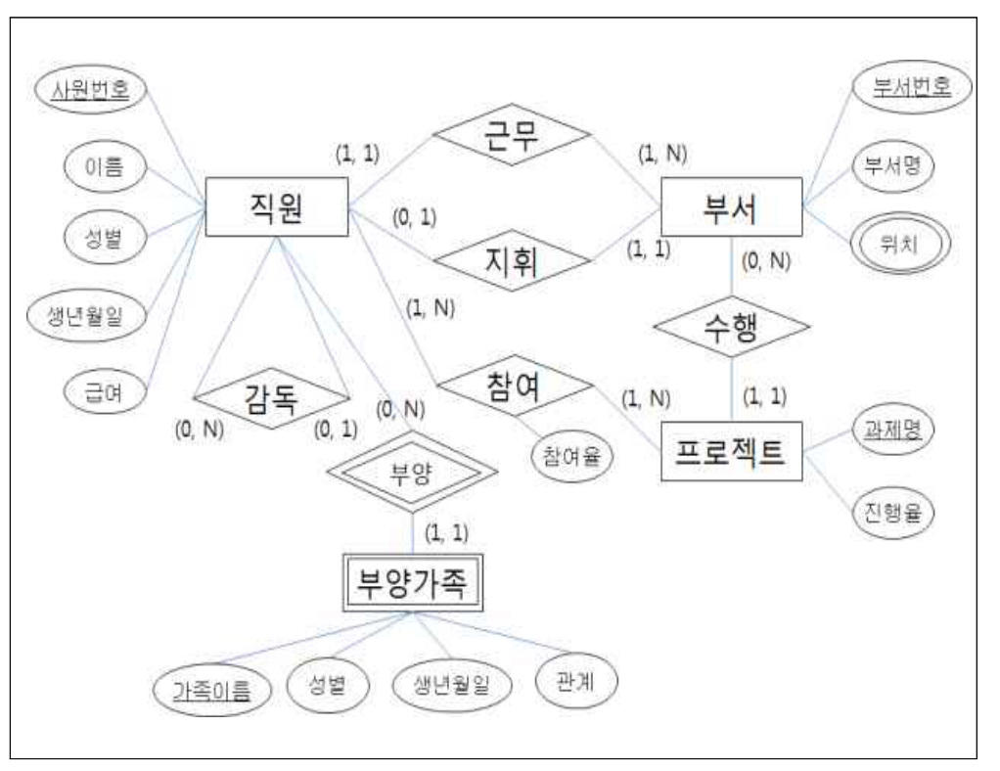
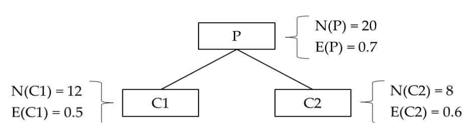
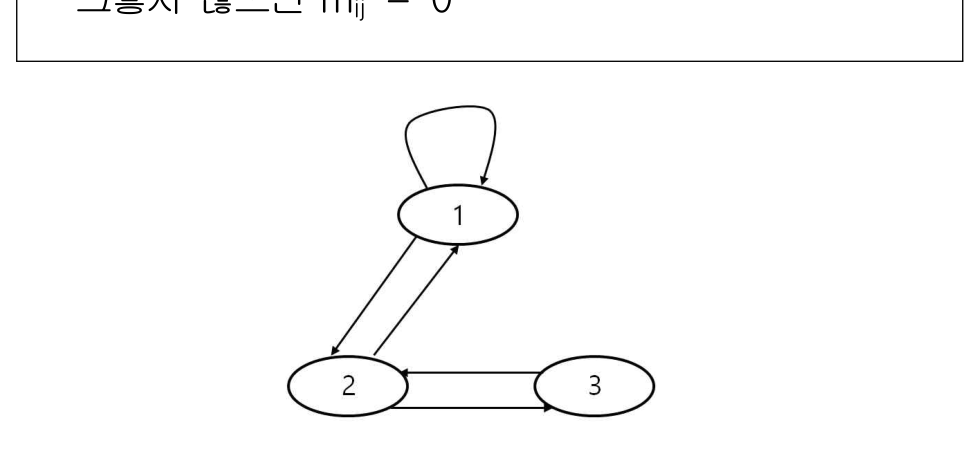

작성 기준: 업로드된 데이터베이스 강의자료(구환회기술사 Chapter1~7, 특강 및 출제 예상) 우선 근거, 외부지식은 보조적으로만 사용(강의자료 미수록 항목은 각 문항에 명시)
정답 출처: 2017년(제18회) 정보시스템 감리사 필기시험 문제 및 답안.pdf (원본 Bold 표시 정답 - 페이지 렌더 이미지 직접 대조 확인)
정답 신뢰도: 매우 높음 (stroke-text 자동추출 25/25 + 보기 영역 렌더 확대 육안 대조 25/25 일치, 계산·SQL·관계대수 문항은 별도 재검산)
★ 특이 문항 2건
- 61번: 문제 지문에 "(2개 선택)" 이 명시된 출제 의도 복수정답 → ③④
- 69번: 지문은 단수형이나 원본 답안에 ②③이 모두 Bold → 이의제기에 따른 복수정답으로 판단. REVOKE의 연쇄 회수(cascade) 해석 차이가 원인이다(해당 문항 「정답 해설」 참조).
기준 버전 주의: 본 회차는 2017년 시행분이다. NoSQL(72번), SQL Injection 대응(56번) 등은 이후 기술 변화가 있으므로, 각 문항의 「관련 이론 정리」 말미에 현행(2025년 기준) 보충사항을 병기하였다.
| 번호 | 정답 | 번호 | 정답 | 번호 | 정답 |
|---|---|---|---|---|---|
| 51 | ④ | 61 | ③④ (2개 선택) | 71 | ④ |
| 52 | ② | 62 | ② | 72 | ② |
| 53 | ④ | 63 | ① | 73 | ④ |
| 54 | ④ | 64 | ② | 74 | ④ |
| 55 | ③ | 65 | ③ | 75 | ③ |
| 56 | ① | 66 | ③ | ||
| 57 | ④ | 67 | ② | ||
| 58 | ① | 68 | ③ | ||
| 59 | ③ | 69 | ②③ (복수정답) | ||
| 60 | ④ | 70 | ① |
2017년 제18회 데이터베이스는 SQL과 인덱스·질의 최적화에 무게가 실린 회차다. 특이 문항이 2건(61번 2개 선택, 69번 복수정답) 있어 정답 확정에 주의가 필요하다.
영역별 배분은 ① SQL 6문항(51·55·57·58·59·60), ② 인덱스·물리설계 3문항(61·62·67), ③ 질의 최적화 2문항(66·68), ④ 트랜잭션·동시성 3문항(63·64·70), ⑤ 모델링·정규화 3문항(52·53·54), ⑥ 데이터마이닝 4문항(65·71·74·75), ⑦ NoSQL·분산·보안 4문항(56·69·72·73) 이다.
이 회차의 특징 네 가지.
첫째, 계산·추론 문항이 9개(52·53·54·58·66·69·70·71·75) 로 많다. 최소 커버(53), 슈퍼키 개수(54), 조인 선택률(66), 정보 이득(71), PageRank 전이 행렬(75), 충돌 직렬 가능성(70) 이 모두 직접 계산을 요구한다.
둘째, 그림 판독 문항이 세 개(52·71·75) 다. ER 다이어그램 → 테이블 개수(52), 의사결정 트리 정보 이득(71), 웹 링크 그래프 → 전이 행렬(75) 로, 모두 그림을 정확히 읽어야 계산이 시작된다. 본 해설집에서는 이 세 문항에 원본 이미지 + 서술 전사를 병기했다.
셋째, 인덱스 설계 지침이 세 문항(61·62·67) 이나 나왔다. 특히 61번은 "잘못된 것 2개" 를 고르는 형식이고, 62번은 함수 기반 인덱스, 67번은 색인 생성 지침으로 물리 설계 영역의 비중이 크다.
넷째, 데이터마이닝이 네 문항(65·71·74·75) 으로 확대되었다. 기법-이론 매칭(65), 정보 이득(71), 혼동행렬(74), PageRank(75)까지 범위가 넓다.
강의자료 커버리지는 정규화·SQL·트랜잭션·인덱스에서 양호하나, SQL Injection(56)·함수 기반 인덱스(62)·정보 이득/엔트로피(71)·PageRank(75)·권한 전파와 연쇄 회수(69) 는 업로드된 자료에 직접 수록되어 있지 않아 외부지식으로 보완했다.
| 항목 | 내용 |
|---|---|
| 문서명 | 정보시스템 감리사 데이터베이스 기출문제 해설집 - 2017년 제18회 |
| 대상 문항 | Q51 ~ Q75 (데이터베이스) |
| 원본 출처 | 2017년(제18회) 정보시스템 감리사 필기시험 문제 및 답안.pdf (p.12~16) |
| 정답 확인 방법 | stroke-text(글리프 render mode) 자동추출 + 보기 영역 렌더 확대 육안 대조 (25/25 일치) |
| 특이 문항 | 61번(2개 선택, ③④) · 69번(복수정답, ②③) |
| 그림 포함 문항 | 52번 ER 다이어그램 · 71번 의사결정 트리 · 75번 웹 링크 그래프 — 이미지 + 서술 전사 병기 |
| 표·SQL 제시 문항 | 54·55·57·58·59·60·63·64·66·69·70·74번 — 이미지 대신 마크다운 표/코드블록으로 전사 |
| 근거 강의자료 | 구환회기술사 Chapter1(개요)·Chapter2(트랜잭션)·Chapter3(모델링)·Chapter4(SQL)·Chapter5(유형)·Chapter6(분석)·Chapter7(빅데이터), 데이터베이스 특강 및 출제 예상 |
| 강의자료 미수록(외부지식 보완) 항목 | SQL Injection 대응(56), 함수 기반 인덱스(62), 권한 전파·연쇄 회수(69), 엔트로피·정보 이득(71), PageRank 전이 행렬(75) |
| 기준 버전 | 2017년 출제 당시 기준 + 현행(2025년) 보충사항 병기 |
뷰의 장점을 설명하는 것 중 가장 거리가 먼 것은?
① 테이블 구조가 변경되어도 뷰를 사용하는 응용 프로그램은 변경하지 않아도 된다.
② 뷰를 생성함으로써 복잡한 질의를 단순하게 작성할 수 있다.
③ 직원의 급여 정보 같은 숨기고 싶은 정보가 존재한다면 해당 칼럼을 빼고 뷰를 생성하여 사용한다.
④ 서버에 저장되는 컴포넌트로 독립적으로 실행되거나 다른 프로그램으로부터 실행된다.
정답 : ④번
정답 신뢰도 : 매우 높음 (원본 Bold 확인)
| 항목 | 내용 |
|---|---|
| 연도 | 2017년 (제18회) |
| 과목 | 데이터베이스 |
| 문항번호 | 51번 |
| 난이도 | 하 |
| 출제주제 | 뷰(view)의 장점 |
뷰는 2~3년 주기로 출제된다. 형태는 ① 장점 정오(본 문항), ② 갱신 가능 조건, ③ 보안 활용(2019년 53번), ④ 뷰를 통한 삽입 판정(2018년 63번), ⑤ 뷰 vs 구체화 뷰다. 다른 DB 객체와의 구분이 가장 자주 나오는 판별 지점이다.
| 연도 | 문항번호 | 핵심개념 |
|---|---|---|
| 2018 | 62 | 저장 프로시저 |
| 2018 | 63 | 뷰를 통한 삽입 제약 |
| 2019 | 53 | 뷰를 이용한 보안 |
뷰의 3대 장점 = 논리적 데이터 독립성 · 질의 단순화 · 보안
뷰는 "조회하는 가상 릴레이션" — 실행·호출되는 객체가 아니다
"서버에 저장되어 실행되는 컴포넌트" = 저장 프로시저
뷰는 데이터를 저장하지 않는다(저장하는 것은 구체화 뷰)
뷰 보안은 원본 테이블 권한 회수와 반드시 세트
뷰와 저장 프로시저의 근본적 차이
| 구분 | 뷰(view) | 저장 프로시저(stored procedure) |
|---|---|---|
| 본질 | 가상 릴레이션(질의 정의) | 실행 가능한 프로시저 |
| 사용 방식 | SELECT ... FROM 뷰 |
EXECUTE 프로시저, CALL |
| 반환 | 릴레이션(집합) | OUT 매개변수, 결과셋 |
| 절차적 구문 | 없음(단일 SELECT) | 있음(IF, LOOP, 예외처리) |
| 매개변수 | 없음 | IN / OUT / IN OUT |
| "실행" 개념 | 부적절 | 적절 |
보기 ④의 "독립적으로 실행되거나 다른 프로그램으로부터 실행된다" 는 호출·실행되는 객체를 서술하므로 저장 프로시저의 특성이다. 뷰는 실행하는 것이 아니라 조회하는 대상이다.
→ 정답 ④
판별 한 줄: 뷰는 "테이블처럼 쓰는 것", 프로시저는 "함수처럼 부르는 것" 이다.
뷰의 장점 3가지
| 장점 | 내용 |
|---|---|
| 논리적 데이터 독립성 | 기본 테이블 구조 변경이 응용에 파급되지 않음 |
| 질의 단순화 | 복잡한 조인·집계를 하나의 이름으로 |
| 보안 | 필요한 행·열만 노출 |
| (부가) 다양한 관점 | 같은 데이터를 사용자별로 다르게 제공 |
뷰의 단점·제약
| 제약 | 내용 |
|---|---|
| 갱신 제한 | 조인·집계·DISTINCT 뷰는 갱신 불가 |
| 인덱스 불가 | 일반 뷰에는 인덱스 생성 불가 |
| 성능 | 매번 기본 질의를 재실행 |
| ALTER 미지원 | DBMS에 따라 DROP 후 재생성 |
갱신 가능 뷰의 조건
| 조건 |
|---|
| 단일 테이블 기반 |
| 집계함수 없음 |
| GROUP BY / HAVING 없음 |
| DISTINCT 없음 |
| 기본키 포함 |
| 계산식 열에 값 대입 불가 |
뷰 vs 구체화 뷰(materialized view)
| 구분 | 뷰 | 구체화 뷰 |
|---|---|---|
| 데이터 저장 | 없음(정의만) | 실제 저장 |
| 최신성 | 항상 최신 | 갱신 주기 의존 |
| 조회 성능 | 매번 재실행 | 빠름 |
| 인덱스 | 불가 | 가능 |
| 용도 | 보안·단순화 | 집계·리포트 성능 |
DB 객체 유형 비교 — 혼동 방지
| 객체 | 성격 | 사용 |
|---|---|---|
| 뷰 | 가상 릴레이션 | SELECT FROM |
| 저장 프로시저 | 실행 가능 프로시저 | EXECUTE / CALL |
| 함수 | 값 반환 루틴 | SQL 문 안에서 사용 |
| 트리거 | 이벤트 기반 자동 실행 | 자동 |
| 시퀀스 | 순번 생성기 | NEXTVAL |
| 시노님 | 객체 별칭 | 참조 |
현행(2025년) 보충: 뷰 기반 보안은 사용자·부서마다 뷰를 만들어야 해 관리 부담이 크다. 최신 DBMS는 행 수준 보안(RLS) 과 동적 데이터 마스킹으로 하나의 테이블에 정책만 붙이는 방식을 제공한다.
DBMS 기능 PostgreSQL CREATE POLICY(RLS)Oracle VPD, Data Redaction SQL Server Row-Level Security, Dynamic Data Masking 강의자료 근거: Chapter4(SQL)에 뷰의 정의·장단점·갱신 조건이 수록되어 있다.
뷰는 접근 통제와 인터페이스 안정화에 널리 쓰인다.
| 용도 | 예 |
|---|---|
| 개인정보 마스킹 | 주민번호 뒷자리 가림 |
| 부서별 데이터 제한 | WHERE 부서 = USER 부서 |
| 레거시 인터페이스 유지 | 테이블 개편 후 구 구조 뷰 제공 |
| 집계 결과 제공 | 통계 전용 뷰 |
감리에서는 ① 뷰 생성 후 기본 테이블 권한이 회수되었는가, ② 갱신 가능 뷰에 WITH CHECK OPTION이 필요한 곳에 적용되었는가, ③ 뷰 중첩이 과도해 성능을 해치지 않는가, ④ 뷰 정의 변경 이력이 관리되는가를 점검한다.
흔한 결함: 마스킹 뷰를 만들었지만 원본 테이블 SELECT 권한을 그대로 두어, 사용자가 원본을 직접 조회해 개인정보를 볼 수 있는 사례다. 뷰는 원본 권한 회수와 세트여야 한다.
뷰 문항은 다른 객체의 설명을 섞는 방식으로 출제된다.
뷰의 특성 (○)
| 항목 |
|---|
| 데이터를 저장하지 않는 가상 릴레이션 |
| 논리적 데이터 독립성 제공 |
| 질의 단순화 |
| 보안(행·열 제한) |
| 조인·집계로 정의 가능(조회는 자유) |
| 갱신에는 제약이 있다 |
뷰가 아닌 것 (✗) — 출제 단골
| 틀린 서술 | 실제 객체 |
|---|---|
| 독립적으로 실행되는 컴포넌트 | 저장 프로시저(← 본 문항 ④) |
| 매개변수를 받는다 | 저장 프로시저·함수 |
| 이벤트 발생 시 자동 실행 | 트리거 |
| 값을 RETURN 한다 | 함수 |
| 데이터를 실제로 저장한다 | 구체화 뷰 |
논리적 데이터 독립성(logical data independence) 이다.
-- 기존
CREATE VIEW 사원요약 AS SELECT 사번, 이름, 부서번호 FROM 사원;
-- 사원 테이블에 컬럼이 추가되거나 테이블이 분해되어도
-- 뷰 정의만 수정하면 응용 프로그램은 그대로 사용 가능
CREATE OR REPLACE VIEW 사원요약 AS
SELECT e.사번, e.이름, d.부서번호
FROM 사원기본 e JOIN 사원소속 d ON e.사번 = d.사번; -- 테이블이 분해되어도
| 계층 | 역할 |
|---|---|
| 외부 스키마(뷰) | 응용이 보는 관점 — 유지 |
| 개념 스키마(테이블) | 실제 구조 — 변경 |
| 뷰 정의 | 둘 사이의 완충 장치 |
질의 단순화는 뷰의 대표적 실용 이점이다.
-- 복잡한 5개 테이블 조인 + 집계를 뷰로 캡슐화
CREATE VIEW 부서별실적 AS
SELECT d.부서명, SUM(s.금액) AS 매출, COUNT(DISTINCT e.사번) AS 인원
FROM 부서 d JOIN 사원 e ON d.부서번호 = e.부서번호
JOIN 매출 s ON e.사번 = s.담당자
JOIN …
GROUP BY d.부서명;
-- 사용자는 단순히
SELECT * FROM 부서별실적 WHERE 매출 > 100000000;
수직적 접근 통제(열 제한) 로, 뷰를 이용한 보안의 표준 패턴이다.
CREATE VIEW 사원공개 AS
SELECT 사번, 이름, 부서번호 -- 급여·주민번호 제외
FROM 사원;
REVOKE SELECT ON 사원 FROM 일반사용자; -- ★ 원본 권한 회수 필수
GRANT SELECT ON 사원공개 TO 일반사용자;
주의: 뷰만 만들고 원본 테이블 권한을 회수하지 않으면 보안 효과가 없다. 사용자가 원본을 직접 조회할 수 있기 때문이다.
소거 요령: ①·②·③은 각각 독립성·단순화·보안으로 뷰의 3대 장점에 정확히 대응한다. ④만 "실행" 이라는 동사를 쓰는데, 뷰는 실행 대상이 아니다.
다음은 어느 회사의 데이터베이스 구축을 위한 ER 다이어그램 설계 내용이다. ER 다이어그램을 데이터베이스 테이블로 변환할 때 생성되는 테이블의 가장 적절한 개수는?

(제시 도해 전사)
개체(entity)
| 개체 | 속성 | 비고 |
|---|---|---|
| 직원 | 사원번호(밑줄), 이름, 성별, 생년월일, 급여 | 정규 개체 |
| 부서 | 부서번호(밑줄), 부서명, 위치(이중 타원) | 위치 = 다중값 속성 |
| 프로젝트 | 과제명(밑줄), 진행율 | 정규 개체 |
| 부양가족 | 가족이름(점선 밑줄), 성별, 생년월일, 관계 | 이중 사각형 = 약한 개체 |
관계(relationship) — (min, max) 표기
| 관계 | 좌측 | 우측 | 카디널리티 | 관계 속성 |
|---|---|---|---|---|
| 근무 | 직원 (1, 1) | 부서 (1, N) | 1 : N | — |
| 지휘 | 직원 (0, 1) | 부서 (1, 1) | 1 : 1 | — |
| 감독 | 직원 (0, N) | 직원 (0, 1) | 1 : N (자기 참조) | — |
| 참여 | 직원 (1, N) | 프로젝트 (1, N) | M : N | 참여율 |
| 수행 | 부서 (0, N) | 프로젝트 (1, 1) | 1 : N | — |
| 부양 | 직원 (0, N) | 부양가족 (1, 1) | 1 : N (식별 관계) | — |
① 3-4개
② 5-6개
③ 7-8개
④ 9-10개
정답 : ②번
정답 신뢰도 : 매우 높음 (원본 Bold 확인)
| 항목 | 내용 |
|---|---|
| 연도 | 2017년 (제18회) |
| 과목 | 데이터베이스 |
| 문항번호 | 52번 |
| 난이도 | 상 |
| 출제주제 | ER 다이어그램 → 관계 테이블 변환 시 생성 테이블 개수 |
E-R → 테이블 변환은 매 회차 출제되는 최빈 주제다. 형태는 ① 테이블 개수 산출(본 문항), ② 외래키 개수(2018년 53번), ③ 매핑 규칙 정오(2018년 57번), ④ FK 배치 위치 판정이다. 본 문항은 개체 4종 + 관계 6종 + 다중값 속성이 모두 들어간 종합형으로 난이도가 높다.
| 연도 | 문항번호 | 핵심개념 |
|---|---|---|
| 2018 | 53 | 삼항 관계 외래키 개수 |
| 2018 | 57 | ER → 릴레이션 변환 규칙 |
| 2019 | 63 | ER → 테이블 개수 변환 |
테이블 생성 = 정규 개체 + 약한 개체 + M:N 관계 + 다중값 속성(이중 타원) + n항 관계
1:1 · 1:N 관계는 FK로 흡수 — 테이블이 생기지 않는다
(min, max) 표기에서 양쪽 max가 모두 N이면 M:N → 별도 테이블
약한 개체는 "개체 1개"로만 계수(식별 관계는 흡수됨)
본 문항: 직원·부서·프로젝트(3) + 부양가족(1) + 참여(1) + 부서위치(1) = 6개 → ②
테이블이 생성되는 요소만 계수한다
| 요소 | 대상 | 개수 |
|---|---|---|
| 정규 개체 | 직원, 부서, 프로젝트 | 3 |
| 약한 개체 | 부양가족 | 1 |
| M:N 관계 | 참여(직원 ↔ 프로젝트) | 1 |
| 다중값 속성 | 부서.위치(이중 타원) | 1 |
| 1:1 관계(지휘) | FK로 흡수 | 0 |
| 1:N 관계(근무·수행·감독·부양) | FK로 흡수 | 0 |
| 합계 | 6 |
6개 → 보기 ②(5-6개) → 정답 ②
최종 스키마 6개
-- 1. 직원 (정규 개체 + 1:N 관계들의 FK 흡수)
CREATE TABLE 직원 (
사원번호 VARCHAR(10) PRIMARY KEY,
이름 VARCHAR(50),
성별 CHAR(1),
생년월일 DATE,
급여 INT,
부서번호 VARCHAR(10) NOT NULL, -- 근무(1:N, 직원 측 (1,1) → NOT NULL)
감독자사번 VARCHAR(10) NULL, -- 감독(자기참조 1:N, (0,1) → NULL 허용)
FOREIGN KEY (부서번호) REFERENCES 부서(부서번호),
FOREIGN KEY (감독자사번) REFERENCES 직원(사원번호)
);
-- 2. 부서 (정규 개체 + 지휘 1:1 FK)
CREATE TABLE 부서 (
부서번호 VARCHAR(10) PRIMARY KEY,
부서명 VARCHAR(50),
지휘자사번 VARCHAR(10) NOT NULL UNIQUE, -- 지휘(1:1, 부서 측 (1,1) → NOT NULL + UNIQUE)
FOREIGN KEY (지휘자사번) REFERENCES 직원(사원번호)
);
-- 3. 프로젝트 (정규 개체 + 수행 1:N FK)
CREATE TABLE 프로젝트 (
과제명 VARCHAR(100) PRIMARY KEY,
진행율 DECIMAL(5,2),
부서번호 VARCHAR(10) NOT NULL, -- 수행(1:N, 프로젝트 측 (1,1) → NOT NULL)
FOREIGN KEY (부서번호) REFERENCES 부서(부서번호)
);
-- 4. 부양가족 (약한 개체 : 소유 PK + 부분키 = 복합 PK)
CREATE TABLE 부양가족 (
사원번호 VARCHAR(10), -- ★ 소유 개체 PK
가족이름 VARCHAR(50), -- ★ 부분키
성별 CHAR(1),
생년월일 DATE,
관계 VARCHAR(20),
PRIMARY KEY (사원번호, 가족이름),
FOREIGN KEY (사원번호) REFERENCES 직원(사원번호) ON DELETE CASCADE
);
-- 5. 참여 (M:N 관계 + 관계 속성)
CREATE TABLE 참여 (
사원번호 VARCHAR(10),
과제명 VARCHAR(100),
참여율 DECIMAL(5,2), -- ★ 관계 속성
PRIMARY KEY (사원번호, 과제명),
FOREIGN KEY (사원번호) REFERENCES 직원(사원번호),
FOREIGN KEY (과제명) REFERENCES 프로젝트(과제명)
);
-- 6. 부서위치 (다중값 속성)
CREATE TABLE 부서위치 (
부서번호 VARCHAR(10),
위치 VARCHAR(100),
PRIMARY KEY (부서번호, 위치),
FOREIGN KEY (부서번호) REFERENCES 부서(부서번호)
);
관계별 처리 근거
| 관계 | 카디널리티 | 처리 | 테이블 생성 |
|---|---|---|---|
| 근무(직원-부서) | 1 : N | N 측(직원)에 FK | ✗ |
| 지휘(직원-부서) | 1 : 1 | 전체 참여 측(부서)에 FK + UNIQUE | ✗ |
| 감독(직원-직원) | 1 : N 자기 참조 | 직원에 FK(감독자사번) | ✗ |
| 참여(직원-프로젝트) | M : N | 별도 테이블 ★ | ○ |
| 수행(부서-프로젝트) | 1 : N | N 측(프로젝트)에 FK | ✗ |
| 부양(직원-부양가족) | 1 : N 식별 | 약한 개체 테이블에 흡수 | (약한 개체로 계수) |
주의 — 부양 관계: 부양가족은 약한 개체이므로 부양가족 테이블 자체가 관계를 표현한다. 관계를 별도로 세지 않는다(약한 개체 1개로만 계수).
지휘 관계의 FK 배치 판정
직원 (0, 1) ─────[ 지휘 ]───── (1, 1) 부서
↑ 부분 참peo ↑ 전체 참여
"지휘하지 않는 직원도 있다" "모든 부서에 지휘자가 있다"
→ 전체 참여 측(부서)에 FK를 두면 NULL이 발생하지 않는다 ✓
| 배치안 | NULL 발생 |
|---|---|
| 부서에 지휘자사번 | 없음(모든 부서에 지휘자 존재) ✓ |
| 직원에 지휘부서번호 | 대부분 NULL(지휘하지 않는 직원 다수) ✗ |
정규 개체 3개 또는 4개만 센 경우다. M:N 관계와 다중값 속성을 놓쳤다.
| 누락 | 결과 |
|---|---|
| 참여(M:N) | 직원-프로젝트 배정 정보를 저장할 수 없음 |
| 부서.위치(다중값) | 1NF 위반 |
과잉 분해한 경우다. 흔한 착오는
| 착오 | 실제 |
|---|---|
| 1:N 관계(근무·수행·감독)를 별도 테이블로 | FK로 흡수 |
| 1:1 관계(지휘)를 별도 테이블로 | FK로 흡수 |
| 부양 관계를 부양가족과 별도로 | 약한 개체에 흡수 |
관계를 전부 테이블로 만들면 3(개체) + 1(약한개체) + 6(관계) + 1(다중값) = 11개가 되어 ④에 가까워진다.
모든 관계를 별도 테이블로 만든 경우다. 1:1·1:N 관계는 외래키로 흡수되므로 테이블이 생기지 않는다.
소거 요령: 테이블이 생기는 기호만 세면 된다.
기호 테이블 본 문제 사각형(정규 개체) ○ 3 이중 사각형(약한 개체) ○ 1 M:N 마름모 ○ 1(참여) 이중 타원(다중값) ○ 1(위치) 1:1 · 1:N 마름모 ✗ 0 단일 타원 ✗ 0 3 + 1 + 1 + 1 = 6 → 5-6개 구간 → ②
E-R → 관계 모델 매핑 7단계
| 단계 | 대상 | 방법 | 테이블 |
|---|---|---|---|
| 1 | 정규 개체 | 테이블, 키 → PK | ○ |
| 2 | 약한 개체 | 소유 PK를 FK로, (소유PK + 부분키) = PK | ○ |
| 3 | 1:1 관계 | 전체 참여 측에 FK + UNIQUE | ✗ |
| 4 | 1:N 관계 | N 측에 FK | ✗ |
| 5 | M:N 관계 | 별도 테이블(양쪽 PK 복합 + 관계 속성) | ○ |
| 6 | 다중값 속성 | 별도 테이블(개체 PK + 값) | ○ |
| 7 | n항 관계 | 별도 테이블(참여 개체 n개 PK) | ○ |
(min, max) 표기법 읽기
| 표기 | 의미 | FK 제약 |
|---|---|---|
| (1, 1) | 반드시 정확히 하나 | NOT NULL, 1측 |
| (0, 1) | 없거나 하나 | NULL 허용, 1측 |
| (1, N) | 하나 이상 | N측 |
| (0, N) | 없거나 여러 개 | N측 |
카디널리티 판정: 관계선 양쪽의 max 값을 본다.
- 양쪽 max = 1 → 1:1
- 한쪽 max = 1, 다른 쪽 = N → 1:N
- 양쪽 max = N → M:N
본 문제 관계의 카디널리티 판정
| 관계 | 직원 측 | 상대 측 | max 조합 | 카디널리티 |
|---|---|---|---|---|
| 근무 | (1, 1) | (1, N) | 1 : N | 1:N |
| 지휘 | (0, 1) | (1, 1) | 1 : 1 | 1:1 |
| 감독 | (0, N) | (0, 1) | N : 1 | 1:N |
| 참여 | (1, N) | (1, N) | N : N | M:N ★ |
| 수행(부서) | (0, N) | (1, 1) | N : 1 | 1:N |
| 부양 | (0, N) | (1, 1) | N : 1 | 1:N 식별 |
약한 개체(weak entity)의 특징
| 특징 | 내용 |
|---|---|
| 표기 | 이중 사각형 + 이중 마름모(식별 관계) |
| 키 | 부분키(점선 밑줄) 만 보유 |
| 기본키 | 소유 개체 PK + 부분키 |
| 존재 | 소유 개체에 종속 |
| 삭제 | ON DELETE CASCADE |
자기 참조 관계(recursive relationship)
직원 ────[ 감독 ]──── 직원
(0,N) (0,1)
"부하 0명 이상" "상사 0명 또는 1명"
→ 직원 테이블에 감독자사번(FK) 추가, NULL 허용
→ 최상위 직원(CEO)의 감독자사번 = NULL
1:N 자기 참조는 별도 테이블이 필요 없다. 같은 테이블 안에서 FK로 자기 자신을 참조한다.
다중값 속성 vs 복합 속성 — 최다 혼동
| 구분 | 다중값 속성 | 복합 속성 |
|---|---|---|
| 표기 | 이중 타원 | 타원 안에 하위 타원 |
| 예 | 부서.위치(여러 곳) | 주소 = 시 + 구 + 번지 |
| 처리 | 별도 테이블 | 여러 컬럼으로 분해 |
| 테이블 생성 | ○ | ✗ |
강의자료 근거: Chapter3(모델링)에 E-R 기호·매핑 규칙이 상세히 수록되어 있다.
E-R → 물리 모델 변환 검증은 설계 감리의 핵심 절차다.
| 점검 항목 | 확인 |
|---|---|
| M:N이 관계 테이블로 변환 | 개체에 FK를 억지로 넣지 않았는지 |
| 다중값 속성 분리 | 콤마 구분 문자열 저장 여부 |
| 약한 개체 복합 PK | 소유 PK 포함 여부 |
| 1:1의 UNIQUE 제약 | 누락 시 1:N으로 변질 |
| 참여 제약 → NOT NULL | (1,1)이면 NOT NULL |
감리에서는 ① 개념 모델의 모든 요소가 물리 모델에 반영되었는가, ② 다중값 속성이 1NF를 만족하도록 처리되었는가, ③ 자기 참조 관계의 FK가 NULL 허용인가(루트 표현), ④ 약한 개체의 삭제 정책이 CASCADE인가를 점검한다.
흔한 결함 1: 부서의 위치를 위치1, 위치2, 위치3 컬럼 반복으로 만들어, 위치가 4곳인 부서가 생기면 스키마를 변경해야 하는 사례다.
흔한 결함 2: 참여율(관계 속성)을 직원 테이블에 넣어, 한 직원이 여러 프로젝트에 참여하면 어느 프로젝트의 참여율인지 구분할 수 없는 사례다.
흔한 결함 3: 직원과 부서가 서로를 참조(근무·지휘)해 상호 참조 구조가 되므로, 초기 데이터 적재 순서를 설계해야 한다. 지연 제약(DEFERRABLE)이나 FK 후행 생성이 필요하다.
테이블 개수 문항은 기호 계수로 기계적으로 푼다.
계수 대상 (○)
| 기호 | 개수 |
|---|---|
| 사각형(정규 개체) | 각 1 |
| 이중 사각형(약한 개체) | 각 1 |
| M:N 마름모 | 각 1 |
| 이중 타원(다중값 속성) | 각 1 |
| 3항 이상 관계 | 각 1 |
계수 제외 (✗)
| 기호 |
|---|
| 단일 타원(단순 속성) |
| 복합 속성 |
| 점선 타원(유도 속성) |
| 1:1 · 1:N 마름모 |
| 이중 마름모(약한 개체에 흡수) |
본 문항 계수
사각형 : 직원, 부서, 프로젝트 → 3
이중사각형: 부양가족 → 1
M:N 마름모: 참여 (양쪽 max가 모두 N) → 1 ★ (min,max)의 max를 확인
이중타원 : 부서.위치 → 1 ★ 타원 테두리가 두 겹인지 확인
─────
6 → ② (5-6개)
감점 포인트
| 실수 | 예방 |
|---|---|
| (min,max)의 max를 놓쳐 M:N을 1:N으로 | 양쪽 max를 모두 확인 |
| 이중 타원을 못 알아봄 | 확대해 테두리 겹수 확인 |
| 1:N 관계를 별도 테이블로 | FK로 흡수 |
| 약한 개체 + 식별 관계를 2개로 계수 | 1개(관계는 흡수) |
다음과 같은 함수적 종속성 집합에 대한 설명 중 틀린 것은?
① 함수적 종속성 집합 { A → {B, C, D, E}, E → {F, G} } 로부터 A → {F, G} 를 추론할 수 있다.
② 함수적 종속성 집합 { A → B, C → {D, E}, {A, C} → F } 로부터 폐포집합 {A}⁺ = {A, B} 를 구할 수 있다.
③ 다음 두 함수적 종속성 집합 F = {A → C, AC → D, E → AD, E → H} 와 G = {A → CD, E → AH} 는 동등하다.
④ 함수적 종속성 집합 {B → A, D → A, AB → D}에 대한 최소 커버는 {B → A, D → A}이다.
정답 : ④번
정답 신뢰도 : 매우 높음 (원본 Bold 확인)
| 항목 | 내용 |
|---|---|
| 연도 | 2017년 (제18회) |
| 과목 | 데이터베이스 |
| 문항번호 | 53번 |
| 난이도 | 상 |
| 출제주제 | 함수 종속성 — 추론 규칙 · 폐포 · 동등성 · 최소 커버 |
함수 종속은 정규화 영역의 이론적 기반으로 자주 출제된다. 본 문항은 추론(①)·폐포(②)·동등성(③)·최소 커버(④) 를 한 문항에 모두 담은 종합형이다. 형태는 ① 정오 판정(본 문항), ② 폐포 계산, ③ 후보 키 도출, ④ 최소 커버 고르기(2018년 60번)다.
| 연도 | 문항번호 | 핵심개념 |
|---|---|---|
| 2017 | 54 | 슈퍼키 개수 계산 |
| 2018 | 60 | 최소 커버 도출 |
| 2019 | 66 | BCNF 분해·외래키 |
폐포 계산: 좌변의 "모든" 속성이 X⁺에 있어야 적용 — 일부만으로는 불가
최소 커버 3조건 + 전제 = 우변 단일 · 좌변 최소 · 중복 제거 · 그리고 원래 집합과 동등
좌변 축소 판정: (X − B)⁺ 에 우변이 있으면 B는 불필요
동등성 판정은 반드시 양방향(F→G, G→F 모두 확인)
본 문항: {B→A, D→A, AB→D}의 최소 커버 = {B→D, D→A} — 보기 ④는 D를 유도할 수 없어 동등하지 않음
보기 ④ 검증 — 최소 커버 도출
$$F = \{\ B \to A,\quad D \to A,\quad AB \to D\ \}$$
1단계 — 우변 단일 속성 분해
이미 모두 단일 속성이다. 변화 없음.
2단계 — 좌변 불필요 속성(extraneous attribute) 제거
AB → D 검사
(가) A를 제거하고 B → D 가 성립하는가?
B⁺ 계산 (F = {B→A, D→A, AB→D} 기준)
시작 : {B}
B → A : {B, A}
AB → D : {B, A, D} ← A와 B가 모두 있으므로 적용 가능
D → A : (A 이미 있음)
∴ B⁺ = {A, B, D}
D ∈ B⁺ 이므로 B → D 가 성립 → A는 불필요한 속성 ✓
(나) B를 제거하고 A → D 가 성립하는가?
A⁺ 계산
시작 : {A}
B→A : 좌변 B 없음 → 적용 불가
D→A : 좌변 D 없음 → 적용 불가
AB→D : 좌변에 B 없음 → 적용 불가
∴ A⁺ = {A}
D ∉ A⁺ 이므로 성립하지 않음 → B는 필수 ✓
결과
$$F' = \{\ B \to A,\quad D \to A,\quad \mathbf{B \to D}\ \}$$
3단계 — 중복 함수 종속 제거
(가) B → A 를 제거해도 되는가?
F'' = {D → A, B → D} 만으로 B⁺ 계산
시작 : {B}
B → D : {B, D}
D → A : {B, D, A} ← D가 생겼으므로 적용 가능
∴ B⁺ = {A, B, D}
A ∈ B⁺ 이므로 B → A 는 유도됨 → 제거 가능 ✓
이행 규칙: B → D 와 D → A 로부터 B → A 가 자동 유도된다.
(나) D → A 를 제거해도 되는가?
F'' = {B → D} 만으로 D⁺ 계산 → D⁺ = {D}
A ∉ D⁺ → 제거 불가, 필수 ✓
(다) B → D 를 제거해도 되는가?
F'' = {D → A} 만으로 B⁺ 계산 → B⁺ = {B}
D ∉ B⁺ → 제거 불가, 필수 ✓
최소 커버 결론
$$F_{\min} = \{\ \mathbf{B \to D},\quad \mathbf{D \to A}\ \}$$
보기 ④는 {B → A, D → A} 라고 했으므로 틀렸다. → 정답 ④
보기 ④가 왜 동등하지 않은가 — 결정적 검증
보기 ④의 집합 H = {B → A, D → A} 로 원래 F의 종속을 유도할 수 있는지 확인한다.
| 원래 F의 종속 | H에서 유도? |
|---|---|
| B → A | 직접 포함 ✓ |
| D → A | 직접 포함 ✓ |
| AB → D | AB⁺(H 기준) = {A, B} → D 없음 → 유도 불가 ✗ |
AB → D 를 유도할 수 없으므로 H는 F와 동등하지 않다. 최소 커버는 원래 집합과 반드시 동등해야 하므로 ④는 틀렸다.
핵심 오류: 보기 ④는
AB → D를 통째로 버렸다. 최소 커버는 불필요한 속성·중복 종속을 제거하는 것이지, 정보를 잃어버리는 것이 아니다.AB → D는 B → D 로 축소되어야 하며, 사라지면 안 된다.
암스트롱 공리(Armstrong's axioms)
| 규칙 | 내용 |
|---|---|
| 반사(reflexivity) | Y ⊆ X 이면 X → Y |
| 증가(augmentation) | X → Y 이면 XZ → YZ |
| 이행(transitivity) | X → Y, Y → Z 이면 X → Z |
유도 규칙(공리에서 파생)
| 규칙 | 내용 |
|---|---|
| 합집합(union) | X→Y, X→Z ⟹ X → YZ |
| 분해(decomposition) | X → YZ ⟹ X→Y, X→Z |
| 의사이행(pseudo-transitivity) | X→Y, WY→Z ⟹ WX → Z |
폐포(closure) 계산 알고리즘
X⁺ ← X
repeat
for each Y → Z in F
if Y ⊆ X⁺ then X⁺ ← X⁺ ∪ Z
until 변화 없음
핵심: Y ⊆ X⁺ 이어야 한다. 좌변의 모든 속성이 폐포에 있어야 적용된다(보기 ②의 함정).
최소 커버(minimal cover)의 3조건
| 조건 | 내용 |
|---|---|
| 1. 우변 단일 속성 | 모든 FD의 우변이 속성 하나 |
| 2. 좌변 최소화 | 좌변에서 어떤 속성도 제거 불가 |
| 3. 중복 제거 | 어떤 FD도 나머지로부터 유도 불가 |
| (전제) | F와 동등해야 한다 ★ |
네 번째 조건이 사실상 가장 중요하다. 아무리 간결해도 원래 집합과 동등하지 않으면 최소 커버가 아니다. 본 문항 ④가 위반한 지점이다.
최소 커버 도출 절차 — 본 문항 요약
| 단계 | 작업 | 결과 |
|---|---|---|
| 1 | 우변 분해 | 변화 없음 |
| 2 | AB → D 에서 A 제거(B⁺에 A 포함) | B → D |
| 3 | B → A 제거(B→D→A 이행) | {B → D, D → A} |
두 함수 종속 집합의 동등성 판정
$$F \equiv G \iff F^+ = G^+$$
실용적 판정법
1) G의 각 종속 X → Y 에 대해, F 기준으로 X⁺ 를 구해 Y ⊆ X⁺ 인지 확인
2) F의 각 종속 X → Y 에 대해, G 기준으로 X⁺ 를 구해 Y ⊆ X⁺ 인지 확인
3) 양쪽 모두 만족하면 동등
커버(cover)의 종류
| 용어 | 의미 |
|---|---|
| F는 G를 커버한다 | G의 모든 종속이 F로부터 유도됨(G⁺ ⊆ F⁺) |
| 동등(equivalent) | 서로를 커버(F⁺ = G⁺) |
| 최소 커버 | 동등하면서 3조건을 만족하는 최소 집합 |
최소 커버의 유일성
| 성질 | 내용 |
|---|---|
| 존재성 | 항상 존재 |
| 유일성 | 보장되지 않음(검사 순서에 따라 달라질 수 있음) |
| 동등성 | 어떤 최소 커버든 F⁺와 동등 |
최소 커버의 용도 — 3NF 합성
최소 커버 = {B → D, D → A}
각 FD마다 릴레이션 생성
R1(B, D) ← B → D
R2(D, A) ← D → A
후보 키 확인 : B⁺ = {A,B,D} = 전체 → B가 후보 키
R1(B, D)에 B 포함 ✓ → 추가 릴레이션 불필요
결과 : R1(B, D), R2(D, A) ← 3NF, 무손실, 종속성 보존
강의자료 근거: Chapter3(모델링)에 함수 종속·암스트롱 공리·폐포·최소 커버·동등성이 수록되어 있다.
함수 종속 분석은 데이터 모델 검증의 이론적 기반이다.
| 활용 | 내용 |
|---|---|
| 정규화 근거 | 함수 종속 목록에서 이상 현상 도출 |
| 후보 키 도출 | 폐포 계산으로 키 확정 |
| 중복 제약 제거 | 유도 가능한 CHECK·인덱스 정리 |
| 업무 규칙 검증 | 규칙 간 모순·중복 발견 |
| 3NF 자동 합성 | 최소 커버 → 릴레이션 생성 |
감리에서는 ① 업무 규칙(함수 종속)이 문서화되었는가, ② 정규화 근거가 함수 종속 분석에 기반하는가, ③ 중복·모순 규칙이 정리되었는가, ④ 도출된 후보 키가 실제 데이터와 일치하는가를 점검한다.
흔한 결함: 업무 규칙을 수집만 하고 중복·모순을 정리하지 않아, 같은 제약이 CHECK 제약·트리거·애플리케이션 검증에 삼중 구현되고 셋 중 하나만 수정되어 동작이 어긋나는 사례다. 최소 커버 개념으로 규칙을 정리해야 한다.
함수 종속 문항은 폐포 계산 하나로 모두 대응된다.
핵심 절차
| 유형 | 방법 |
|---|---|
| 추론 가능 여부 | X⁺ 를 구해 Y ⊆ X⁺ 인지 |
| 폐포 값 확인 | 알고리즘 그대로 적용 |
| 동등성 판정 | 양방향 유도 확인 |
| 최소 커버 | 좌변 축소 → 중복 제거 → 동등성 확인 |
폐포 계산 3대 실수
| 실수 | 예방 |
|---|---|
| 좌변 일부만 있어도 적용 | 좌변 전체가 폐포에 포함되어야 함 |
| 연쇄 적용 누락 | 새 속성이 추가되면 처음부터 다시 훑기 |
| 자기 자신 누락 | X⁺ 는 X를 포함하고 시작 |
최소 커버 판정 요령
후보 집합이 원래 집합과 동등한가를 먼저 본다.
원래 F에서 유도되던 종속을 후보가 유도하지 못하면 즉시 오답이다.
본 문항 30초 풀이
④ {B→A, D→A}가 최소 커버?
→ 이 집합에서 D를 얻을 수 있나?
B⁺ = {B, A}, A⁺ = {A}, D⁺ = {D, A}
→ 어디에서도 D를 새로 얻지 못한다
→ 그런데 원래 F에는 AB → D 가 있었다
→ 동등하지 않음 → 틀림 → 정답 ④
$$F = \{\ A \to BCDE,\quad E \to FG\ \}$$
A⁺ 계산
시작 : {A}
A → BCDE : {A, B, C, D, E}
E → FG : {A, B, C, D, E, F, G} ← E가 포함되었으므로 적용
∴ A⁺ = {A, B, C, D, E, F, G}
F, G ∈ A⁺ 이므로 A → FG 가 성립한다.
암스트롱 공리 적용: A → E(분해 규칙)와 E → FG 로부터 이행 규칙(transitivity) 에 의해 A → FG. ✓
$$F = \{\ A \to B,\quad C \to DE,\quad AC \to F\ \}$$
A⁺ 계산
시작 : {A}
A → B : {A, B}
C → DE : 좌변 C가 A⁺에 없음 → 적용 불가
AC → F : 좌변에 C가 없음 → 적용 불가
더 이상 추가 없음
∴ A⁺ = {A, B} ✓
정확하다. C를 얻을 방법이 없으므로 나머지 두 종속을 적용할 수 없다.
폐포 계산의 함정:
AC → F를 보고 "A가 있으니 F도 얻는다"고 착각하기 쉽다. 좌변의 모든 속성(A 그리고 C)이 있어야 적용된다.
$$F = \{A \to C,\ AC \to D,\ E \to AD,\ E \to H\}, \qquad G = \{A \to CD,\ E \to AH\}$$
동등성 = 양방향 유도 가능성을 확인한다.
(가) G의 모든 종속이 F로부터 유도되는가
| G의 종속 | F 기준 폐포 | 판정 |
|---|---|---|
| A → CD | A⁺: {A} → A→C → {A,C} → AC→D → {A,C,D} | C, D 포함 ✓ |
| E → AH | E⁺: {E} → E→AD → {E,A,D} → E→H → {E,A,D,H} → A→C → {A,C,D,E,H} | A, H 포함 ✓ |
(나) F의 모든 종속이 G로부터 유도되는가
| F의 종속 | G 기준 폐포 | 판정 |
|---|---|---|
| A → C | A⁺: {A} → A→CD → {A,C,D} | C 포함 ✓ |
| AC → D | AC⁺: {A,C} → A→CD → {A,C,D} | D 포함 ✓ |
| E → AD | E⁺: {E} → E→AH → {E,A,H} → A→CD → {A,C,D,E,H} | A, D 포함 ✓ |
| E → H | E⁺ = {A,C,D,E,H} | H 포함 ✓ |
양방향 모두 유도 가능 → F⁺ = G⁺ → 동등하다. ✓
동등성 판정법: F의 각 종속이 G에서 유도되고, G의 각 종속이 F에서 유도되면 두 집합은 동등하다. 한 방향만 확인하면 안 된다.
소거 요령: ①·②·③은 모두 폐포 계산으로 검증되는 사실이다. ④만 "최소 커버가 ~이다" 라는 결과 단정인데, 최소 커버는 원래 집합과 동등해야 한다는 필수 조건이 있다.
빠른 판정: 보기 ④의 집합 {B→A, D→A} 에는 좌변이 B인 종속으로 A만 나온다. D를 유도할 방법이 전혀 없다. 그런데 원래 F에는
AB → D가 있어 D를 결정할 수 있었다. 정보가 사라졌으므로 동등하지 않다 → 즉시 오답.
다음과 같이 선언된 테이블 MYTABLE에서 슈퍼키의 개수는?
CREATE TABLE MYTABLE (
X INTEGER,
Y INTEGER,
Z INTEGER NOT NULL,
PRIMARY KEY (X, Y),
UNIQUE (Z)
);
① 2
② 3
③ 4
④ 5
정답 : ④번
정답 신뢰도 : 매우 높음 (원본 Bold 확인)
| 항목 | 내용 |
|---|---|
| 연도 | 2017년 (제18회) |
| 과목 | 데이터베이스 |
| 문항번호 | 54번 |
| 난이도 | 중상 |
| 출제주제 | 슈퍼키(super key)의 개수 계산 |
키 관련 문항은 매 회차 출제되는 기본 주제다. 형태는 ① 슈퍼키 개수 계산(본 문항), ② 키 포함 관계 정오(2018년 54번), ③ FD에서 후보 키 도출, ④ 기본 키 선정 기준이다. "슈퍼키는 최소성을 요구하지 않는다" 는 성질이 계산의 출발점이다.
| 연도 | 문항번호 | 핵심개념 |
|---|---|---|
| 2017 | 53 | 함수 종속·폐포·최소 커버 |
| 2018 | 54 | 키의 종류·포함 관계 |
| 2020 | 58 | 후보키 폐포 계산 |
슈퍼키 = 후보 키를 포함하는 모든 부분집합 — 최소성 불필요
후보 키 하나(크기 k, 전체 n개 속성)일 때 슈퍼키 수 = 2^(n−k)
후보 키가 여럿이면 포함-배제 원리로 합집합 계산
UNIQUE + NOT NULL 이어야 완전한 후보 키(UNIQUE만으로는 여러 NULL 허용)
복합키의 개별 속성({X}, {Y})은 슈퍼키가 아니다
본 문항: 8개 부분집합 − 3개(∅·{X}·{Y}) = 5개
1단계 — 후보 키 확정
| 제약 | 의미 | 후보 키 |
|---|---|---|
| PRIMARY KEY (X, Y) | (X,Y) 조합이 유일 + NOT NULL | {X, Y} ✓ |
| UNIQUE (Z) + Z NOT NULL | Z가 유일 + NOT NULL | {Z} ✓ |
후보 키 = {X, Y}, {Z} — 2개
Z가 후보 키인 이유:
UNIQUE만으로는 여러 NULL이 허용되어 후보 키로 부족할 수 있으나, 본 문제는Z INTEGER NOT NULL이 함께 선언되어 유일성 + NULL 불가를 모두 만족한다. 따라서 Z는 완전한 후보 키(대체 키) 다.
2단계 — 모든 부분집합 열거
속성 집합 U = {X, Y, Z} → 부분집합 2³ = 8개
| # | 부분집합 | {X,Y} 포함? | {Z} 포함? | 슈퍼키? |
|---|---|---|---|---|
| 1 | ∅ | ✗ | ✗ | ✗ |
| 2 | {X} | ✗ | ✗ | ✗ |
| 3 | {Y} | ✗ | ✗ | ✗ |
| 4 | {Z} | ✗ | ○ | ○ |
| 5 | {X, Y} | ○ | ✗ | ○ |
| 6 | {X, Z} | ✗ | ○ | ○ |
| 7 | {Y, Z} | ✗ | ○ | ○ |
| 8 | {X, Y, Z} | ○ | ○ | ○ |
슈퍼키 = {Z}, {X,Y}, {X,Z}, {Y,Z}, {X,Y,Z} = 5개
→ 정답 ④
슈퍼키가 아닌 것의 근거
| 부분집합 | 유일성 판단 |
|---|---|
| ∅(공집합) | 아무 속성도 없어 식별 불가 |
| {X} | X 단독으로는 유일하지 않음(복합키의 일부) |
| {Y} | Y 단독으로는 유일하지 않음 |
예시로 확인
X | Y | Z
--+---+---
1 | 1 | 10
1 | 2 | 20 ← X가 중복(1) → {X}는 슈퍼키 아님
2 | 1 | 30 ← Y가 중복(1) → {Y}는 슈퍼키 아님
그러나 (X,Y) 조합은 (1,1),(1,2),(2,1)로 모두 다르고, Z도 10,20,30으로 모두 다르다.
집합론적 계산법 — 포함-배제 원리
$$|\text{슈퍼키}| = |A \cup B|= |A| + |B| - |A \cap B|$$
| 기호 | 정의 | 개수 |
|---|---|---|
| A | {X,Y}를 포함하는 부분집합 | 나머지 속성 {Z}의 부분집합 수 = 2¹ = 2 |
| B | {Z}를 포함하는 부분집합 | 나머지 속성 {X,Y}의 부분집합 수 = 2² = 4 |
| A ∩ B | {X,Y,Z}를 모두 포함 | 2⁰ = 1 |
$$|A \cup B| = 2 + 4 - 1 = \mathbf{5}$$
계산 결과 일치. ✓
| 집합 | 구성 요소 |
|---|---|
| A = {X,Y} 포함 | {X,Y}, {X,Y,Z} |
| B = {Z} 포함 | {Z}, {X,Z}, {Y,Z}, {X,Y,Z} |
| A ∩ B | {X,Y,Z} |
후보 키의 개수를 센 것이다. 후보 키는 {X,Y}, {Z} 2개가 맞지만, 문제는 슈퍼키를 묻는다.
슈퍼키 ⊇ 후보 키 — 슈퍼키는 후보 키를 포함하는 모든 상위 집합을 포함하므로 항상 더 많다.
{X,Y}, {Z}, {X,Y,Z} 만 센 경우로 보인다. {X,Z}, {Y,Z} 를 놓쳤다.
함정: {X,Z}는 X가 불필요하지만 Z가 이미 유일성을 보장하므로 여전히 슈퍼키다. 슈퍼키는 최소성을 요구하지 않는다.
하나를 빠뜨린 경우다. 흔히 {X,Y,Z} 를 "중복이니 제외"하거나, {X,Z} 또는 {Y,Z} 중 하나를 놓친다.
소거 요령: 슈퍼키 = 후보 키를 "포함하는" 모든 집합이다. 최소성은 무관하다.
속성이 3개이므로 부분집합은 8개이고, 슈퍼키가 아닌 것만 세면 빠르다.
- ∅, {X}, {Y} → 3개가 슈퍼키 아님
- 8 − 3 = 5개 ✓슈퍼키가 아닌 것을 찾는 편이 훨씬 빠르다.
키의 정의와 포함 관계
$$\text{기본키} \subseteq \text{후보키} \subseteq \text{슈퍼키}$$
| 키 | 조건 | 최소성 |
|---|---|---|
| 슈퍼 키 | 유일성만 | 불필요 |
| 후보 키 | 유일성 + 최소성 | 필요 |
| 기본 키 | 후보 키 중 선택된 1개 | 필요 |
| 대체 키 | 기본 키가 아닌 나머지 후보 키 | 필요 |
슈퍼키 개수 계산 공식
후보 키가 하나(속성 k개)인 경우
$$|\text{슈퍼키}| = 2^{\,n - k}$$
| 기호 | 의미 |
|---|---|
| n | 전체 속성 수 |
| k | 후보 키의 속성 수 |
후보 키가 여러 개인 경우 — 포함-배제
$$|\text{슈퍼키}| = \left| \bigcup_{i} A_i \right|, \qquad A_i = \{\,S \subseteq U \mid K_i \subseteq S\,\}$$
본 문제 적용
| 후보 키 | 포함하는 부분집합 수 |
|---|---|
| {X, Y} (k=2) | 2^(3−2) = 2 |
| {Z} (k=1) | 2^(3−1) = 4 |
| 교집합 {X,Y,Z} | 2^(3−3) = 1 |
| 합집합 | 2 + 4 − 1 = 5 ✓ |
속성 수별 슈퍼키 개수 예시 (후보 키 1개)
| 전체 속성 n | 후보 키 크기 k | 슈퍼키 수 |
|---|---|---|
| 3 | 1 | 2² = 4 |
| 3 | 2 | 2¹ = 2 |
| 4 | 1 | 2³ = 8 |
| 5 | 2 | 2³ = 8 |
| 10 | 1 | 2⁹ = 512 |
슈퍼키는 기하급수적으로 많다. 이것이 "수퍼키는 후보키가 된다"는 명제가 거짓인 이유이기도 하다(2018년 54번 참조).
UNIQUE 제약과 NULL — 중요한 전제
| 제약 | NULL 허용 | 후보 키 자격 |
|---|---|---|
| PRIMARY KEY | 불가 | ○ 항상 |
| UNIQUE만 | 대부분 DBMS에서 여러 NULL 허용 | △ 조건부 |
| UNIQUE + NOT NULL | 불가 | ○ |
본 문제의 핵심 전제:
Z INTEGER NOT NULL이 있어야 {Z}가 후보 키가 된다. 만약 NOT NULL이 없었다면 Z에 여러 NULL이 들어갈 수 있어 엄밀한 의미의 후보 키로 보기 어렵다.출제자가 의도적으로
NOT NULL을 명시한 것은 이 때문이다.
복합키의 부분집합 — 자주 나오는 함정
PRIMARY KEY (X, Y) 일 때
{X} → 슈퍼키 아님 (복합키의 일부)
{Y} → 슈퍼키 아님
{X, Y} → 후보키이자 슈퍼키 ✓
복합키의 개별 속성은 유일성을 보장하지 않는다. 반드시 조합이어야 한다.
관련 개념 — 차수와 슈퍼키
| 개념 | 내용 |
|---|---|
| 차수(degree) | 릴레이션의 속성 수(본 문제 3) |
| 부분집합 수 | 2^차수(본 문제 8) |
| 슈퍼키 수 | 후보 키를 포함하는 부분집합 수 |
강의자료 근거: Chapter1(개요)·Chapter3(모델링)에 키의 종류와 무결성 제약이 수록되어 있다.
키 설계는 데이터 모델의 근간이다.
| 상황 | 권장 |
|---|---|
| 후보 키가 여러 개 | 하나는 PK, 나머지는 UNIQUE + NOT NULL |
| 자연키가 변경 가능 | 대리키 도입 |
| 복합키가 4개 이상 속성 | 대리키 검토 |
| 개인정보가 자연키 | 대리키 필수(주민번호 → 회원번호) |
감리에서는 ① 대체 키에 UNIQUE 제약이 선언되었는가, ② UNIQUE 컬럼이 업무상 필수라면 NOT NULL도 함께 걸려 있는가, ③ 기본 키가 불변·최소 요건을 만족하는가, ④ 복합 키가 과도하게 길지 않은가를 점검한다.
흔한 결함 1: 후보 키가 여럿인데 PK만 제약을 걸고 대체 키에는 UNIQUE를 누락해, 이메일·사업자번호가 중복 등록되는 사례다.
흔한 결함 2: UNIQUE 만 걸고 NOT NULL 을 빠뜨려, 여러 행이 NULL을 가지면서 사실상 중복이 발생하는 사례다. 본 문제의 Z처럼 UNIQUE + NOT NULL 세트가 필요하다.
슈퍼키 개수 문항은 두 가지 방법 중 편한 쪽으로 푼다.
방법 1 — 전수 열거(속성이 적을 때)
1) 전체 부분집합 2ⁿ 개를 나열
2) 각각이 후보 키를 포함하는지 확인
3) 포함하는 것의 개수
방법 2 — 포함-배제(빠름)
$$|\text{슈퍼키}| = \sum_i 2^{\,n-k_i} - (\text{중복 보정})$$
본 문항 30초 풀이
속성 3개 → 부분집합 8개
후보키 : {X,Y}, {Z}
슈퍼키가 "아닌" 것만 찾기
∅, {X}, {Y} → 3개
8 − 3 = 5 → ④
감점 포인트
| 실수 | 예방 |
|---|---|
| 후보 키 개수를 답으로 | 문제가 슈퍼키를 묻는지 확인 |
| {X,Z}, {Y,Z} 누락 | 최소성 불필요 — 후보 키만 포함하면 됨 |
| {X,Y,Z} 제외 | 전체 집합도 슈퍼키 |
| Z를 후보 키로 안 봄 | UNIQUE + NOT NULL 확인 |
| 공집합을 슈퍼키로 | ∅는 식별 불가 |
출제 변형
| 유형 | 대비 |
|---|---|
| 슈퍼키 개수(본 문항) | 부분집합 열거 |
| 후보 키 개수 | 최소성 확인 |
| FD에서 후보 키 도출 | 폐포 계산 |
| 키 포함 관계 정오 | 기본⊆후보⊆슈퍼 |
다음은 릴레이션 R1, R2와 SQL 질의문이다. SQL 문에 대한 관계대수 연산으로 가장 적합한 것은? (⋈은 자연조인, ⟕은 왼쪽 외부조인 기호)
(릴레이션)
R1(r1name, a, b, c)
R2(r2name, a, b, c)
SELECT r1name FROM R1
WHERE EXISTS (SELECT * FROM R2
WHERE (r1name = r2name))
① π_r1name (R1 ⟕_{r1name = r2name} R2)
② π_r1name (R2 − R1)
③ π_r1name (R1 ⋈_{r1name = r2name} R2)
④ π_r1name (R1 − R2)
정답 : ③번
정답 신뢰도 : 매우 높음 (원본 Bold 확인)
EXISTS = 세미조인(semi-join) — R2에 짝이 있는 R1의 튜플만 선택| 항목 | 내용 |
|---|---|
| 연도 | 2017년 (제18회) |
| 과목 | 데이터베이스 |
| 문항번호 | 55번 |
| 난이도 | 중 |
| 출제주제 | EXISTS 부속질의 ↔ 관계대수(세미조인) 변환 |
SQL ↔ 관계대수 변환은 매 회차 출제되는 주제다. 형태는 ① SQL → 관계대수(본 문항), ② 관계대수 → SQL, ③ 등가 질의 찾기(2018년 57번), ④ 결과 릴레이션 산출이다. EXISTS = 세미조인 = 내부조인 + 프로젝션이라는 대응이 가장 자주 출제된다.
| 연도 | 문항번호 | 핵심개념 |
|---|---|---|
| 2017 | 57 | 등가 SQL 판정(INTERSECT·IN) |
| 2018 | 59 | 관계대수 연산 결과 |
| 2019 | 57 | 부정 질의·<> ANY |
EXISTS= 세미조인(⋉) = π_R(R ⋈ S) — "짝이 있는 것만" 필터
NOT EXISTS= 안티조인(▷) — "짝이 없는 것만"
외부조인(⟕)은 짝이 없어도 보존 → EXISTS와 다르다
관계대수는 집합 의미론 — π 이후 중복 자동 제거(SQL의 DISTINCT)
EXISTS는 첫 행을 찾으면 즉시 종료(short-circuit)되어 효율적
EXISTS 부속질의의 의미
SELECT r1name FROM R1
WHERE EXISTS (SELECT * FROM R2 WHERE r1name = r2name)
"R1의 각 튜플에 대해, 같은 이름을 가진 R2 튜플이 하나라도 존재하면 선택한다"
| 요소 | 의미 |
|---|---|
| 상관 부속질의 | 외부 R1의 r1name 을 참조 |
| EXISTS | 존재 여부만 판정(개수 무관) |
| 결과 속성 | R1의 r1name만 |
세미조인(semi-join)과의 대응
$$R1 \ltimes_{r1name = r2name} R2 \;=\; \pi_{\text{attr}(R1)}\big(R1 \bowtie_{r1name = r2name} R2\big)$$
따라서
$$\pi_{r1name}(R1 \ltimes R2) \;=\; \pi_{r1name}(R1 \bowtie_{r1name=r2name} R2)$$
보기 ③이 정확히 이 형태다. → 정답 ③
중복 제거: 관계대수는 집합 의미론이므로, R2에 같은 이름이 여러 개 있어도 π 이후 중복이 제거되어 EXISTS의 결과와 일치한다.
구체적 예시로 검증
R1 R2
┌────────┬───┬───┬───┐ ┌────────┬───┬───┬───┐
│ r1name │ a │ b │ c │ │ r2name │ a │ b │ c │
├────────┼───┼───┼───┤ ├────────┼───┼───┼───┤
│ KIM │ 1 │ 2 │ 3 │ │ KIM │ 9 │ 8 │ 7 │
│ LEE │ 4 │ 5 │ 6 │ │ KIM │ 6 │ 5 │ 4 │ ← KIM이 2건
│ PARK │ 7 │ 8 │ 9 │ │ PARK │ 3 │ 2 │ 1 │
└────────┴───┴───┴───┘ └────────┴───┴───┴───┘
SQL 결과
| r1name | EXISTS 판정 | 선택 |
|---|---|---|
| KIM | R2에 KIM 존재(2건) | ○ |
| LEE | R2에 LEE 없음 | ✗ |
| PARK | R2에 PARK 존재(1건) | ○ |
결과 = {KIM, PARK}
보기 ③ 전개
R1 ⋈_{r1name=r2name} R2 → 3행
(KIM, 1,2,3, KIM, 9,8,7)
(KIM, 1,2,3, KIM, 6,5,4)
(PARK,7,8,9, PARK,3,2,1)
π_r1name → {KIM, KIM, PARK} → 중복 제거 → {KIM, PARK} ✓ 일치
왼쪽 외부조인은 R1의 모든 튜플을 보존한다. 짝이 없는 튜플도 R2 속성을 NULL로 채워 유지된다.
R1 ⟕_{r1name=r2name} R2
(KIM, 1,2,3, KIM, 9,8,7)
(KIM, 1,2,3, KIM, 6,5,4)
(LEE, 4,5,6, NULL, NULL, NULL, NULL) ← ★ 짝이 없어도 보존
(PARK,7,8,9, PARK,3,2,1)
π_r1name → {KIM, LEE, PARK}
LEE가 포함되어 EXISTS 결과({KIM, PARK})와 다르다. ✗
외부조인에 대응하는 SQL:
LEFT OUTER JOIN이며, EXISTS가 아니라 "모든 R1 튜플을 보여 주되 짝이 있으면 함께" 라는 요구에 해당한다.
두 가지 문제가 있다.
| 문제 | 내용 |
|---|---|
| 방향 반대 | R2에서 R1을 뺀 것(EXISTS는 R1 기준) |
| 속성 이름 불일치 | R2에는 r1name 속성이 없다 → π_r1name 자체가 불가능 |
합병 가능성(union compatibility): 차집합(−)은 두 릴레이션의 차수가 같고 대응 속성의 도메인이 같아야 한다. R1(r1name,a,b,c)와 R2(r2name,a,b,c)는 차수는 4로 같지만, 첫 속성의 이름이 다르다. 도메인이 같다고 가정하면 연산 자체는 가능하나, 결과의 첫 속성명은 r2name 이므로
π_r1name을 적용할 수 없다.
차집합은 "R2에 없는 R1 튜플" 을 구한다. 이는 NOT EXISTS(안티 조인) 에 해당한다.
R1 − R2 (튜플 전체가 일치하는 것을 제거)
→ 본 예시에서는 a,b,c 값이 모두 달라 R1 전체가 남음
→ {KIM, LEE, PARK}
EXISTS(존재)가 아니라 NOT EXISTS(부재)의 개념이며, 결과도 다르다. ✗
| SQL | 관계대수 |
|---|---|
EXISTS |
세미조인 R1 ⋉ R2 ← 본 문제 |
NOT EXISTS |
안티조인 R1 ▷ R2 |
주의:
R1 − R2는 튜플 전체가 일치하는 것을 제거하는 연산이지, 조인 조건 기준이 아니다. 안티조인과도 정확히 같지 않다.소거 요령: EXISTS = "짝이 있는 것만" = 조인 계열이다.
보기 연산 EXISTS와 부합? ① 외부조인 ✗ 짝 없는 것도 포함 ② 차집합(방향 반대) ✗ ③ 내부조인 + 프로젝션 ○ ④ 차집합 ✗ NOT EXISTS 개념 조인 계열은 ①·③뿐이고, 그중 짝이 있는 것만 남기는 내부조인이 ③이다.
SQL ↔ 관계대수 대응표
| SQL | 관계대수 |
|---|---|
SELECT 열 |
π(프로젝션) |
WHERE 조건 |
σ(실렉트) |
FROM A, B (조건 없음) |
×(카티션 곱) |
A JOIN B ON 조건 |
⋈_θ(세타·동등 조인) |
NATURAL JOIN |
⋈(자연 조인) |
LEFT OUTER JOIN |
⟕ |
WHERE EXISTS (...) |
⋉(세미조인) ★ |
WHERE NOT EXISTS (...) |
▷(안티조인) |
WHERE IN (...) |
세미조인(≈) |
WHERE NOT IN (...) |
안티조인(≈, NULL 주의) |
UNION |
∪ |
INTERSECT |
∩ |
EXCEPT / MINUS |
− |
세미조인(semi-join)의 정의와 성질
$$R \ltimes_\theta S = \pi_{\text{attr}(R)}(R \bowtie_\theta S)$$
| 성질 | 내용 |
|---|---|
| 결과 차수 | R의 차수(S 속성 없음) |
| 결과 카디널리티 | ≤ |R|(중복 증폭 없음) |
| 비대칭 | R ⋉ S ≠ S ⋉ R |
| 주 용도 | 존재 여부 판정, 분산 질의 최적화 |
세미조인 vs 내부조인 — 중복 증폭 차이
R1 : KIM
R2 : KIM(2건)
내부조인 결과 : 2행 (KIM이 두 번)
세미조인 결과 : 1행 (KIM 한 번)
본 문제에서는 최종적으로
π_r1name을 적용하므로 중복이 제거되어 두 결과가 일치한다. 만약 프로젝션이 없었다면 행 수가 달랐을 것이다.
EXISTS vs IN vs JOIN — 실무 비교
-- (1) EXISTS : 존재 여부만 판정, NULL에 안전
SELECT r1name FROM R1 r
WHERE EXISTS (SELECT 1 FROM R2 s WHERE s.r2name = r.r1name);
-- (2) IN : 값 목록 비교, 부속질의에 NULL이 있으면 주의
SELECT r1name FROM R1
WHERE r1name IN (SELECT r2name FROM R2);
-- (3) JOIN : 중복 증폭 가능 → DISTINCT 필요
SELECT DISTINCT r.r1name FROM R1 r JOIN R2 s ON r.r1name = s.r2name;
| 방식 | 중복 | NULL 안전 | 성능 |
|---|---|---|---|
| EXISTS | 없음 | 안전 | 좋음(조기 종료) |
| IN | 없음 | NOT IN 시 위험 | 보통 |
| JOIN | 증폭 가능 | 안전 | 대량에 유리 |
EXISTS의 장점: 부속질의에서 첫 행을 찾는 순간 판정이 끝난다(short-circuit). 전체를 읽을 필요가 없어 효율적이다. 그래서
SELECT 1이나SELECT *이 성능에 차이가 없다.
안티조인(anti-join)과 NOT EXISTS
-- R2에 짝이 없는 R1 튜플
SELECT r1name FROM R1 r
WHERE NOT EXISTS (SELECT 1 FROM R2 s WHERE s.r2name = r.r1name);
$$R1 \triangleright S = R1 - (R1 \ltimes S)$$
| 형태 | 대응 |
|---|---|
NOT EXISTS |
안티조인(권장, NULL 안전) |
NOT IN |
안티조인(NULL 시 공집합 위험) |
LEFT JOIN ... WHERE 우측키 IS NULL |
안티조인(성능 우수) |
조인 종류별 결과 비교 (본 문제 예시 기준)
| 연산 | 결과(r1name) | 행 수 |
|---|---|---|
| 내부조인 + π | {KIM, PARK} | 2 ← 정답 |
| 세미조인 | {KIM, PARK} | 2 |
| 좌측 외부조인 + π | {KIM, LEE, PARK} | 3 |
| 안티조인 | {LEE} | 1 |
| 카티션 곱 + π | {KIM, LEE, PARK} | 3 |
강의자료 근거: Chapter1(개요)의 관계대수, Chapter4(SQL)의 부속질의·조인에 수록되어 있다.
EXISTS 패턴은 존재 여부 검증의 표준이다.
| 업무 | 질의 |
|---|---|
| 주문 이력이 있는 고객 | EXISTS (SELECT 1 FROM 주문 …) |
| 자격 요건을 충족한 지원자 | EXISTS |
| 재고가 있는 상품 | EXISTS |
| 미납 고객(반대) | NOT EXISTS |
감리에서는 ① EXISTS/IN/JOIN 중 적절한 형태를 사용하는가, ② JOIN 사용 시 중복 증폭을 DISTINCT로 덮고 있지 않은가, ③ NOT IN 사용 시 NULL 안전성이 확보되었는가, ④ 상관 부속질의가 대량 데이터에서 성능 문제를 유발하지 않는가를 점검한다.
흔한 결함: 존재 여부만 확인하면 되는데 JOIN을 사용해 중복 행이 생기고, 이를 DISTINCT 로 덮으면서 불필요한 정렬 비용이 추가되는 사례다. EXISTS로 바꾸면 중복 자체가 발생하지 않는다.
SQL ↔ 관계대수 변환 문항은 핵심 키워드 대응으로 푼다.
변환 3단계
| 단계 | 확인 |
|---|---|
| 1 | SELECT 절 → π(어떤 속성?) |
| 2 | WHERE 조건 → σ 또는 조인 조건 |
| 3 | 부속질의 형태 → EXISTS/NOT EXISTS/IN 판별 |
부속질의 → 관계대수 대응
| SQL | 관계대수 | 의미 |
|---|---|---|
EXISTS |
⋉ (세미조인) ≡ π_R(R ⋈ S) | 짝이 있는 것만 |
NOT EXISTS |
▷ (안티조인) | 짝이 없는 것만 |
IN |
세미조인 | 짝이 있는 것 |
NOT IN |
안티조인 | 짝이 없는 것 |
보기 판별 요령
| 보기의 연산 | EXISTS와의 관계 |
|---|---|
| 내부조인 ⋈ | 일치 ✓ |
| 외부조인 ⟕ | 짝 없는 것도 포함 → 불일치 |
| 차집합 − | NOT EXISTS 계열 → 불일치 |
| 카티션 곱 × | 조건 없음 → 불일치 |
감점 포인트
| 실수 | 예방 |
|---|---|
| EXISTS를 외부조인으로 | EXISTS는 필터, 외부조인은 보존 |
| EXISTS를 차집합으로 | 차집합은 NOT EXISTS |
| 중복 제거를 놓침 | 관계대수는 집합 의미론 |
| 프로젝션 속성 확인 누락 | SELECT 절의 열과 일치해야 |
SQL Injection을 줄이기 위한 방법 중 가장 거리가 먼 것은?
① 저장 프로시저 사용을 가능한 줄이도록 한다.
② 입력 데이터가 허용되는 타입에 한하여 허용한다.
③ 인용부호에 대한 체크를 통하여 인젝션 가능성을 제거한다.
④ 웹접근 코드가 접근하는 데이터베이스의 경우 꼭 필요한 접근권한 만을 부여한다.
정답 : ①번
정답 신뢰도 : 매우 높음 (원본 Bold 확인)
| 항목 | 내용 |
|---|---|
| 연도 | 2017년 (제18회) |
| 과목 | 데이터베이스 |
| 문항번호 | 56번 |
| 난이도 | 중 |
| 출제주제 | SQL Injection 대응 방안 |
SQL Injection은 데이터베이스 과목에서 간헐 출제되는 보안 문항이다. 보안 과목과 겹치므로 두 과목을 연계 학습하면 효율적이다. 형태는 ① 대응 방안 정오(본 문항), ② 공격 원리·유형, ③ 취약 코드 판별, ④ 최소 권한 원칙이다. "매개변수 바인딩이 근본 해결책" 이라는 사실이 핵심이다.
| 연도 | 문항번호 | 핵심개념 |
|---|---|---|
| 2017 | 69 | 권한 부여·회수(GRANT/REVOKE) |
| 2018 | 62 | 저장 프로시저 |
| 2019 | 53 | 뷰를 이용한 보안 |
SQL Injection 근본 해결책 = 매개변수 바인딩(PreparedStatement)
저장 프로시저는 방어 수단 — "사용을 줄이라"는 서술은 오답
입력 검증은 화이트리스트(허용 목록) 방식이 블랙리스트보다 안전
최소 권한 원칙 = 인젝션이 성공해도 피해를 최소화하는 심층 방어
바인딩 불가 부분(테이블명·컬럼명·정렬)은 반드시 화이트리스트로 검증
저장 프로시저 안에서도 문자열로 동적 SQL을 조립하면 여전히 취약
SQL Injection이란
사용자 입력값이 SQL 문장의 일부로 해석되어, 공격자가 의도하지 않은 SQL을 실행하게 만드는 취약점.
-- 취약한 코드 : 문자열 연결
query = "SELECT * FROM users WHERE id = '" + userInput + "'";
-- 공격 입력 : ' OR '1'='1
SELECT * FROM users WHERE id = '' OR '1'='1'; -- ★ 전체 행 반환
-- 공격 입력 : '; DROP TABLE users; --
SELECT * FROM users WHERE id = ''; DROP TABLE users; --'; -- ★ 테이블 삭제
저장 프로시저가 SQL Injection 방어에 기여하는 이유
-- 저장 프로시저 정의
CREATE PROCEDURE 사용자조회 (p_id IN VARCHAR2) AS
BEGIN
SELECT * FROM users WHERE id = p_id; -- ★ p_id는 "값"으로만 취급
END;
-- 호출
EXECUTE 사용자조회(' '' OR ''1''=''1 ');
-- → 입력값 전체가 하나의 "문자열 값"으로 전달됨
-- → SQL 구문으로 파싱되지 않음 → 인젝션 불가
| 방어 기전 | 내용 |
|---|---|
| 매개변수 바인딩 | 입력값이 데이터로만 전달, 구문으로 해석되지 않음 |
| 사전 컴파일 | SQL 구조가 이미 확정되어 변경 불가 |
| 권한 분리 | 테이블 권한 없이 EXECUTE 권한만 부여 |
| 입력 검증 집중 | 프로시저 내부에서 일괄 검증 |
따라서 "저장 프로시저 사용을 줄이라"는 것은 대응 방안이 아니라 오히려 취약점을 늘리는 방향이다.
→ 정답 ①
중요한 단서: 저장 프로시저를 쓴다고 무조건 안전한 것은 아니다. 프로시저 내부에서 동적 SQL을 문자열로 조립하면 여전히 취약하다.
-- 저장 프로시저 안에서도 위험한 코드
EXECUTE IMMEDIATE 'SELECT * FROM users WHERE id = ''' || p_id || ''''; -- ✗
-- 안전한 코드 : 바인드 변수
EXECUTE IMMEDIATE 'SELECT * FROM users WHERE id = :1' USING p_id; -- ✓
다만 보기 ①은 "사용을 줄이라" 고 했으므로, 일반론으로 명백히 틀렸다.
SQL Injection 대응 방안 — 우선순위 순
| 순위 | 방안 | 효과 |
|---|---|---|
| 1 | 매개변수 바인딩(PreparedStatement) | 근본 해결 ★ |
| 2 | 저장 프로시저(바인드 변수 사용) | 강력 |
| 3 | 입력 검증(화이트리스트) | 보조 |
| 4 | 최소 권한 원칙 | 피해 최소화 |
| 5 | 특수문자 이스케이프 | 보조 |
| 6 | 오류 메시지 은닉 | 정보 노출 방지 |
| 7 | WAF(웹 방화벽) | 탐지·차단 |
| 8 | ORM 사용 | 자동 바인딩 |
매개변수 바인딩 — 근본 해결책
// ✗ 취약 : 문자열 연결
String sql = "SELECT * FROM users WHERE id = '" + userId + "'";
Statement st = conn.createStatement();
ResultSet rs = st.executeQuery(sql);
// ✓ 안전 : PreparedStatement
String sql = "SELECT * FROM users WHERE id = ?";
PreparedStatement ps = conn.prepareStatement(sql);
ps.setString(1, userId); // ★ 값으로만 전달
ResultSet rs = ps.executeQuery();
| 이유 | 내용 |
|---|---|
| SQL 구조 확정 | ? 위치가 컴파일 시점에 고정 |
| 값과 코드 분리 | 입력값이 구문으로 파싱되지 않음 |
| 부가 이점 | 실행계획 재사용으로 성능도 향상 |
바인딩할 수 없는 부분: 테이블명·컬럼명·정렬 방향(ASC/DESC) 은 바인드 변수로 전달할 수 없다. 이런 경우 반드시 화이트리스트 검증을 적용해야 한다.
SQL Injection 공격 유형
| 유형 | 내용 |
|---|---|
| 오류 기반(Error-based) | 오류 메시지에서 스키마 정보 획득 |
| UNION 기반 | UNION SELECT 로 다른 테이블 조회 |
| 불린 기반 블라인드 | 참/거짓 응답 차이로 한 글자씩 추측 |
| 시간 기반 블라인드 | SLEEP() 응답 지연으로 판정 |
| 스택 질의 | ; 로 다중 문장 실행 |
| 저장형(2차) | DB에 저장된 값이 나중에 실행 |
-- UNION 기반 예시
입력: ' UNION SELECT username, password FROM admin --
결과: SELECT * FROM board WHERE title = '' UNION SELECT username, password FROM admin --'
웹 애플리케이션 보안 3계층 방어
| 계층 | 조치 |
|---|---|
| 입력 | 검증(화이트리스트), 길이·타입 제한 |
| 처리 | 매개변수 바인딩, 저장 프로시저, ORM |
| 출력 | 오류 메시지 은닉, 결과 필터링 |
| 인프라 | 최소 권한, WAF, 로깅·모니터링 |
오류 메시지 은닉의 중요성
[취약] "ORA-00942: table or view does not exist : SCOTT.USERS"
→ 스키마명·테이블명이 그대로 노출 → 공격 정보 제공
[안전] "처리 중 오류가 발생했습니다. (오류코드: E1024)"
→ 상세 내용은 서버 로그에만 기록
관련 취약점 — OWASP Top 10
| 순위(2021) | 항목 |
|---|---|
| A01 | 접근 통제 실패 |
| A02 | 암호화 실패 |
| A03 | 인젝션(SQL Injection 포함) |
| A04 | 안전하지 않은 설계 |
| A05 | 보안 설정 오류 |
현행(2025년) 보충: SQL Injection은 여전히 OWASP Top 10 상위를 유지하고 있다.
최근 대응 내용 ORM 기본화 JPA·Hibernate가 자동 바인딩 정적 분석(SAST) 소스에서 취약 패턴 탐지 동적 분석(DAST) 실행 중 공격 시뮬레이션 RASP 런타임 자체 보호 DB 감사 로그 이상 질의 탐지 다만 ORM을 써도 네이티브 쿼리·JPQL 문자열 연결에서는 여전히 취약하다. "프레임워크를 쓰니 안전하다"는 가정은 위험하다.
강의자료 근거: SQL Injection은 강의자료에 미수록이다. 보안 과목의 「애플리케이션 보안」 영역과 겹치므로 함께 학습하는 것이 효율적이다.
SQL Injection 점검은 보안 감리의 필수 항목이다.
| 점검 대상 | 확인 |
|---|---|
| 동적 SQL 사용 여부 | 문자열 연결 코드 검색 |
| PreparedStatement 사용률 | 전체 SQL 중 비율 |
| DB 계정 권한 | DBA 권한 사용 여부 |
| 오류 메시지 처리 | 상세 오류 노출 여부 |
| 입력 검증 위치 | 서버 측 검증 존재 여부 |
감리에서는 ① 모든 동적 SQL이 바인드 변수를 사용하는가, ② 애플리케이션 DB 계정이 최소 권한인가, ③ 클라이언트 검증만으로 끝내지 않았는가(우회 가능), ④ 오류 메시지에 스키마 정보가 노출되지 않는가, ⑤ 보안 취약점 진단이 수행되었는가를 점검한다.
흔한 결함 1: 대부분의 SQL은 바인딩을 쓰면서, 동적 정렬 컬럼이나 IN 절 목록만 문자열로 조립해 취약점이 남는 사례다. 바인딩 불가 부분은 화이트리스트로 처리해야 한다.
흔한 결함 2: 웹 애플리케이션이 DBA 권한 계정으로 접속해, 인젝션 성공 시 전체 데이터베이스가 노출·삭제될 수 있는 사례다.
흔한 결함 3: 입력 검증을 JavaScript(클라이언트)에서만 수행해, 프록시 도구로 우회하면 무력화되는 사례다. 검증은 반드시 서버 측에서도 해야 한다.
SQL Injection 문항은 "대응 방안인가 아닌가" 로 판정한다.
올바른 대응 방안 (○)
| 항목 |
|---|
| 매개변수 바인딩(PreparedStatement) ★ |
| 저장 프로시저 사용(바인드 변수와 함께) |
| 입력값 검증(화이트리스트, 자료형·길이) |
| 특수문자 이스케이프 |
| 최소 권한 원칙 |
| 오류 메시지 은닉 |
| WAF·보안 진단 |
대응 방안이 아닌 것 (✗) — 출제 단골
| 틀린 서술 | 이유 |
|---|---|
| 저장 프로시저 사용을 줄인다 | 방어 수단을 줄이는 것(← 본 문항 ①) |
| 클라이언트에서만 검증한다 | 우회 가능 |
| DBA 권한으로 접속한다 | 최소 권한 위반 |
| 상세 오류 메시지를 표시한다 | 정보 노출 |
| 블랙리스트만 사용 | 우회 기법에 취약 |
판정 요령
보기가 "~을 줄인다 / 사용하지 않는다" 는 형태이고, 그 대상이 보안에 도움이 되는 기술이면 오답이다.
입력 검증(input validation) — 화이트리스트 방식이다.
| 기법 | 내용 |
|---|---|
| 자료형 검증 | 숫자 입력란에 숫자만 허용 |
| 길이 제한 | 최대 길이 초과 시 거부 |
| 형식 검증 | 이메일·전화번호 정규식 검사 |
| 허용 목록(화이트리스트) | 허용된 값만 통과 |
// 정렬 컬럼처럼 바인딩할 수 없는 부분은 화이트리스트로
Set<String> allowed = Set.of("name", "date", "amount");
if (!allowed.contains(sortColumn)) throw new IllegalArgumentException();
화이트리스트 > 블랙리스트: 위험 문자를 나열해 막는 블랙리스트는 우회 기법(인코딩, 유니코드 변형) 에 뚫리기 쉽다. 허용할 것만 정의하는 방식이 안전하다.
특수문자 이스케이프(escaping) 다.
| 처리 | 예 |
|---|---|
| 작은따옴표 이스케이프 | ' → '' |
| 백슬래시 처리 | \ → \\ |
| 주석 문자 차단 | --, /*, # |
| 세미콜론 차단 | ;(다중 문장 방지) |
주의: 이스케이프는 보조적 수단이다. 매개변수 바인딩(PreparedStatement)이 근본 해결책이며, 이스케이프만으로는 문자셋 기반 우회 공격(예: GBK 인코딩)에 취약할 수 있다.
다만 문제는 "거리가 먼 것" 을 묻고 있고, 인용부호 체크는 분명히 대응 방안 중 하나이므로 옳은 서술이다.
최소 권한 원칙(principle of least privilege) 이다.
| 원칙 | 내용 |
|---|---|
| DBA 계정 사용 금지 | 웹 애플리케이션은 전용 계정 |
| 테이블별 최소 권한 | 필요한 SELECT/INSERT만 |
| DDL 권한 회수 | DROP·ALTER 불가 |
| 시스템 뷰 접근 차단 | 스키마 정보 노출 방지 |
-- 웹 애플리케이션 전용 계정 예
CREATE USER webapp IDENTIFIED BY '...';
GRANT SELECT, INSERT, UPDATE ON 주문 TO webapp;
-- DROP, ALTER, 다른 스키마 접근 권한은 부여하지 않음
피해 최소화 효과: 인젝션이 성공하더라도 권한이 없으면 테이블 삭제·타 스키마 접근이 불가능하다. 방어 실패를 전제한 심층 방어(defense in depth) 다.
소거 요령: ②·③·④는 모두 "~하도록 한다 / ~만 부여한다" 는 적극적 방어 조치다. ①만 "사용을 줄이도록 한다" 는 소극적 축소를 말하는데, 저장 프로시저는 방어 수단이므로 줄일 이유가 없다.
판정 한 줄: 보안 대책을 묻는 문제에서 "보안 수단을 줄이라"는 보기는 오답이다.
수강신청 데이터를 저장한 릴레이션 ENROLL에서 강좌번호(COURSEID) 100과 101번 강좌를 모두 수강 신청한 학생의 학번을 찾는 SQL 질의로 틀린 것은?
ENROLL(COURSEID, STUDENTID, TIME)
①
SELECT STUDENTID
FROM ENROLL E1, ENROLL E2
WHERE E1.STUDENTID = E2.STUDENTID
AND E1.COURSEID = 100 AND E2.COURSEID = 101
②
SELECT STUDENTID FROM ENROLL E WHERE E.COURSEID = 100
INTERSECT
SELECT STUDENTID FROM ENROLL E WHERE E.COURSEID = 101
③
SELECT STUDENTID
FROM ENROLL E
WHERE E.COURSEID = 100
AND STUDENTID IN (SELECT STUDENTID FROM ENROLL WHERE COURSEID = 101)
④
SELECT STUDENTID
FROM ENROLL E
WHERE E.COURSEID = 100 AND E.COURSEID = 101
정답 : ④번
정답 신뢰도 : 매우 높음 (원본 Bold 확인)
COURSEID = 100 AND COURSEID = 101 은 동시에 만족 불가 → 항상 공집합| 항목 | 내용 |
|---|---|
| 연도 | 2017년 (제18회) |
| 과목 | 데이터베이스 |
| 문항번호 | 57번 |
| 난이도 | 중 |
| 출제주제 | 복수 조건을 모두 만족하는 행 검색 — 자기조인 · INTERSECT · IN |
"복수 조건 모두 만족" 질의는 SQL 영역의 단골 문항이다. 형태는 ① 틀린 질의 고르기(본 문항), ② 등가 질의 판정, ③ 실행 결과 산출, ④ 디비전 연산과의 대응(2019년 58번)이다. A = x AND A = y 는 항상 공집합이라는 사실이 가장 자주 나오는 판별 지점이다.
| 연도 | 문항번호 | 핵심개념 |
|---|---|---|
| 2017 | 55 | EXISTS ↔ 세미조인 |
| 2017 | 59 | GROUP BY·HAVING 질의 |
| 2019 | 58 | 관계대수 디비전(모두) |
WHERE는 각 행을 독립 평가 —COURSEID = 100 AND COURSEID = 101은 항상 공집합
"모두 만족"은 여러 행의 정보 → 자기조인 · INTERSECT · IN/EXISTS · GROUP BY HAVING
IN (100, 101)은 "하나라도"(합집합)이지 "모두"가 아니다
확장성 최고 =GROUP BY 학번 HAVING COUNT(DISTINCT 과목) = n
관계대수로는 "모두" = 디비전(÷) 연산
보기 ④가 틀린 이유 — 행 단위 조건의 한계
WHERE E.COURSEID = 100 AND E.COURSEID = 101
WHERE 절은 각 행에 대해 독립적으로 평가된다.
ENROLL 테이블
┌──────────┬───────────┬──────┐
│ COURSEID │ STUDENTID │ TIME │
├──────────┼───────────┼──────┤
│ 100 │ S001 │ ... │ ← COURSEID = 100 : 참 / = 101 : 거짓 → AND = 거짓
│ 101 │ S001 │ ... │ ← COURSEID = 100 : 거짓 → AND = 거짓
│ 100 │ S002 │ ... │ ← 거짓
└──────────┴───────────┴──────┘
어떤 행도 COURSEID가 동시에 100이면서 101일 수 없다
↓
결과 = 공집합 (0건)
"모두 수강한 학생"은 서로 다른 두 행에 나타나는 정보인데, ④는 한 행 안에서 두 조건을 요구하므로 논리적으로 성립할 수 없다.
→ 정답 ④
모순 조건(contradiction):
A = 100 AND A = 101은 항상 거짓인 조건이다. 옵티마이저에 따라 테이블을 읽지도 않고 즉시 0건을 반환하기도 한다.
"모두 만족" 조건의 구현 방법 5가지
-- (1) 자기조인
SELECT DISTINCT E1.STUDENTID
FROM ENROLL E1 JOIN ENROLL E2 ON E1.STUDENTID = E2.STUDENTID
WHERE E1.COURSEID = 100 AND E2.COURSEID = 101;
-- (2) INTERSECT
SELECT STUDENTID FROM ENROLL WHERE COURSEID = 100
INTERSECT
SELECT STUDENTID FROM ENROLL WHERE COURSEID = 101;
-- (3) IN 부속질의
SELECT STUDENTID FROM ENROLL
WHERE COURSEID = 100
AND STUDENTID IN (SELECT STUDENTID FROM ENROLL WHERE COURSEID = 101);
-- (4) GROUP BY + HAVING ★ 확장성 최고
SELECT STUDENTID FROM ENROLL
WHERE COURSEID IN (100, 101)
GROUP BY STUDENTID
HAVING COUNT(DISTINCT COURSEID) = 2;
-- (5) EXISTS
SELECT DISTINCT E1.STUDENTID FROM ENROLL E1
WHERE E1.COURSEID = 100
AND EXISTS (SELECT 1 FROM ENROLL E2
WHERE E2.STUDENTID = E1.STUDENTID AND E2.COURSEID = 101);
방법별 비교
| 방법 | 가독성 | 강좌 수 확장 | 중복 | 성능 |
|---|---|---|---|---|
| 자기조인 | 보통 | 나쁨(강좌마다 조인 추가) | DISTINCT 필요 | 보통 |
| INTERSECT | 최상 | 나쁨(쿼리 추가) | 자동 제거 | 보통 |
| IN 부속질의 | 좋음 | 나쁨 | 있을 수 있음 | 보통 |
| GROUP BY + HAVING | 좋음 | 최상 ★ | 자동 | 좋음(1회 스캔) |
| EXISTS | 좋음 | 나쁨 | DISTINCT 필요 | 좋음 |
강좌가 5개로 늘면: 자기조인은 테이블을 5번 조인해야 하지만, GROUP BY + HAVING은
IN (100,101,102,103,104)와COUNT = 5로 끝난다. 실무에서는 (4) 방식이 표준이다.
"모두(AND)" vs "하나라도(OR)" — 최다 혼동
| 요구 | SQL |
|---|---|
| 100 또는 101 수강(하나라도) | WHERE COURSEID IN (100, 101) |
| 100과 101 모두 수강 | 위의 5가지 방법 중 하나 |
-- ✗ 흔한 오류 : "모두"를 IN으로 표현
SELECT STUDENTID FROM ENROLL WHERE COURSEID IN (100, 101);
-- → 이것은 "하나라도" 수강한 학생 (합집합)
-- ✓ "모두"를 표현하려면 GROUP BY + HAVING
SELECT STUDENTID FROM ENROLL WHERE COURSEID IN (100, 101)
GROUP BY STUDENTID HAVING COUNT(DISTINCT COURSEID) = 2;
관계대수 대응: "모두"는 디비전(÷) 연산의 개념이다.
$$\pi_{\text{STUDENTID, COURSEID}}(\text{ENROLL}) \div \{100, 101\}$$
집합 연산자 3종
| 연산자 | 관계대수 | 의미 | 중복 |
|---|---|---|---|
| UNION | ∪ | 합집합 | 제거 |
| UNION ALL | — | 합집합 | 유지 |
| INTERSECT | ∩ | 교집합 | 제거 |
| EXCEPT / MINUS | − | 차집합 | 제거 |
합병 가능성(union compatibility) — 집합 연산의 전제
| 조건 | 내용 |
|---|---|
| 차수 일치 | 두 결과의 열 개수가 같아야 |
| 도메인 호환 | 대응 열의 자료형이 호환되어야 |
| 열 이름 | 달라도 무방(첫 번째 것을 사용) |
자기조인(self-join)의 활용
| 용도 | 예 |
|---|---|
| 같은 테이블의 두 행 비교 | 본 문제 |
| 계층 구조 조회 | 사원-관리자 |
| 연속 데이터 비교 | 전월 대비 증감 |
| 중복 데이터 탐지 | 같은 값을 가진 다른 행 |
-- 계층 구조 자기조인
SELECT e.이름 AS 사원, m.이름 AS 관리자
FROM 사원 e LEFT JOIN 사원 m ON e.관리자사번 = m.사번;
강의자료 근거: Chapter4(SQL)에 조인·집합 연산·부속질의가 수록되어 있다.
"모두 만족" 조건은 자격 검증 로직의 단골 패턴이다.
| 업무 | 요구 |
|---|---|
| 필수 과목 전부 이수한 학생 | 모든 필수 과목 |
| 모든 필수 서류를 제출한 신청자 | 전체 서류 |
| 전 항목 점검을 완료한 대상 | 모든 점검 항목 |
| 여러 자격증을 모두 보유한 인력 | 전체 자격증 |
감리에서는 ① "모두" 요건이 IN(하나라도)으로 잘못 구현되지 않았는가, ② 중복 데이터로 COUNT 가 부풀려지지 않는가(COUNT(DISTINCT ...) 사용), ③ 조건 개수가 늘어날 때 확장 가능한 구조인가, ④ 자기조인 시 중복 제거가 되어 있는가를 점검한다.
흔한 결함 1: "필수 과목을 모두 이수한 학생"을 WHERE 과목 IN (필수과목목록) 으로 구현해, 실제로는 "필수 과목 중 하나라도 이수한 학생" 이 나오는 사례다. ∀(모두)와 ∃(하나라도)를 혼동한 전형적 오류다.
흔한 결함 2: HAVING COUNT(*) = 2 를 썼는데 같은 과목을 두 번 수강한 학생이 조건을 만족해 버리는 사례다. COUNT(DISTINCT 과목) 을 써야 한다.
"모두 만족" 문항은 한 행 vs 여러 행의 구분이 핵심이다.
핵심 원리
WHERE절은 각 행을 독립적으로 평가한다.
따라서 한 컬럼이 서로 다른 두 값을 동시에 갖는 조건은 항상 거짓이다.
즉시 오답인 패턴
| 패턴 | 결과 |
|---|---|
A = 값1 AND A = 값2(값1 ≠ 값2) |
항상 공집합 ← 본 문항 ④ |
A > 10 AND A < 5 |
항상 공집합 |
A = 값 AND A IS NULL |
항상 공집합 |
올바른 표현 4가지 — 암기
| 방법 | 형태 |
|---|---|
| 자기조인 | FROM T A, T B WHERE A.키=B.키 AND ... |
| INTERSECT | 두 SELECT의 교집합 |
| IN / EXISTS 부속질의 | 한쪽 조건 + 다른 조건 목록 확인 |
| GROUP BY + HAVING COUNT | COUNT(DISTINCT 값) = n ★ |
감점 포인트
| 실수 | 예방 |
|---|---|
| "모두"를 IN으로 표현 | IN은 "하나라도" |
COUNT(*) 사용 |
COUNT(DISTINCT ...) |
| 자기조인의 중복 미고려 | DISTINCT |
| ④를 "문법 오류"로 판단 | 문법은 정상, 결과가 공집합일 뿐 |
주의: 보기 ④는 SQL 문법상 오류가 아니다. 정상적으로 실행되며 0건을 반환한다. "틀린 질의"라는 것은 요구사항을 충족하지 못한다는 의미다.
검증용 데이터
ENROLL
┌──────────┬───────────┐
│ COURSEID │ STUDENTID │
├──────────┼───────────┤
│ 100 │ S001 │
│ 101 │ S001 │ ← S001은 둘 다 수강 ✓
│ 100 │ S002 │ ← S002는 100만
│ 101 │ S003 │ ← S003은 101만
│ 100 │ S004 │
│ 101 │ S004 │ ← S004는 둘 다 수강 ✓
└──────────┴───────────┘
정답 = { S001, S004 }
같은 테이블을 두 번 참조해 서로 다른 두 행을 결합한다.
FROM ENROLL E1, ENROLL E2
WHERE E1.STUDENTID = E2.STUDENTID -- 같은 학생
AND E1.COURSEID = 100 -- E1은 100번 수강 행
AND E2.COURSEID = 101 -- E2는 101번 수강 행
| E1 (100번) | E2 (101번) | 학번 일치? | 결과 |
|---|---|---|---|
| (100, S001) | (101, S001) | ✓ | S001 |
| (100, S002) | — | S002는 101 없음 | ✗ |
| (100, S004) | (101, S004) | ✓ | S004 |
결과 = {S001, S004} ✓
자기조인의 핵심: 별칭(alias) E1, E2 로 같은 테이블을 논리적으로 두 개의 테이블처럼 다룬다. "한 행으로 표현할 수 없는 조건을 두 행으로 나누어" 표현하는 기법이다.
주의: 중복이 발생할 수 있다. 한 학생이 100번을 두 번 신청했다면 결과에 두 번 나온다. 엄밀히는
SELECT DISTINCT가 필요하나, 문제는 "틀린 것"을 묻고 있고 ①은 논리적으로 올바른 접근이므로 정답이 아니다.
집합 연산으로 교집합을 구한다.
100번 수강 학생 집합 : {S001, S002, S004}
101번 수강 학생 집합 : {S001, S003, S004}
INTERSECT
↓
결과 : {S001, S004} ✓
| 특징 | 내용 |
|---|---|
| 가독성 | 의도가 가장 명확 |
| 중복 제거 | 자동(집합 연산) |
| 지원 | Oracle, PostgreSQL, SQL Server (MySQL 8.0.31+) |
가장 직관적인 표현이다. "100번 수강자 ∩ 101번 수강자"를 그대로 옮긴 형태다.
100번 수강자 중, 101번도 수강한 학생을 부속질의로 걸러낸다.
WHERE E.COURSEID = 100 -- 100번 수강 행
AND STUDENTID IN (SELECT STUDENTID FROM ENROLL
WHERE COURSEID = 101) -- 101번 수강자 목록에 포함
| 100번 수강자 | 101번 수강자 목록에 있는가 | 결과 |
|---|---|---|
| S001 | {S001, S003, S004} → 있음 | S001 |
| S002 | 없음 | ✗ |
| S004 | 있음 | S004 |
결과 = {S001, S004} ✓
소거 요령: "모두 수강"은 서로 다른 두 행의 정보다.
보기 여러 행을 결합하는 수단 판정 ① 자기조인(E1, E2) ○ ② INTERSECT(집합 교집합) ○ ③ IN 부속질의 ○ ④ 없음(한 행 안에서만 판정) ✗ ④만 여러 행을 결합하는 장치가 전혀 없다 → 즉시 오답.
다음 SQL 문과 질의에 대한 결과 값으로 맞는 것은?
(SQL CREATE, INSERT 문)
CREATE TABLE TEST(A INTEGER, B VARCHAR(10));
INSERT INTO TEST VALUES (1, 'kim');
INSERT INTO TEST VALUES (2, ' '); -- 공백 3개
INSERT INTO TEST VALUES (3, NULL);
INSERT INTO TEST VALUES (4, 'park');
INSERT INTO TEST VALUES (5, NULL);
INSERT INTO TEST VALUES (6, 'lee');
(Oracle DBMS의 SQL 문)
SELECT X, X-Y, Z
FROM (SELECT COUNT(*) AS X, COUNT(B) AS Y,
COUNT(CASE WHEN B IS NOT NULL AND LTRIM(B) IS NULL
THEN '1' END) AS Z
FROM TEST) T;
(SQL Server DBMS의 SQL 문)
SELECT X, X-Y, Z
FROM (SELECT COUNT(*) AS X, COUNT(B) AS Y,
COUNT(CASE WHEN B IS NOT NULL AND LEN(LTRIM(B)) = 0
THEN '1' END) AS Z
FROM TEST) T;
① 6, 2, 1
② 6, 3, 0
③ 6, 2, 0
④ 6, 3, 1
정답 : ①번
정답 신뢰도 : 매우 높음 (원본 Bold 확인)
| 항목 | 내용 |
|---|---|
| 연도 | 2017년 (제18회) |
| 과목 | 데이터베이스 |
| 문항번호 | 58번 |
| 난이도 | 상 |
| 출제주제 | COUNT 함수와 NULL · 공백 문자열 처리 |
COUNT·NULL 처리는 SQL 영역의 단골 계산 문항이다. 형태는 ① 결과값 산출(본 문항), ② COUNT(*) vs COUNT(열) 비교, ③ AVG의 분모 처리, ④ NULL 비교 연산(3치 논리)이다. 본 문항은 Oracle의 빈 문자열 특성까지 물어 난이도가 높다.
| 연도 | 문항번호 | 핵심개념 |
|---|---|---|
| 2017 | 59 | GROUP BY·HAVING 질의 |
| 2018 | 68 | 카티션 곱 COUNT |
| 2020 | 62 | 상관 부속질의·NULL |
COUNT(*)= 전체 행(NULL 포함) /COUNT(열)= NULL만 제외
공백 문자열' '은 NULL이 아니라 "값"이다 → COUNT(열)에 포함
COUNT(*) − COUNT(열)= 그 열의 NULL 개수 (실무 관용구)
★ Oracle은 빈 문자열''을 NULL로 취급 →LTRIM(' ') IS NULL이 참
SQL Server는LEN(LTRIM(x)) = 0으로 판정(빈 문자열과 NULL 구분)
COUNT(CASE WHEN c THEN 1 END)에는 ELSE를 쓰지 않는다(ELSE 0이면 전체 행 수)
데이터 상태
| A | B | 값의 성격 |
|---|---|---|
| 1 | 'kim' |
문자열 |
| 2 | ' ' |
공백 3개 (NULL 아님) |
| 3 | NULL | NULL |
| 4 | 'park' |
문자열 |
| 5 | NULL | NULL |
| 6 | 'lee' |
문자열 |
X = COUNT(*) 계산
$$\texttt{COUNT(*)} = \text{전체 행 수} = \mathbf{6}$$
COUNT(*)는 행의 존재 자체를 센다. 컬럼 값이 NULL이든 아니든 모든 행을 포함한다.
Y = COUNT(B) 계산
$$\texttt{COUNT(B)} = \text{B가 NULL이 아닌 행 수}$$
| A | B | COUNT(B)에 포함? |
|---|---|---|
| 1 | 'kim' | ○ |
| 2 | ' ' | ○ (공백도 값이므로 포함) ★ |
| 3 | NULL | ✗ |
| 4 | 'park' | ○ |
| 5 | NULL | ✗ |
| 6 | 'lee' | ○ |
$$Y = \mathbf{4}$$
X − Y = 6 − 4 = 2 — NULL의 개수와 같다.
핵심:
COUNT(열)은 NULL만 제외한다. 공백 문자열' '은 엄연한 값이므로 카운트에 포함된다. 이것이 이 문항의 첫 번째 함정이다.
Z 계산 — 공백만으로 이뤄진 행 세기
Oracle 버전
COUNT(CASE WHEN B IS NOT NULL AND LTRIM(B) IS NULL THEN '1' END)
| 조건 | 의미 |
|---|---|
B IS NOT NULL |
값이 있는 행만 |
LTRIM(B) IS NULL |
좌측 공백을 제거하면 아무것도 남지 않음 |
| A | B | B IS NOT NULL | LTRIM(B) | LTRIM(B) IS NULL | CASE 결과 |
|---|---|---|---|---|---|
| 1 | 'kim' | 참 | 'kim' |
거짓 | NULL |
| 2 | ' ' | 참 | '' |
참 ★ | '1' |
| 3 | NULL | 거짓 | — | — | NULL |
| 4 | 'park' | 참 | 'park' |
거짓 | NULL |
| 5 | NULL | 거짓 | — | — | NULL |
| 6 | 'lee' | 참 | 'lee' |
거짓 | NULL |
$$Z = \texttt{COUNT}(\{\text{'1'}\}) = \mathbf{1}$$
Oracle의 결정적 특성: Oracle은 빈 문자열
''을 NULL로 취급한다. 따라서LTRIM(' ')=''= NULL 이 되어IS NULL이 참이 된다.
-- Oracle
SELECT CASE WHEN '' IS NULL THEN 'NULL이다' ELSE '아니다' END FROM DUAL;
-- → 'NULL이다'
SQL Server 버전
COUNT(CASE WHEN B IS NOT NULL AND LEN(LTRIM(B)) = 0 THEN '1' END)
| A | B | LTRIM(B) | LEN(LTRIM(B)) | = 0 ? | CASE |
|---|---|---|---|---|---|
| 1 | 'kim' | 'kim' | 3 | 거짓 | NULL |
| 2 | ' ' | '' | 0 | 참 ★ | '1' |
| 4 | 'park' | 'park' | 4 | 거짓 | NULL |
| 6 | 'lee' | 'lee' | 3 | 거짓 | NULL |
$$Z = \mathbf{1}$$
SQL Server는 빈 문자열과 NULL을 구분하므로,
IS NULL대신LEN(...) = 0으로 판정한다. 두 DBMS의 문법은 다르지만 결과는 동일하다. 출제자가 양쪽 버전을 모두 제시한 이유다.
최종 결과
| 출력 | 계산 | 값 |
|---|---|---|
| X | COUNT(*) | 6 |
| X − Y | 6 − 4 | 2 |
| Z | 공백만 있는 행 | 1 |
→ (6, 2, 1) → 정답 ①
X − Y = 3 으로 본 경우다. 공백 문자열 ' ' 을 NULL로 착각해 COUNT(B) = 3 으로 계산하면 6 − 3 = 3이 된다.
| 오해 | 실제 |
|---|---|
' ' 은 NULL과 같다 |
공백은 값이다 — COUNT(B)에 포함 |
또한 Z = 0 은 공백 판정 로직을 놓친 것이다.
X − Y = 2 는 맞지만 Z = 0 으로 본 경우다.
| 오해 | 실제 |
|---|---|
LTRIM(' ') 이 NULL이 아니다 |
Oracle에서 '' = NULL → 참 |
Oracle의 빈 문자열 = NULL 특성을 모르면 이 함정에 빠진다. 가장 매력적인 오답이다.
Z = 1 은 맞지만 X − Y = 3 으로 본 경우다. ②와 같은 오해(공백을 NULL로 봄)인데, Z 계산에서는 공백을 값으로 인정하는 모순된 판단이다.
논리적 모순: 공백을 NULL로 본다면
B IS NOT NULL이 거짓이 되어 Z도 0이어야 한다. ④는 자체 모순이므로 배제할 수 있다.소거 요령: 두 값만 확인하면 된다.
1) X − Y
-COUNT(B)는 NULL만 제외 → NULL은 2건(A=3, A=5)
- X − Y = 2 → ②·④ 탈락2) Z
-B IS NOT NULL이면서 공백만 있는 행 = A=2 1건
- Z = 1 → ③ 탈락①만 남는다.
COUNT 함수의 3가지 형태
| 형태 | 세는 대상 | NULL |
|---|---|---|
COUNT(*) |
행의 개수 | 포함 |
COUNT(열) |
해당 열이 NULL이 아닌 행 | 제외 ★ |
COUNT(DISTINCT 열) |
중복 제거한 NULL 아닌 값 | 제외 |
COUNT(1) |
COUNT(*) 와 동일 |
포함 |
본 문제 적용
| 형태 | 값 |
|---|---|
COUNT(*) |
6 |
COUNT(B) |
4 |
COUNT(DISTINCT B) |
4 ('kim',' ','park','lee') |
COUNT(A) |
6 (A에 NULL 없음) |
COUNT(*) − COUNT(열) = 해당 열의 NULL 개수— 실무에서 NULL 비율 산출에 자주 쓰는 관용구다.
집계 함수와 NULL
| 함수 | NULL 처리 |
|---|---|
| COUNT(*) | 포함 |
| COUNT(열), SUM, AVG, MAX, MIN | 제외 |
| AVG | 분모에서도 제외(0으로 안 침) ★ |
| 전부 NULL일 때 | COUNT는 0, 나머지는 NULL |
급여 = {3000, NULL, 5000}
COUNT(*) = 3
COUNT(급여) = 2
SUM(급여) = 8000
AVG(급여) = 4000 ← 8000/2 (NULL 제외), 2666이 아님 ★
Oracle vs 표준 SQL — 빈 문자열 처리
| DBMS | '' 의 취급 |
'' IS NULL |
|---|---|---|
| Oracle | NULL과 동일 ★ | 참 |
| PostgreSQL | 빈 문자열(NULL 아님) | 거짓 |
| SQL Server | 빈 문자열 | 거짓 |
| MySQL | 빈 문자열 | 거짓 |
Oracle의 이 특성은 SQL 표준과 다르다. 오래된 구현 방식이 호환성 때문에 유지되고 있으며, Oracle 자신도 "향후 변경될 수 있다" 고 문서에 명시한다. DBMS 간 이식 시 대표적 함정이다.
-- Oracle에서만 참
INSERT INTO T VALUES ('');
SELECT COUNT(*) FROM T WHERE C IS NULL; -- Oracle: 1, 다른 DBMS: 0
공백·NULL·빈 문자열 판별 방법
| 판별 목적 | Oracle | SQL Server / 표준 |
|---|---|---|
| NULL 여부 | IS NULL |
IS NULL |
| 빈 문자열 | IS NULL(동일 취급) |
= '' 또는 LEN(x) = 0 |
| 공백만 있는지 | TRIM(x) IS NULL |
LEN(LTRIM(RTRIM(x))) = 0 |
| NULL 또는 공백 | TRIM(x) IS NULL |
x IS NULL OR LTRIM(RTRIM(x)) = '' |
-- 표준적인 "값이 없는 것으로 간주" 판정
-- Oracle
WHERE TRIM(B) IS NULL
-- SQL Server
WHERE B IS NULL OR LTRIM(RTRIM(B)) = ''
-- PostgreSQL
WHERE COALESCE(TRIM(B), '') = ''
CASE 식과 COUNT의 조합 — 조건부 집계
-- 조건을 만족하는 행만 세기
COUNT(CASE WHEN 조건 THEN 1 END)
-- ↑ ELSE 가 없으면 조건 불만족 시 NULL → COUNT에서 자동 제외
| 표현 | 결과 |
|---|---|
COUNT(CASE WHEN c THEN 1 END) |
조건 만족 행 수 ✓ |
COUNT(CASE WHEN c THEN 1 ELSE 0 END) |
전체 행 수 ✗ (0도 값이므로 카운트) |
SUM(CASE WHEN c THEN 1 ELSE 0 END) |
조건 만족 행 수 ✓ |
자주 나오는 실수:
ELSE 0을 붙이면 모든 행이 값을 갖게 되어 COUNT가 전체 행 수가 된다. COUNT에는 ELSE를 쓰지 않고, SUM에는 ELSE 0을 쓴다.
PostgreSQL·표준의 FILTER 절
COUNT(*) FILTER (WHERE 조건) -- 더 명료한 표현
문자열 함수 비교
| 기능 | Oracle | SQL Server | 표준 |
|---|---|---|---|
| 좌측 공백 제거 | LTRIM(s) |
LTRIM(s) |
TRIM(LEADING FROM s) |
| 우측 공백 제거 | RTRIM(s) |
RTRIM(s) |
TRIM(TRAILING FROM s) |
| 양쪽 제거 | TRIM(s) |
TRIM(s)(2017+) |
TRIM(s) |
| 길이 | LENGTH(s) |
LEN(s) ★ |
CHAR_LENGTH(s) |
| NULL 대체 | NVL(a,b) |
ISNULL(a,b) |
COALESCE(a,b) |
LENGTHvsLEN: Oracle은LENGTH, SQL Server는LEN이다. 게다가 SQL Server의LEN은 후행 공백을 세지 않는다(LEN('ab ')= 2). 이식 시 주의해야 한다.강의자료 근거: Chapter4(SQL)에 집계함수·NULL 처리가 수록되어 있다.
NULL과 공백 처리는 데이터 품질 진단의 기본이다.
| 점검 | 질의 |
|---|---|
| NULL 비율 | COUNT(*) - COUNT(열) |
| 공백만 있는 값 | TRIM(열) IS NULL(Oracle) |
| 실질적 미입력 | NULL + 공백 + 빈 문자열 |
| 완전성 지표 | 유효값 / 전체 |
-- 데이터 프로파일링 : 컬럼 품질 한눈에
SELECT COUNT(*) AS 전체건수,
COUNT(B) AS 값있음,
COUNT(*) - COUNT(B) AS NULL건수,
COUNT(CASE WHEN TRIM(B) IS NULL AND B IS NOT NULL THEN 1 END) AS 공백만,
COUNT(DISTINCT B) AS 고유값수
FROM TEST;
감리에서는 ① NULL과 공백이 혼용되어 저장되지 않는가, ② "미입력"의 표현 방식이 표준화되었는가, ③ 집계 시 NULL 처리가 의도대로 되는가(AVG 분모 등), ④ DBMS 이식 시 빈 문자열 취급 차이가 검토되었는가를 점검한다.
흔한 결함 1: 같은 컬럼에 NULL, 빈 문자열, 공백 문자열이 뒤섞여 저장되어, WHERE 열 IS NULL 로는 일부만 걸러지는 사례다. 입력 시점에 정규화(TRIM 후 빈 값이면 NULL로 통일)해야 한다.
흔한 결함 2: Oracle에서 개발한 시스템을 PostgreSQL로 이관하면서, 빈 문자열이 더 이상 NULL로 취급되지 않아 IS NULL 조건이 대량 누락되는 사례다.
흔한 결함 3: 평균 계산 시 NULL을 0으로 간주하는 줄 알고 AVG(금액) 을 썼다가, 실제로는 NULL 행이 분모에서도 빠져 평균이 과대 산출되는 사례다. 의도가 "NULL을 0으로"라면 AVG(COALESCE(금액, 0)) 로 명시해야 한다.
COUNT·NULL 문항은 세 가지 규칙으로 풀린다.
핵심 규칙
| 규칙 | 내용 |
|---|---|
| 1 | COUNT(*) = 전체 행(NULL 무관) |
| 2 | COUNT(열) = NULL만 제외 — 공백은 값이므로 포함 ★ |
| 3 | Oracle에서 '' = NULL — LTRIM(' ') IS NULL 이 참 |
풀이 절차
| 단계 | 작업 |
|---|---|
| 1 | 각 행의 값 성격 분류(값 / 공백 / NULL) |
| 2 | COUNT(*) = 전체 행 수 |
| 3 | COUNT(열) = 전체 − NULL 개수 |
| 4 | CASE 조건을 행별로 판정 |
본 문항 30초 풀이
값 3건('kim','park','lee') + 공백 1건(' ') + NULL 2건 = 6행
X = COUNT(*) = 6
Y = COUNT(B) = 4 (NULL 2건만 제외, 공백은 포함)
X − Y = 2 ← NULL 개수
Z = 공백만 있는 행 = 1
→ (6, 2, 1) → ①
감점 포인트
| 실수 | 예방 |
|---|---|
| 공백을 NULL로 착각 | 공백은 엄연한 값 |
Oracle의 '' = NULL 특성 미인지 |
LTRIM(' ') = '' = NULL |
COUNT(*) 가 NULL을 뺀다고 봄 |
행 자체를 셈 |
| CASE에 ELSE 0 유무 혼동 | COUNT에는 ELSE 없음 |
다음의 데이터베이스에서 "3명 이상의 사원이 근무하는 각 부서에서 부서 번호, 부서 이름, 그리고 그 부서에서 연봉이 4만불 이상인 사원의 수를 검색하라" 는 질의를 SQL로 올바르게 표시한 것은?
EMPLOYEE(Name, Ssn, Salary, Sex, Dno)
DEPARTMENT(Dname, Dnumber, Mgr_ssn)
①
SELECT Dnumber, Dname, COUNT(\*)
FROM DEPARTMENT, EMPLOYEE
WHERE Dnumber = Dno AND Salary >= 40000
AND Dno IN (SELECT Dno FROM EMPLOYEE GROUP BY Dno HAVING COUNT(\*) > 2)
GROUP BY Dnumber;
②
SELECT Dnumber, Dname, COUNT(\*)
FROM DEPARTMENT, EMPLOYEE
WHERE Dnumber = Dno AND Salary >= 40000 AND COUNT(\*) > 2
GROUP BY Dnumber, Dname;
③
SELECT Dnumber, Dname, COUNT(\*)
FROM DEPARTMENT, EMPLOYEE
WHERE Dnumber = Dno AND Salary >= 40000
AND Dno IN (SELECT Dno FROM EMPLOYEE GROUP BY Dno HAVING COUNT(\*) > 2)
GROUP BY Dnumber, Dname;
④
SELECT Dnumber, Dname, COUNT(\*)
FROM DEPARTMENT, EMPLOYEE
WHERE Dnumber = Dno
AND Dno IN (SELECT Dno FROM EMPLOYEE WHERE Salary >= 40000
GROUP BY Dno HAVING COUNT(\*) > 2)
GROUP BY Dnumber, Dname;
정답 : ③번
정답 신뢰도 : 매우 높음 (원본 Bold 확인)
| 항목 | 내용 |
|---|---|
| 연도 | 2017년 (제18회) |
| 과목 | 데이터베이스 |
| 문항번호 | 59번 |
| 난이도 | 상 |
| 출제주제 | GROUP BY 절의 필수 컬럼과 WHERE/HAVING의 구분 |
GROUP BY·HAVING은 SQL 영역의 최빈 주제다. 형태는 ① 올바른 질의 고르기(본 문항), ② 결과 → 질의 역산(2020년 63번), ③ 실행 결과 산출, ④ WHERE/HAVING 구분이다. "부속질의의 기준이 무엇인가" 를 묻는 방식이 정형화되어 반복 출제된다.
| 연도 | 문항번호 | 핵심개념 |
|---|---|---|
| 2017 | 57 | "모두 만족" 질의 |
| 2017 | 60 | HAVING + ALL 부속질의 |
| 2020 | 63 | GROUP BY·부속질의 역산 |
SELECT의 비집계 컬럼은 GROUP BY에 모두 있어야 한다 (Dnumber, Dname 둘 다)
WHERE에는 집계함수 불가 — 집계 조건은 HAVING에
처리 순서: FROM → WHERE → GROUP BY → HAVING → SELECT → ORDER BY
부속질의는 외부 WHERE의 영향을 받지 않는 독립 스코프
"A인 그룹에서 B인 건수" → A는 부속질의(그룹 선정), B는 외부 WHERE(집계 대상)
"3명 이상" =COUNT(*) >= 3=COUNT(*) > 2
요구사항 분해
| 요구 | 대상 | 구현 위치 |
|---|---|---|
| (가) 3명 이상의 사원이 근무하는 부서 | 전체 사원 기준 | 부속질의(급여 조건 없음) |
| (나) 연봉 4만불 이상인 사원의 수 | 급여 조건 적용 | 외부 WHERE + COUNT |
| (다) 부서번호, 부서이름 출력 | — | GROUP BY Dnumber, Dname |
핵심 구분: (가)와 (나)의 기준이 다르다. "3명 이상"은 급여와 무관한 전체 인원이고, "4만불 이상 사원 수"는 급여 조건을 적용한 인원이다. 두 조건을 같은 곳에 넣으면 안 된다.
③ 검증 — 정답
SELECT Dnumber, Dname, COUNT(*)
FROM DEPARTMENT, EMPLOYEE
WHERE Dnumber = Dno -- 조인 조건
AND Salary >= 40000 -- (나) 카운트 대상 필터
AND Dno IN (SELECT Dno FROM EMPLOYEE
GROUP BY Dno HAVING COUNT(*) > 2) -- (가) 전체 기준 3명 이상
GROUP BY Dnumber, Dname; -- SELECT의 비집계 컬럼 모두 포함
| 검증 항목 | 판정 |
|---|---|
| 부속질의에 급여 조건 없음 | (가) 전체 사원 기준 ✓ |
외부에 Salary >= 40000 |
(나) 카운트 대상 제한 ✓ |
| GROUP BY에 Dnumber, Dname 모두 | 문법 적합 ✓ |
| WHERE에 집계함수 없음 | 문법 적합 ✓ |
→ 정답 ③
예시 데이터로 검증
DEPARTMENT
┌─────────┬────────┐
│ Dnumber │ Dname │
├─────────┼────────┤
│ 10 │ 영업 │
│ 20 │ 개발 │
└─────────┴────────┘
EMPLOYEE
┌────────┬────────┬─────┐
│ Name │ Salary │ Dno │
├────────┼────────┼─────┤
│ A │ 50000 │ 10 │
│ B │ 45000 │ 10 │
│ C │ 30000 │ 10 │ ← 10번 부서 : 총 3명, 4만↑ 2명
│ D │ 60000 │ 20 │
│ E │ 55000 │ 20 │ ← 20번 부서 : 총 2명 (3명 미만 → 제외)
└────────┴────────┴─────┘
기대 결과 : (10, 영업, 2)
③ 실행
부속질의 : Dno별 전체 인원 > 2 인 부서
10번 : 3명 → 조건 만족 ✓
20번 : 2명 → 제외
→ {10}
외부 : Dno = 10 이면서 Salary >= 40000
A(50000), B(45000) → 2건
C(30000) 제외
GROUP BY Dnumber, Dname
→ (10, 영업, 2) ✓ 기대 결과와 일치
SELECT 절에 Dname 이 있는데 GROUP BY 에는 Dnumber 만 있다.
SELECT Dnumber, Dname, COUNT(*) -- ★ Dname 은 비집계 컬럼
...
GROUP BY Dnumber; -- ★ Dname 이 없음 → 오류
SQL 표준 규칙
GROUP BY를 사용하면,SELECT절에는 GROUP BY 컬럼과 집계함수만 올 수 있다.
| DBMS | 동작 |
|---|---|
| Oracle | 오류(ORA-00979: not a GROUP BY expression) |
| SQL Server | 오류 |
| PostgreSQL | 오류 |
MySQL(구버전, ONLY_FULL_GROUP_BY 미설정) |
허용(임의 값 반환, 위험) |
함수 종속 예외: SQL:1999 이후 표준과 PostgreSQL·MySQL 8.0은 GROUP BY 컬럼이 기본키이면 함수 종속된 컬럼을 허용한다. Dnumber가 DEPARTMENT의 PK라면 Dname은 함수 종속이므로 이론상 허용될 수 있다.
그러나 시험은 SQL 표준의 엄격한 규칙을 기준으로 하며, Oracle에서는 실제로 오류가 난다. ③이
GROUP BY Dnumber, Dname으로 명시한 것과 대비되므로 ①이 오답이다.
WHERE Dnumber = Dno AND Salary >= 40000 AND COUNT(*) > 2 -- ★ 오류
WHERE 절에는 집계함수를 사용할 수 없다.
이유 — SQL 논리적 처리 순서
| 순서 | 절 | 시점 |
|---|---|---|
| 1 | FROM | 테이블 결합 |
| 2 | WHERE | 행 단위 필터(그룹 형성 전) |
| 3 | GROUP BY | 그룹 형성 |
| 4 | HAVING | 그룹 단위 필터(그룹 형성 후) |
| 5 | SELECT | 열 선택·집계 |
| 6 | ORDER BY | 정렬 |
WHERE 는 그룹이 만들어지기 전에 평가되므로, 아직 COUNT(*) 를 계산할 수 없다.
ERROR: aggregate functions are not allowed in WHERE
ORA-00934: group function is not allowed here
| 절 | 집계함수 사용 |
|---|---|
| WHERE | 불가 ✗ |
| HAVING | 가능 ✓ |
| SELECT | 가능 |
| ORDER BY | 가능 |
AND Dno IN (SELECT Dno FROM EMPLOYEE
WHERE Salary >= 40000 -- ★ 급여 조건이 부속질의에!
GROUP BY Dno HAVING COUNT(*) > 2)
문법은 정상이지만 의미가 다르다.
| 보기 | 부속질의의 의미 |
|---|---|
| ③ | "전체 사원이 3명 이상인 부서" ✓ 요구사항과 일치 |
| ④ | "연봉 4만불 이상 사원이 3명 이상인 부서" ✗ |
예시 데이터로 차이 확인
10번 부서 : A(50000), B(45000), C(30000)
→ 전체 3명, 4만불 이상 2명
③ 부속질의 : 전체 인원 3명 > 2 → 10번 포함 ✓
최종 결과 : (10, 영업, 2)
④ 부속질의 : 4만불 이상 2명 > 2 ? → 거짓 → 10번 제외 ✗
최종 결과 : 없음
요구사항은 "3명 이상의 사원이 근무하는 부서" 이지 "고연봉자가 3명 이상인 부서"가 아니다.
또한 ④는 외부 WHERE에서 Salary >= 40000 이 빠져 있어, 설령 부서가 선택되더라도 COUNT(*)가 전체 사원 수가 되어 "4만불 이상 사원의 수"를 세지 못한다.
| ④의 오류 | 내용 |
|---|---|
| 부속질의에 급여 조건 | "3명 이상" 기준이 잘못됨 |
| 외부에 급여 조건 없음 | COUNT가 전체 사원 수를 셈 |
소거 요령: 문법 → 의미 순으로 거른다.
단계 확인 탈락 1 WHERE에 집계함수? ② 탈락 2 SELECT 비집계 컬럼이 GROUP BY에 모두 있는가? ① 탈락(Dname 누락) 3 부속질의의 기준이 "전체 사원"인가? ④ 탈락(급여 조건 포함) ③만 남는다
GROUP BY 사용 규칙 — 가장 중요
SELECT절에는 ① GROUP BY에 나열된 컬럼 또는 ② 집계함수만 올 수 있다.
-- ✓ 올바름
SELECT 부서, 직급, COUNT(*), AVG(급여)
FROM 사원 GROUP BY 부서, 직급;
-- ✗ 오류 : 이름이 GROUP BY에 없음
SELECT 부서, 이름, COUNT(*)
FROM 사원 GROUP BY 부서;
WHERE vs HAVING 비교
| 구분 | WHERE | HAVING |
|---|---|---|
| 적용 시점 | 그룹화 전 | 그룹화 후 |
| 대상 | 개별 행 | 그룹 |
| 집계함수 | 사용 불가 ★ | 사용 가능 |
| 성능 | 먼저 걸러 유리 | 나중 |
| 본 문제 | Salary >= 40000 |
(부속질의 내부 COUNT(*) > 2) |
성능 원칙: 행 단위로 걸러낼 수 있는 조건은 반드시 WHERE에 둔다. HAVING에 두면 불필요한 그룹까지 만든 뒤 버리게 된다.
-- ✗ 비효율
SELECT 부서, COUNT(*) FROM 사원 GROUP BY 부서 HAVING 부서 <> '임원';
-- ✓ 효율
SELECT 부서, COUNT(*) FROM 사원 WHERE 부서 <> '임원' GROUP BY 부서;
"3명 이상"의 SQL 표현 — 부등호 주의
| 요구 | SQL |
|---|---|
| 3명 이상 | COUNT(*) >= 3 또는 COUNT(*) > 2 ★ |
| 3명 초과 | COUNT(*) > 3 |
| 3명 이하 | COUNT(*) <= 3 |
본 문제의
HAVING COUNT(*) > 2는 "3명 이상"과 동일하다(정수이므로). 보기가 모두> 2를 쓰므로 이 부분은 변별 요소가 아니다.
GROUP BY 관련 확장 기능
| 기능 | 내용 |
|---|---|
| ROLLUP | 계층적 소계 + 총계 |
| CUBE | 모든 조합의 소계 |
| GROUPING SETS | 원하는 조합만 지정 |
| FILTER(표준) | 조건부 집계 |
-- 부서별 + 전체 합계
SELECT Dnumber, COUNT(*) FROM EMPLOYEE GROUP BY ROLLUP(Dnumber);
부속질의의 기준(스코프) 설정 — 본 문항의 핵심 교훈
"3명 이상의 사원이 근무하는 부서에서, 연봉 4만불 이상인 사원의 수"
↑ 부서 선정 기준 ↑ 카운트 대상 기준
(전체 사원) (급여 조건)
→ 두 기준이 다르므로 조건을 "다른 위치"에 둬야 한다
→ 부서 선정 : 부속질의 (조건 없음)
→ 카운트 : 외부 WHERE (급여 조건)
| 조건 위치 | 영향 |
|---|---|
| 부속질의 | 어떤 그룹(부서)을 포함할지 결정 |
| 외부 WHERE | 집계 대상 행을 결정 |
2020년 63번(Sailors 문제)과 정확히 같은 구조다. 그 문항도 "평균 계산에서는 제외하되 그룹 유지 판정에는 포함" 하는 비대칭을 물었다. 부속질의는 외부 WHERE의 영향을 받지 않는다는 성질이 두 문항의 공통 열쇠다.
조인 문법 — 콤마 조인의 위험
-- 본 문제의 형태 (구식)
FROM DEPARTMENT, EMPLOYEE
WHERE Dnumber = Dno AND ...
-- 권장 (ANSI JOIN)
FROM DEPARTMENT D JOIN EMPLOYEE E ON D.Dnumber = E.Dno
WHERE ...
ANSI JOIN 권장 이유: 조인 조건과 필터 조건이 분리되어 가독성이 높고,
ON절을 빠뜨리면 문법 오류로 즉시 발견된다. 콤마 조인은 조건을 빠뜨려도 조용히 카티션 곱이 된다.강의자료 근거: Chapter4(SQL)에 GROUP BY·HAVING·부속질의·논리적 처리 순서가 수록되어 있다.
GROUP BY 조건 배치는 리포트 정확성의 핵심이다.
| 요구 | 조건 위치 |
|---|---|
| 집계 대상 제한 | WHERE |
| 그룹 선정 기준 | HAVING 또는 부속질의 |
| 두 기준이 다를 때 | 분리 배치(본 문항) |
감리에서는 ① 집계 대상과 그룹 선정 기준이 명확히 구분되었는가, ② WHERE에 넣을 수 있는 조건을 HAVING에 두어 비효율이 발생하지 않는가, ③ GROUP BY에 필요한 컬럼이 모두 포함되었는가, ④ 요구사항의 "~인 부서에서 ~인 사원 수" 형태가 정확히 구현되었는가를 점검한다.
흔한 결함 1: "5건 이상 주문한 고객의 이번 달 주문액"을 산출하면서, "5건 이상"의 기준을 이번 달로 한정해 버리는 사례다. 요구사항이 전체 기간 기준이면 부속질의에 기간 조건을 넣으면 안 된다.
흔한 결함 2: MySQL의 느슨한 GROUP BY 규칙에 의존해 개발하다가, Oracle·PostgreSQL로 이관 시 대량의 SQL 오류가 발생하는 사례다. 처음부터 표준 규칙을 따라야 한다.
흔한 결함 3: 조건을 HAVING에만 두어, 불필요한 그룹을 모두 생성한 뒤 버리는 비효율이 발생하는 사례다.
GROUP BY 질의 판정은 3단계 체크로 푼다.
체크리스트
| 단계 | 확인 | 위반 시 |
|---|---|---|
| 1 | WHERE에 집계함수가 있는가 | 문법 오류 |
| 2 | SELECT의 비집계 컬럼이 GROUP BY에 모두 있는가 | 문법 오류 |
| 3 | 각 조건의 적용 대상(기준)이 요구사항과 맞는가 | 의미 오류 |
핵심 규칙 요약
| 규칙 | 내용 |
|---|---|
| SELECT 규칙 | GROUP BY 컬럼 + 집계함수만 |
| WHERE 규칙 | 집계함수 불가(그룹화 전) |
| HAVING 규칙 | 집계함수 가능(그룹화 후) |
| 부속질의 스코프 | 외부 WHERE와 독립 |
처리 순서 암기
FROM → WHERE → GROUP BY → HAVING → SELECT → ORDER BY
감점 포인트
| 실수 | 예방 |
|---|---|
| GROUP BY 컬럼 누락(①) | SELECT의 비집계 컬럼 전부 확인 |
| WHERE에 집계함수(②) | 집계는 HAVING |
| 부속질의에 불필요한 조건(④) | 요구사항의 기준 대상 확인 |
| 조건 위치를 바꿔도 같다고 생각 | 위치에 따라 의미가 다르다 |
EMPLOYEE(Eno, Name, DeptName, Salary) 테이블에 대해 "평균 봉급이 가장 높은 부서명(DeptName)을 검색" 하는 질의를 다음과 같이 작성한다고 할 때, 밑줄 친 부분에 들어갈 내용으로 맞는 것은?
SELECT DeptName
FROM EMPLOYEE
GROUP BY DeptName
㉠ >= ㉡ (SELECT AVG(Salary)
FROM EMPLOYEE
㉢ DeptName);
| ㉠ | ㉡ | ㉢ | |
|---|---|---|---|
| ① | WHERE Salary | all | ORDER BY |
| ② | WHERE AVG(Salary) | some | GROUP BY |
| ③ | HAVING Salary | some | ORDER BY |
| ④ | HAVING AVG(Salary) | all | GROUP BY |
정답 : ④번
정답 신뢰도 : 매우 높음 (원본 Bold 확인)
>= ALL = >= MAX)| 항목 | 내용 |
|---|---|
| 연도 | 2017년 (제18회) |
| 과목 | 데이터베이스 |
| 문항번호 | 60번 |
| 난이도 | 상 |
| 출제주제 | HAVING 절 + ALL 부속질의로 그룹별 최댓값 검색 |
ANY/ALL 은 SQL 영역에서 반복 출제되는 고정 주제다. 2018년 64번(부서별 최고 급여자), 2019년 57번(<> ANY vs NOT IN), 본 문항(평균 최고 부서)까지 3년 연속 같은 원리가 나왔다. 형태는 ① 빈칸 채우기(본 문항), ② 등가 질의 판정, ③ 결과 산출이다. 대응표 하나로 전부 대응된다.
| 연도 | 문항번호 | 핵심개념 |
|---|---|---|
| 2017 | 59 | GROUP BY 필수 컬럼 |
| 2018 | 64 | 그룹별 최댓값(>= ALL) |
| 2019 | 57 | 부정 질의(<> ANY) |
>= ALL=>= MAX(최댓값) />= ANY(SOME)=>= MIN(최솟값)
"가장 높은/큰"을 표현하려면 반드시 ALL
GROUP BY 뒤의 조건은 HAVING — WHERE에는 집계함수를 쓸 수 없다
HAVING에는 GROUP BY 컬럼 또는 집계함수만 (비집계 컬럼 불가)
부속질의가 여러 행을 반환하면 단일 행 연산자(>=) 단독 사용 불가 → ANY/ALL 필요
본 문항: HAVING AVG(Salary) >= ALL (… GROUP BY DeptName)
완성된 질의
SELECT DeptName
FROM EMPLOYEE
GROUP BY DeptName
HAVING AVG(Salary) >= ALL (SELECT AVG(Salary)
FROM EMPLOYEE
GROUP BY DeptName);
의미: "각 부서의 평균 급여가, 모든 부서의 평균 급여보다 크거나 같으면" → 평균이 최대인 부서
㉠ 판정 — WHERE vs HAVING, Salary vs AVG(Salary)
(1) WHERE인가 HAVING인가
| 절 | 적용 시점 | 집계함수 |
|---|---|---|
| WHERE | 그룹화 전(행 단위) | 사용 불가 |
| HAVING | 그룹화 후(그룹 단위) | 사용 가능 |
질의에 GROUP BY DeptName 이 이미 있고, 조건이 "부서의 평균" 이라는 그룹 단위 값이므로 → HAVING
①·②가 WHERE를 쓴 시점에서 탈락한다. 특히 ②의
WHERE AVG(Salary)는 WHERE에 집계함수를 쓴 명백한 문법 오류다.
(2) Salary인가 AVG(Salary)인가
| 후보 | 문제 |
|---|---|
HAVING Salary |
GROUP BY에 없는 비집계 컬럼 → 문법 오류 |
HAVING AVG(Salary) |
그룹의 평균값 → 정확 ✓ |
질의의 목적이 "평균 봉급이 가장 높은" 이므로 비교 대상은 평균값이어야 한다.
③의
HAVING Salary는 HAVING 절에서 집계되지 않은 개별 컬럼을 참조하므로 오류다. HAVING에는 GROUP BY 컬럼 또는 집계함수만 올 수 있다.
→ ㉠ = HAVING AVG(Salary)
㉡ 판정 — ALL vs SOME(ANY)
부속질의는 "모든 부서의 평균 급여 목록" 을 반환한다.
$$S = \{\ \text{AVG}(Salary)_{\text{부서1}},\ \text{AVG}(Salary)_{\text{부서2}},\ \dots\ \}$$
| 연산 | 논리 | 등가 |
|---|---|---|
>= ALL (S) |
S의 모든 원소보다 크거나 같음 | >= MAX(S) ★ |
>= SOME (S) |
S의 하나라도 크거나 같음 | >= MIN(S) |
"가장 높은"을 표현하려면 최댓값 조건 → >= ALL
부서별 평균 급여 = {5000, 4000, 6000}
>= ALL : 5000 >= {5000,4000,6000} 전부? → 거짓
6000 >= {5000,4000,6000} 전부? → 참 ✓ 최대만 선택
>= SOME : 5000 >= 4000(하나라도)? → 참
4000 >= 4000? → 참 ✗ 거의 전부 선택
SOME은 ANY와 동의어다.
>= SOME은 최솟값 이상이면 참이므로, 자기 자신과 비교해 항상 참이 되어 모든 부서가 선택된다. 필터 역할을 못 한다.
→ ㉡ = all
㉢ 판정 — GROUP BY vs ORDER BY
부속질의가 부서별 평균 목록을 만들어야 한다.
-- ㉢ = GROUP BY (정답)
SELECT AVG(Salary) FROM EMPLOYEE GROUP BY DeptName
→ 부서 수만큼의 평균값 목록 반환 ✓
-- ㉢ = ORDER BY (오답)
SELECT AVG(Salary) FROM EMPLOYEE ORDER BY DeptName
→ GROUP BY가 없으므로 전체 평균 1개만 반환
→ 게다가 SELECT에 집계함수만 있는데 ORDER BY에 비집계 컬럼 → 문법 오류
| ㉢ | 부속질의 결과 | 판정 |
|---|---|---|
| GROUP BY | 부서별 평균 여러 개 | ✓ |
| ORDER BY | 전체 평균 1개(또는 오류) | ✗ |
ORDER BY가 부적절한 두 가지 이유
1. 그룹을 만들지 못한다 — 부서별 평균 목록이 나오지 않는다
2. 문법 오류 —SELECT AVG(Salary)는 그룹함수만 있는데ORDER BY DeptName은 비집계 컬럼을 참조
→ ㉢ = GROUP BY
최종 조합
| 빈칸 | 값 |
|---|---|
| ㉠ | HAVING AVG(Salary) |
| ㉡ | all |
| ㉢ | GROUP BY |
→ 정답 ④
예시 데이터로 검증
EMPLOYEE
┌──────┬──────────┬────────┐
│ Eno │ DeptName │ Salary │
├──────┼──────────┼────────┤
│ 1 │ 영업 │ 5000 │
│ 2 │ 영업 │ 3000 │ → 영업 평균 4000
│ 3 │ 개발 │ 7000 │
│ 4 │ 개발 │ 5000 │ → 개발 평균 6000 ★ 최대
│ 5 │ 총무 │ 3000 │ → 총무 평균 3000
└──────┴──────────┴────────┘
부속질의 결과 : {4000, 6000, 3000}
HAVING AVG(Salary) >= ALL {4000, 6000, 3000}
영업(4000) : 4000 >= 6000 ? 거짓 → 제외
개발(6000) : 6000 >= 4000,6000,3000 모두 참 → 선택 ✓
총무(3000) : 거짓 → 제외
결과 : 개발 ✓
세 곳 모두 문제가 있다.
| 빈칸 | 문제 |
|---|---|
| WHERE Salary | 그룹 조건인데 WHERE 사용 + 평균이 아닌 개별 급여 |
| all | (이것만 맞음) |
| ORDER BY | 그룹을 만들지 못함 |
| 빈칸 | 문제 |
|---|---|
| WHERE AVG(Salary) | WHERE에 집계함수 → 명백한 문법 오류 ★ |
| some | >= SOME = >= MIN → 거의 모든 부서 선택 |
| GROUP BY | (이것만 맞음) |
가장 명확한 오답이다.
WHERE절의 집계함수는 어떤 DBMS에서도 오류다.
| 빈칸 | 문제 |
|---|---|
| HAVING Salary | HAVING에 비집계 컬럼(GROUP BY에 없음) → 오류 |
| some | 최댓값 조건이 아님 |
| ORDER BY | 그룹 미형성 |
소거 요령: ㉡(all/some)만 봐도 절반이 걸러진다.
- "가장 높은" = 최댓값 =
>= ALL→ ②·③(some) 탈락- 남은 ①·④ 중 ㉢ 확인 → ①은 ORDER BY → 탈락
- ④만 남는다
두 단계로 20초 안에 확정된다.
ANY(SOME) vs ALL 완전 대응표
| 연산자 | 등가 표현 |
|---|---|
= ANY |
IN |
<> ALL |
NOT IN |
> ANY |
> MIN(S) |
>= ANY |
>= MIN(S) |
> ALL |
> MAX(S) |
>= ALL |
>= MAX(S) ★ 본 문항 |
< ANY |
< MAX(S) |
< ALL |
< MIN(S) |
암기법: ANY = OR 연쇄(느슨) / ALL = AND 연쇄(빡빡)
부등호가>방향이면 ANY는 MIN, ALL은 MAX 기준이다. 부등호가<로 바뀌면 MIN/MAX가 뒤집힌다.
그룹별 최댓값 검색의 5가지 구현
-- (1) HAVING + ALL (본 문항)
SELECT DeptName FROM EMPLOYEE GROUP BY DeptName
HAVING AVG(Salary) >= ALL (SELECT AVG(Salary) FROM EMPLOYEE GROUP BY DeptName);
-- (2) HAVING + MAX 부속질의
SELECT DeptName FROM EMPLOYEE GROUP BY DeptName
HAVING AVG(Salary) = (SELECT MAX(평균) FROM
(SELECT AVG(Salary) AS 평균 FROM EMPLOYEE GROUP BY DeptName) T);
-- (3) 인라인 뷰 + 정렬 + 상위 1건
SELECT DeptName FROM
(SELECT DeptName, AVG(Salary) AS 평균 FROM EMPLOYEE GROUP BY DeptName
ORDER BY 평균 DESC)
WHERE ROWNUM = 1; -- Oracle (동점자 누락 위험)
-- (4) 윈도우 함수 (현대적 표준, 권장)
SELECT DeptName FROM
(SELECT DeptName, RANK() OVER (ORDER BY AVG(Salary) DESC) rk
FROM EMPLOYEE GROUP BY DeptName) T
WHERE rk = 1;
-- (5) NOT EXISTS (더 높은 평균이 없다)
SELECT DeptName FROM EMPLOYEE E1 GROUP BY DeptName
HAVING NOT EXISTS (SELECT 1 FROM EMPLOYEE E2 GROUP BY E2.DeptName
HAVING AVG(E2.Salary) > AVG(E1.Salary));
동점자 처리 차이 — 중요
| 방법 | 평균이 같은 부서가 2개일 때 |
|---|---|
(1) >= ALL |
둘 다 반환 ✓ |
(2) = MAX |
둘 다 반환 ✓ |
| (3) ROWNUM = 1 | 하나만 반환 ✗ |
| (4) RANK() = 1 | 둘 다 반환 ✓ |
| (4') ROW_NUMBER() = 1 | 하나만 ✗ |
본 문항의
>= ALL은 동점자를 모두 반환한다. 업무 요건이 "최고 부서 전부"라면 적절하고, "하나만"이라면 다른 방법이 필요하다.
HAVING 절에 올 수 있는 것
| 항목 | 가능 |
|---|---|
| GROUP BY 컬럼 | ✓ |
| 집계함수(COUNT, SUM, AVG, MAX, MIN) | ✓ |
| 상수 | ✓ |
| 부속질의 | ✓ |
| 비집계 일반 컬럼 | ✗(← 보기 ③의 오류) |
-- ✓ 올바름
HAVING DeptName <> '임원' AND AVG(Salary) > 5000
-- ✗ 오류 : Salary는 GROUP BY에 없는 비집계 컬럼
HAVING Salary > 5000
SQL 논리적 처리 순서와 빈칸 위치
| 순서 | 절 | 본 문제 |
|---|---|---|
| 1 | FROM | EMPLOYEE |
| 2 | WHERE | (없음) |
| 3 | GROUP BY | DeptName |
| 4 | HAVING | ㉠ >= ㉡ (부속질의) ★ |
| 5 | SELECT | DeptName |
| 6 | ORDER BY | (없음) |
빈칸이 GROUP BY 바로 다음 위치에 있다는 사실만으로도 ㉠은 HAVING임을 알 수 있다.
WHERE는GROUP BY앞에 와야 하기 때문이다.
부속질의의 반환 형태와 연산자
| 반환 형태 | 사용 가능 연산자 |
|---|---|
| 스칼라(1행 1열) | =, >, <, >=, <= |
| 다중 행 | IN, ANY/SOME, ALL, EXISTS ★ |
| 다중 열 | IN(행 생성자) |
본 문제의 부속질의는
GROUP BY때문에 여러 행을 반환한다. 따라서 단순>=는 오류이고>= ALL처럼 다중 행 연산자가 필요하다. 이것이 ㉡이 반드시 있어야 하는 이유다.강의자료 근거: Chapter4(SQL)에 GROUP BY·HAVING·부속질의·ANY/ALL이 수록되어 있다.
그룹별 최댓값 검색은 분석 질의의 대표 유형이다.
| 업무 | 요구 |
|---|---|
| 평균 매출이 최고인 지점 | 본 문항과 동형 |
| 평균 처리시간이 가장 긴 공정 | 최댓값 |
| 불량률이 가장 높은 라인 | 최댓값 |
| 평균 응답시간이 가장 짧은 서버 | 최솟값(<= ALL) |
감리에서는 ① 동점자 처리가 업무 요건과 일치하는가, ② 부속질의가 여러 행을 반환하는데 단일 행 연산자를 쓰지 않았는가, ③ 대량 데이터에서 부속질의가 반복 실행되지 않는가, ④ 윈도우 함수 등 효율적 대안이 검토되었는가를 점검한다.
흔한 결함 1: >= ALL 대신 >= ANY 를 써서 거의 모든 그룹이 반환되는 사례다. 개발 중에는 데이터가 적어 눈치채기 어렵다.
흔한 결함 2: ROWNUM = 1 이나 LIMIT 1 로 구현해, 동점인 최고 부서가 2개일 때 하나만 조회되어 누락이 발생하는 사례다.
흔한 결함 3: 부속질의가 매 그룹마다 재실행되어 대량 데이터에서 성능이 급락하는 사례다. 인라인 뷰나 윈도우 함수로 한 번만 계산하도록 재작성해야 한다.
빈칸 채우기 문항은 각 빈칸을 독립적으로 판정한다.
판정 3단계
| 빈칸 | 판정 기준 |
|---|---|
| ㉠ | GROUP BY 뒤 = HAVING + 비교 대상이 집계값이면 AVG(...) |
| ㉡ | "가장 높은/큰" = >= ALL / "가장 낮은/작은" = <= ALL |
| ㉢ | 부속질의도 그룹 목록이 필요하면 GROUP BY |
핵심 대응 암기
| 요구 | 표현 |
|---|---|
| 최댓값 | >= ALL 또는 = MAX |
| 최솟값 | <= ALL 또는 = MIN |
| 하나라도 큼 | > ANY (= > MIN) |
| 포함 | = ANY (= IN) |
감점 포인트
| 실수 | 예방 |
|---|---|
| WHERE에 집계함수 | 집계 조건은 HAVING |
| ALL과 ANY/SOME 혼동 | "가장" = ALL |
| HAVING에 비집계 컬럼 | 집계함수 또는 GROUP BY 컬럼만 |
| 부속질의에 GROUP BY 누락 | 목록이 필요한지 확인 |
가장 빠른 소거법: ㉡ 하나만 보고 ALL이 아닌 보기를 지운다. "가장 높은"이라는 문구는 반드시 ALL을 요구한다.
인덱스의 생성 여부를 결정하기 위해 고려할 사항에 대한 설명이 잘못된 것은? (2개 선택)
① 유일한 키 속성에 대해서는 인덱스를 생성한다.
② 실렉션 조건이나 조인 조건에서 사용되는 속성에 대해서는 인덱스를 생성한다.
③ 인덱스 탐색만을 통해 답변이 가능한 질의에 대해서는 클러스터 인덱스를 고려한다.
④ 동등 조건과 범위 질의에 사용되는 속성에 대해서는 해시 인덱스가 유리하다.
정답 : ③번, ④번 (2개 선택)
정답 신뢰도 : 매우 높음 (원본 Bold 확인 · 문제 지문에 "2개 선택" 명시)
| 항목 | 내용 |
|---|---|
| 연도 | 2017년 (제18회) |
| 과목 | 데이터베이스 |
| 문항번호 | 61번 |
| 난이도 | 상 |
| 출제주제 | 인덱스 생성 여부 결정 지침 |
인덱스 설계 지침은 물리 설계 영역의 최빈 주제다. 본 회차는 61번(생성 지침)·62번(함수 기반)·67번(색인 구조 결정) 세 문항이 배정되어 비중이 매우 높았다. 형태는 ① 지침 정오(본 문항), ② 인덱스 유형 선택, ③ 인덱스 활용 가능 질의 판정(2019년 75번), ④ 복합 인덱스 컬럼 순서다.
| 연도 | 문항번호 | 핵심개념 |
|---|---|---|
| 2017 | 62 | 함수 기반 인덱스 |
| 2017 | 67 | 색인 구조 결정 지침 |
| 2019 | 75 | 복합 인덱스 활용 판정 |
해시 인덱스는 등호(=) 전용 — 범위 질의에는 반드시 B+트리
"인덱스 탐색만으로 답변 가능" = 커버링 인덱스(비클러스터) — 클러스터 인덱스가 아니다
클러스터 인덱스는 테이블당 1개, 범위를 대량 조회할 때 유리
인덱스 생성 대상: 유일 키 · 실렉션 조건 · 조인 조건 · ORDER BY/GROUP BY 컬럼
인덱스는 조회를 빠르게 하지만 DML을 느리게 한다 — 균형이 필요
③ 검증 — 커버링 인덱스와 클러스터 인덱스의 혼동
"인덱스 탐색만을 통해 답변이 가능한 질의" 란 무엇인가?
CREATE INDEX idx ON 사원(부서번호, 이름);
SELECT 이름 FROM 사원 WHERE 부서번호 = 10;
-- ↑ 조회 컬럼(이름)과 조건 컬럼(부서번호)이 모두 인덱스에 있음
-- → 테이블에 접근할 필요가 없다 = 커버링 인덱스(covering index)
| 개념 | 정의 |
|---|---|
| 커버링 인덱스 | 질의에 필요한 모든 컬럼이 인덱스에 포함되어 테이블 접근 불필요 |
| 클러스터 인덱스 | 테이블의 물리적 저장 순서를 인덱스 키 순서와 일치시킨 인덱스 |
클러스터 인덱스가 유리한 상황
| 상황 | 이유 |
|---|---|
| 범위 조회가 많음 | 연속 블록에 모여 있어 순차 I/O |
| 테이블 접근이 필요함 | 랜덤 액세스 비용 절감 |
| 그룹 조회(같은 값이 여러 행) | 한 블록에 모여 있음 |
핵심 모순: "인덱스만으로 답변이 가능하다"는 것은 애초에 테이블에 접근하지 않는다는 뜻이다. 클러스터 인덱스의 이점(테이블 접근 시 순차 I/O)이 발휘될 여지가 없다.
게다가 클러스터 인덱스는 테이블당 하나만 만들 수 있는 귀중한 자원이다. 커버링으로 해결되는 질의에 쓰는 것은 낭비다.
올바른 지침: 인덱스 탐색만으로 답변 가능한 질의에는 필요한 컬럼을 포함한 비클러스터 인덱스(커버링 인덱스) 를 고려한다.
→ ③ 오류 ✓
④ 검증 — 해시 인덱스와 범위 질의
| 인덱스 유형 | 등호 검색(=) | 범위 검색(>, <, BETWEEN) | 정렬 |
|---|---|---|---|
| 해시 인덱스 | O(1) 최적 | 불가능 ★ | 불가 |
| B+트리 인덱스 | O(log n) | 최적 | 가능 |
해시 인덱스가 범위 검색을 못 하는 이유
해시 함수는 "순서를 보존하지 않는다"
키 : 100 → h(100) = 버킷 7
101 → h(101) = 버킷 2
102 → h(102) = 버킷 9
→ 인접한 값이 전혀 다른 버킷에 흩어진다
→ "100 이상 102 이하"를 찾으려면 모든 버킷을 뒤져야 한다
→ 사실상 전체 스캔
반면 B+트리는 정렬 구조이며 단말 노드가 순차 포인터로 연결되어 있어, 시작점을 찾은 뒤 옆으로 훑기만 하면 된다.
올바른 지침: 등호 조건만 사용되면 해시가 유리하고, 범위 질의가 포함되면 B+트리를 써야 한다. "동등 조건과 범위 질의"에 해시가 유리하다는 서술은 틀렸다.
→ ④ 오류 ✓
최종 판정표
| 보기 | 서술 | 판정 |
|---|---|---|
| ① | 유일 키 속성에 인덱스 생성 | 옳음 |
| ② | 실렉션·조인 조건 속성에 인덱스 생성 | 옳음 |
| ③ | 인덱스 탐색만으로 답변 가능 → 클러스터 인덱스 | 틀림 ← 커버링(비클러스터)이 적합 |
| ④ | 동등 + 범위 질의 → 해시 인덱스 유리 | 틀림 ← 범위는 B+트리 |
→ 정답 ③, ④
인덱스 유형과 적합 상황
| 유형 | 구조 | 적합 조건 | 부적합 |
|---|---|---|---|
| B+트리 | 균형 트리 | 등호·범위·정렬·부분일치 | — |
| 해시 | 해시 테이블 | 등호(=) 전용 | 범위·정렬·LIKE |
| 비트맵 | 비트 벡터 | 낮은 카디널리티, DW | OLTP(DML 락) |
| 함수 기반 | 계산식에 인덱스 | 컬럼 가공 조건 | 저장·갱신 비용 |
| 클러스터 | 테이블 물리 순서 | 범위 조회 다수 | 테이블당 1개만 |
| R-tree | 공간 분할 | 공간 데이터 | 일반 데이터 |
| 전문(full-text) | 역색인 | 본문 검색 | 정형 조건 |
클러스터 인덱스 vs 비클러스터 인덱스
| 구분 | 클러스터 인덱스 | 비클러스터 인덱스 |
|---|---|---|
| 테이블 정렬 | 인덱스 키 순서로 물리 정렬 | 무관 |
| 개수 | 테이블당 1개 ★ | 여러 개 |
| 리프 노드 | 데이터 행 자체 | 행 포인터(ROWID) |
| 범위 조회 | 매우 유리(순차 I/O) | 랜덤 I/O |
| 테이블 접근 | 불필요(리프가 데이터) | 필요(커버링 아니면) |
| DML 비용 | 높음(재정렬) | 낮음 |
DBMS별 차이
- SQL Server / MySQL InnoDB: PK가 자동으로 클러스터 인덱스
- Oracle: 일반 힙 테이블이 기본, IOT(Index Organized Table) 가 클러스터 개념
- PostgreSQL:CLUSTER명령으로 일회성 재정렬(자동 유지 안 됨)
커버링 인덱스(covering index)
-- 질의
SELECT 이름, 급여 FROM 사원 WHERE 부서번호 = 10;
-- 커버링 인덱스 : 조건 + 조회 컬럼 모두 포함
CREATE INDEX idx_cover ON 사원(부서번호, 이름, 급여);
-- ↑조건 ↑─── 조회 컬럼 ───↑
| 효과 | 내용 |
|---|---|
| 테이블 접근 제거 | 랜덤 I/O 0회 |
| 성능 대폭 향상 | 특히 조회 행이 많을 때 |
| 비용 | 인덱스 크기 증가, DML 부담 |
SQL Server의 INCLUDE: 조건에 쓰이지 않는 컬럼은
INCLUDE절로 리프에만 저장해 인덱스 크기를 줄일 수 있다.
CREATE INDEX idx ON 사원(부서번호) INCLUDE (이름, 급여);
인덱스 생성 판단 기준
| 생성 권장 (○) | 생성 지양 (✗) |
|---|---|
| PK·UK(자동 생성) | 카디널리티가 매우 낮은 컬럼(성별) |
| FK·조인 키 | DML이 매우 빈번한 테이블 |
| WHERE 조건 빈출 컬럼 | 테이블이 매우 작음(전체 스캔이 빠름) |
| ORDER BY·GROUP BY 컬럼 | 거의 조회되지 않는 컬럼 |
| 선택도가 낮은 조건(결과가 적음) | 자주 갱신되는 컬럼 |
인덱스의 비용
| 비용 | 내용 |
|---|---|
| 저장 공간 | 인덱스마다 별도 |
| INSERT | 인덱스마다 엔트리 추가 |
| UPDATE | 인덱스 컬럼 변경 시 삭제 + 삽입 |
| DELETE | 인덱스 엔트리도 삭제 |
| 옵티마이저 부담 | 선택지 증가 |
인덱스는 많을수록 좋은 것이 아니다. 조회 이득과 DML 비용의 균형점을 찾아야 하며, 미사용 인덱스는 순수한 부담이다.
복합 인덱스 설계 원칙
| 우선순위 | 기준 |
|---|---|
| 1 | 등호(=) 조건 컬럼을 앞으로 |
| 2 | 범위 조건 컬럼을 뒤로 |
| 3 | 카디널리티가 높은 컬럼을 앞으로 |
| 4 | 자주 쓰이는 조건을 앞으로 |
| 5 | ORDER BY·GROUP BY 고려 |
선두 컬럼 원칙: 복합 인덱스 (A, B, C)는 A부터 연속된 접두사에 조건이 있어야 효율적으로 사용된다. B나 C만으로는 사용할 수 없다.
현행(2025년) 보충: 인덱스 기술도 확장되었다.
기술 내용 부분 인덱스(partial index) 조건에 맞는 행만 인덱싱(PostgreSQL) 표현식 인덱스 함수 기반 인덱스의 일반화 자동 인덱싱 Oracle 19c Automatic Indexing 인덱스 어드바이저 워크로드 분석 후 추천 컬럼 스토어 인덱스 분석 질의 최적화 강의자료 근거: Chapter5(유형)·Chapter1(개요)의 인덱스 절에 인덱스 유형이 수록되어 있으나, 커버링·클러스터 인덱스 상세는 미수록에 가깝다(보충 필요).
인덱스 설계는 물리 설계·성능 튜닝의 핵심이다.
| 상황 | 권장 인덱스 |
|---|---|
| PK 조회 | 자동 생성(유일 인덱스) |
| 날짜 범위 조회 | B+트리(범위 지원) |
| 조인 키 | B+트리 |
| 조회 컬럼이 적고 반복 조회 | 커버링 인덱스 |
| 연속 범위를 대량 조회 | 클러스터 인덱스 |
| DW의 낮은 카디널리티 | 비트맵 |
| 캐시 키 등호 조회 | 해시 |
감리에서는 ① 조인 키·자주 쓰는 조건에 인덱스가 있는가, ② 인덱스 종류가 조건 유형(등호/범위)에 맞는가, ③ 미사용 인덱스가 방치되어 DML을 느리게 하지 않는가, ④ 복합 인덱스의 컬럼 순서가 질의 패턴과 일치하는가, ⑤ 클러스터 인덱스를 적절한 컬럼에 배치했는가를 점검한다.
흔한 결함 1: 범위 조회가 많은 컬럼에 해시 인덱스를 만들어 전혀 사용되지 않는 사례다. 본 문항 ④가 지적하는 바로 그 오류다.
흔한 결함 2: 성별·상태코드처럼 카디널리티가 2~5인 컬럼에 B+트리 인덱스를 만들어, 옵티마이저가 사용하지 않고 DML 비용만 추가되는 사례다.
흔한 결함 3: 개발자 요청마다 인덱스를 추가해 한 테이블에 15개 이상이 붙어, INSERT 성능이 심각하게 저하된 사례다. 인덱스 사용 통계를 수집해 미사용 인덱스를 정리해야 한다.
인덱스 문항은 "유형-조건 매칭" 으로 판정한다.
핵심 매칭표 — 반드시 암기
| 조건 유형 | 적합 인덱스 |
|---|---|
| 등호(=) 전용 | 해시 또는 B+트리 |
| 범위(>, <, BETWEEN) | B+트리 ★ (해시 불가) |
| 정렬(ORDER BY) | B+트리 |
부분 일치(LIKE 'A%') |
B+트리 |
| 낮은 카디널리티 + DW | 비트맵 |
| 컬럼 가공 조건 | 함수 기반 |
| 인덱스만으로 답변 | 커버링(비클러스터) ★ |
| 범위를 대량 조회 | 클러스터 |
참인 지침 (○)
| 항목 |
|---|
| 유일 키 속성에 인덱스 생성 |
| 실렉션·조인 조건 속성에 인덱스 생성 |
| 카디널리티가 높을수록 유리 |
| 대량 삽입 시 인덱스 제거 후 재생성 |
| 인덱스가 많으면 DML 성능 저하 |
거짓인 지침 (✗) — 출제 단골
| 틀린 서술 | 실제 |
|---|---|
| 범위 질의에 해시 인덱스가 유리 | B+트리(← 본 문항 ④) |
| 커버링 상황에 클러스터 인덱스 | 비클러스터로 충분(← ③) |
| 클러스터 인덱스를 여러 개 생성 | 테이블당 1개 |
| 인덱스가 많을수록 좋다 | DML 부담 증가 |
| 갱신 빈번 테이블에 인덱스를 많이 | 갱신 효율 저하(2018년 67번 ②와 동형) |
유일성이 높은(카디널리티가 높은) 속성은 인덱스의 선택도가 낮아 매우 효율적이다.
| 상황 | 선택도 | 인덱스 효과 |
|---|---|---|
| 유일 키(사번, 주민번호) | 1/N(극히 낮음) | 최상 |
| 중간 카디널리티(부서코드) | 보통 | 보통 |
| 낮은 카디널리티(성별) | 1/2 | 낮음(전체 스캔이 나을 수도) |
자동 생성:
PRIMARY KEY와UNIQUE제약은 대부분의 DBMS가 자동으로 인덱스를 생성한다. 유일성 검사를 빠르게 하기 위해서다.
인덱스가 실제로 사용되는 곳은 다음과 같다.
| 사용처 | 예 |
|---|---|
| WHERE 조건(실렉션) | WHERE 부서번호 = 10 |
| JOIN 조건 | ON e.부서번호 = d.부서번호 |
| ORDER BY | 정렬 생략 |
| GROUP BY | 정렬 생략 |
| MIN/MAX | 인덱스 양 끝 접근 |
조인 조건 인덱스의 중요성: 조인 키에 인덱스가 없으면 Nested Loop Join이 매번 전체 스캔을 하게 되어 성능이 급락한다. FK 컬럼에 인덱스를 만드는 것이 실무의 기본 원칙이다.
소거 요령: ①·②는 "어디에 인덱스를 만들 것인가" 라는 가장 기본적인 지침이다.
③·④는 인덱스 "종류"의 선택을 다루는데, 둘 다 종류를 잘못 연결했다.
보기 상황 잘못 연결한 것 올바른 것 ③ 인덱스만으로 답변 가능 클러스터 커버링(비클러스터) ④ 동등 + 범위 질의 해시 B+트리 "2개 선택" 이므로 정확히 두 개를 고르면 된다.
EMPLOYEE(Eno, Name, Salary, CommissionPercent) 테이블에 대한 다음과 같은 질의가 있다.
SELECT Name
FROM EMPLOYEE
WHERE ((Salary * CommissionPercent) + Salary) > 15000;
이러한 유형의 질의의 경우 실행 빈도가 높을 가능성이 많지만 Salary 열에 대한 인덱스가 존재한다고 하더라도 제대로 이용하지 못할 것이다. 이러한 경우에 활용할 수 있는 가장 적절한 인덱싱 기법은?
① Bitmap indexing
② Function-based indexing
③ Hash indexing
④ R-tree indexing
정답 : ②번
정답 신뢰도 : 매우 높음 (원본 Bold 확인)
(Salary * CommissionPercent) + Salary 를 그대로 인덱싱하면 해결| 항목 | 내용 |
|---|---|
| 연도 | 2017년 (제18회) |
| 과목 | 데이터베이스 |
| 문항번호 | 62번 |
| 난이도 | 중 |
| 출제주제 | 함수 기반 인덱스(function-based index) |
인덱스 유형 선택은 물리 설계 영역의 단골 문항이다. 형태는 ① 상황 → 인덱스 선택(본 문항), ② 인덱스 유형별 특성 정오, ③ 인덱스 무력화 조건 판정(2019년 75번), ④ 복합 인덱스 설계다. "컬럼 가공 = 함수 기반 인덱스" 라는 대응이 핵심이다.
| 연도 | 문항번호 | 핵심개념 |
|---|---|---|
| 2017 | 61 | 인덱스 생성 지침 |
| 2017 | 67 | 색인 구조 결정 지침 |
| 2019 | 75 | 인덱스 활용 가능 질의 판정 |
컬럼에 함수·연산이 적용되면 일반 인덱스를 사용할 수 없다 → 함수 기반 인덱스(FBI)
FBI = 계산식의 "결과값"에 인덱스를 생성 — 이름 자체가 정의
개선 원칙: 컬럼은 그대로, 상수 쪽을 가공(salary*12 > 60000→salary > 5000)
FBI에는 결정적(deterministic) 함수만 사용 가능 — SYSDATE·RANDOM 불가
질의의 표현식이 인덱스 정의와 정확히 일치해야 사용된다
비트맵=낮은 카디널리티 / 해시=등호 전용 / R-tree=공간 데이터
왜 Salary 인덱스가 무용지물인가
CREATE INDEX idx_sal ON EMPLOYEE(Salary);
SELECT Name FROM EMPLOYEE
WHERE ((Salary * CommissionPercent) + Salary) > 15000;
-- └────────── 계산식 ──────────┘
인덱스는 "저장된 컬럼 값"의 정렬 순서를 이용하는 자료구조다.
idx_sal 인덱스는 Salary 값 순으로 정렬되어 있다
Salary | CommissionPercent | 계산식 결과
-------+-------------------+------------
10000 | 0.1 | 11,000
12000 | 0.5 | 18,000 ★ 조건 만족
15000 | 0.0 | 15,000
20000 | 0.2 | 24,000 ★ 조건 만족
→ 계산식 결과가 Salary 정렬 순서와 무관하게 흩어져 있다
→ "계산식 > 15000" 인 구간을 인덱스로 찾을 수 없다
→ 전체 테이블 스캔 후 매 행마다 계산 → 매우 느림
함수 기반 인덱스(FBI)의 해법
-- 계산식 자체에 인덱스 생성
CREATE INDEX idx_total_comp
ON EMPLOYEE ((Salary * CommissionPercent) + Salary);
-- 이제 동일 질의가 인덱스 범위 스캔 가능
SELECT Name FROM EMPLOYEE
WHERE ((Salary * CommissionPercent) + Salary) > 15000; -- ★ 인덱스 사용 ✓
| 동작 | 내용 |
|---|---|
| 저장 | 계산식의 결과값을 미리 계산해 인덱스에 저장 |
| 정렬 | 결과값 순으로 정렬 → 범위 검색 가능 |
| 갱신 | Salary나 CommissionPercent 변경 시 자동 재계산 |
| 조건 | 질의의 표현식과 인덱스 정의가 정확히 일치해야 사용 |
→ 정답 ②
낮은 카디널리티 컬럼에 적합한 인덱스로, DW·OLAP 환경에서 다중 조건 결합에 강하다.
| 특성 | 내용 |
|---|---|
| 구조 | 값마다 비트 벡터 |
| 적합 | 성별·지역·상태코드 등 값 종류가 적은 컬럼 |
| 강점 | AND/OR 조건 결합, COUNT 집계 |
| 부적합 | OLTP(DML 락), 계산식 조건 |
본 문제와 무관한 이유: Salary와 CommissionPercent는 연속형 수치로 카디널리티가 높고, 문제의 핵심은 "계산식" 이지 "값의 종류" 가 아니다.
등호(=) 검색 전용 인덱스다.
| 특성 | 내용 |
|---|---|
| 등호 검색 | O(1) 최적 |
| 범위 검색 | 불가능 ★ |
| 정렬 | 불가 |
본 문제와 무관한 이유 두 가지
1. 조건이> 15000범위 검색이라 해시로는 애초에 불가능
2. 계산식 문제를 해결하지 못한다(해시도 저장된 컬럼 값 기준)
공간 데이터(spatial data) 전용 인덱스다.
| 특성 | 내용 |
|---|---|
| 구조 | MBR(최소 경계 사각형) 계층 |
| 적합 | 점·선·폴리곤 등 다차원 공간 객체 |
| 질의 | 공간 포함·교차·근접 검색 |
| 사용처 | PostGIS, Oracle Spatial |
본 문제와 무관한 이유: 급여 계산은 1차원 수치 데이터이며 공간 개념이 전혀 없다.
소거 요령: 문제의 핵심 단서는 "Salary 열에 대한 인덱스가 존재한다고 하더라도 제대로 이용하지 못할 것" 이다.
원인은 조건식이 컬럼을 가공(연산)했기 때문이며, 이를 해결하는 것은 "함수/표현식 자체에 인덱스를 만드는 기법" 뿐이다.
보기 해결하는 문제 ① Bitmap 낮은 카디널리티 ② Function-based 컬럼 가공(계산식) ★ ③ Hash 등호 검색 속도 ④ R-tree 공간 데이터 이름 자체가 답을 말해 준다 — "Function-based"(함수 기반).
인덱스를 무력화하는 조건 — 인덱스 억제(index suppression)
| 유형 | 잘못된 예 | 개선 |
|---|---|---|
| 컬럼에 산술 연산 | WHERE (Salary * 0.1) + Salary > 15000 |
함수 기반 인덱스 ★ |
WHERE salary * 12 > 60000 |
WHERE salary > 5000(상수 쪽 이항) |
|
| 컬럼에 함수 적용 | WHERE SUBSTR(name,1,3) = 'KIM' |
LIKE 'KIM%' 또는 FBI |
WHERE TO_CHAR(dt,'YYYYMM') = '201701' |
WHERE dt >= ... AND dt < ... |
|
| 암시적 형변환 | WHERE 문자컬럼 = 123 |
= '123' |
| 선행 와일드카드 | WHERE name LIKE '%KIM' |
역순 인덱스, 전문 검색 |
| 부정 조건 | WHERE dept <> 10 |
긍정 조건으로 재작성 |
| 컬럼 간 비교 | WHERE start = end |
계산 컬럼 |
| NULL 조건 | WHERE col IS NULL |
(일부 DBMS 인덱스에 NULL 미포함) |
원칙: 컬럼은 그대로 두고, 상수 쪽을 가공한다. 가공이 불가피하면 함수 기반 인덱스를 쓴다.
함수 기반 인덱스 활용 사례
-- (1) 대소문자 구분 없는 검색
CREATE INDEX idx_upper_name ON EMPLOYEE(UPPER(Name));
SELECT * FROM EMPLOYEE WHERE UPPER(Name) = 'KIM';
-- (2) 날짜 부분 추출
CREATE INDEX idx_year ON 주문(EXTRACT(YEAR FROM 주문일자));
SELECT * FROM 주문 WHERE EXTRACT(YEAR FROM 주문일자) = 2017;
-- (3) 계산식 (본 문항)
CREATE INDEX idx_total ON EMPLOYEE((Salary * CommissionPercent) + Salary);
-- (4) 조건부 인덱싱 (NULL 활용)
CREATE INDEX idx_active ON 회원(CASE WHEN 상태='활성' THEN 회원번호 END);
-- → 활성 회원만 인덱스에 저장 → 크기 대폭 감소
함수 기반 인덱스의 조건과 제약
| 항목 | 내용 |
|---|---|
| 결정적(deterministic) 함수만 | 같은 입력 → 항상 같은 출력 |
| 사용 불가 예 | SYSDATE, RANDOM(), 사용자 세션 의존 함수 |
| 표현식 일치 필요 | 질의의 식이 인덱스 정의와 정확히 같아야 |
| 저장 비용 | 계산 결과를 저장하므로 공간 증가 |
| DML 비용 | 삽입·갱신 시 재계산 |
표현식 일치의 엄격성: 인덱스를
(Salary * CommissionPercent) + Salary로 만들었다면, 질의도 같은 순서·같은 형태여야 한다.Salary + (Salary * CommissionPercent)처럼 순서를 바꾸면 인덱스를 못 쓸 수 있다(옵티마이저에 따라 다름).
함수 기반 인덱스 vs 계산 컬럼(가상 컬럼)
-- 방법 1 : 함수 기반 인덱스
CREATE INDEX idx ON EMPLOYEE((Salary * CommissionPercent) + Salary);
-- 방법 2 : 가상 컬럼 + 일반 인덱스 (가독성 우수)
ALTER TABLE EMPLOYEE ADD TotalComp AS ((Salary * CommissionPercent) + Salary);
CREATE INDEX idx ON EMPLOYEE(TotalComp);
SELECT Name FROM EMPLOYEE WHERE TotalComp > 15000; -- ★ 질의가 단순해짐
| 구분 | 함수 기반 인덱스 | 가상 컬럼 + 인덱스 |
|---|---|---|
| 질의 작성 | 원래 식 그대로 | 컬럼명으로 단순화 ✓ |
| 가독성 | 보통 | 좋음 |
| 스키마 변경 | 불필요 | 필요 |
| 지원 | Oracle, PostgreSQL, MySQL 8+ | Oracle 11g+, MySQL 5.7+ |
인덱스 유형별 적합 상황 총정리
| 인덱스 | 해결하는 문제 | 대표 상황 |
|---|---|---|
| B+트리 | 범용 검색·범위·정렬 | 기본 인덱스 |
| 해시 | 등호 검색 최적화 | 캐시 키, 해시 조인 |
| 비트맵 | 낮은 카디널리티, 다중 조건 결합 | DW·OLAP |
| 함수 기반 | 컬럼 가공 조건 ★ | 계산식·함수 조건 |
| 클러스터 | 범위 대량 조회 | 순차 접근 |
| R-tree | 공간 데이터 | GIS |
| 전문(full-text) | 본문 키워드 검색 | 게시판 검색 |
| 역순(reverse key) | 순차 삽입 경합 완화 | 시퀀스 PK |
현행(2025년) 보충: 함수 기반 인덱스는 대부분의 주요 DBMS가 지원한다.
DBMS 지원 Oracle 8i부터 함수 기반 인덱스 PostgreSQL 표현식 인덱스(expression index) MySQL 8.0.13부터 함수 인덱스(이전엔 가상 컬럼 사용) SQL Server 계산 컬럼(persisted) + 인덱스 방식 또한 부분 인덱스(partial index) 와 결합하면 더 강력하다.
-- PostgreSQL : 조건을 만족하는 행만, 표현식으로 인덱싱
CREATE INDEX idx ON EMPLOYEE ((Salary * CommissionPercent) + Salary)
WHERE CommissionPercent > 0;
강의자료 근거: 함수 기반 인덱스는 강의자료에 미수록에 가깝다(Chapter5 인덱스의 주변 주제). 보충 학습이 필요하다.
함수 기반 인덱스는 레거시 질의를 고치지 않고 성능을 개선하는 수단으로 유용하다.
| 상황 | 적용 |
|---|---|
| 대소문자 무시 검색 | UPPER(컬럼) FBI |
| 날짜의 연/월 조건 | TO_CHAR·EXTRACT FBI(또는 질의 재작성) |
| 금액 계산식 조건 | 본 문항 형태 |
| 특정 상태만 조회 | 조건부 FBI(인덱스 크기 절감) |
| 소스 수정 불가한 패키지 | 질의를 못 고칠 때 유일한 해법 |
감리에서는 ① 인덱스를 무력화하는 조건이 소스에 없는가, ② 불가피한 경우 함수 기반 인덱스가 적용되었는가, ③ 함수 기반 인덱스의 표현식이 질의와 일치하는가, ④ 비결정적 함수를 인덱스에 사용하지 않았는가, ⑤ FBI의 추가 저장·DML 비용이 검토되었는가를 점검한다.
흔한 결함 1: WHERE TO_CHAR(등록일, 'YYYYMMDD') = '20170101' 처럼 날짜 컬럼에 함수를 씌워 인덱스를 못 쓰는 사례다. 이 경우는 FBI보다 질의 재작성(등록일 >= DATE '2017-01-01' AND 등록일 < DATE '2017-01-02')이 더 낫다.
흔한 결함 2: 함수 기반 인덱스를 만들었으나 질의의 표현식이 미묘하게 달라(괄호 위치, 연산 순서) 인덱스가 사용되지 않는 사례다. 실행계획으로 반드시 확인해야 한다.
흔한 결함 3: SYSDATE 를 포함한 표현식으로 FBI를 만들려다 실패하는 사례다. 비결정적 함수는 인덱스에 쓸 수 없다.
인덱스 유형 선택 문항은 "문제 상황 → 해결 기법" 매칭이다.
상황 → 인덱스 매칭표
| 문제 상황 | 해결 인덱스 |
|---|---|
| 컬럼에 함수·계산식 적용 | 함수 기반 인덱스 ★ |
| 낮은 카디널리티 + 다중 조건(DW) | 비트맵 |
| 등호 검색만 사용 | 해시 |
| 공간·지리 데이터 | R-tree |
| 범위·정렬 | B+트리 |
| 본문 키워드 검색 | 전문 인덱스 |
본 문항의 핵심 단서
"Salary 열에 대한 인덱스가 존재한다고 하더라도 제대로 이용하지 못할 것"
→ 컬럼이 가공되어 인덱스가 무력화되었다는 뜻
→ 함수/표현식 자체를 인덱싱해야 한다
→ Function-based indexing
감점 포인트
| 실수 | 예방 |
|---|---|
| 범위 조건인데 해시 선택 | 해시는 등호 전용 |
| 카디널리티 문제로 오인 | 문제는 "계산식" |
| 공간 인덱스 선택 | 공간 데이터가 아님 |
| 인덱스 추가만으로 해결된다고 봄 | 일반 인덱스로는 불가 |
트랜잭션 T1, T2가 수행되는 다음 그림에서, T1의 연산 결과(x + 100)가 T2의 연산 결과(x * 2)로 인해 바르게 저장되지 않는 현상이 발생할 수 있다. 이 같은 현상을 무엇이라고 하는가?
(제시 스케줄 전사)
| T1 | 시간 | T2 |
|---|---|---|
read(x) |
↓ | |
x ← x + 100 |
||
read(x) |
||
x ← x * 2 |
||
write(x) |
||
| ↓ | write(x) |
write(x) 가 T1의 write(x) 뒤에 실행되어 T1의 결과를 덮어씀① 갱신 손실(lost update)
② 오손 읽기(dirty read)
③ 지연 갱신(deferred update)
④ 갱신 충돌(update conflict)
정답 : ①번
정답 신뢰도 : 매우 높음 (원본 Bold 확인)
| 항목 | 내용 |
|---|---|
| 연도 | 2017년 (제18회) |
| 과목 | 데이터베이스 |
| 문항번호 | 63번 |
| 난이도 | 중 |
| 출제주제 | 동시성 제어 부재 시의 갱신 손실(lost update) |
동시성 문제 판정은 트랜잭션 영역의 최빈 문항이다. 본 회차는 63번(갱신 손실)·64번(교착 상태)·70번(직렬 가능성) 세 문항이 연속 배치되었다. 형태는 ① 스케줄 → 문제 유형 판정(본 문항), ② 최종값 계산, ③ 직렬 가능성 판정, ④ 4대 문제 정의 매칭이다.
| 연도 | 문항번호 | 핵심개념 |
|---|---|---|
| 2017 | 64 | 교착 상태(deadlock) |
| 2017 | 70 | 충돌 직렬 가능성 |
| 2018 | 67 | 모순성(inconsistency) |
갱신 손실(lost update) = 한 트랜잭션의 write가 다른 write에 덮여 사라짐
발생 패턴: read - read - write - write(둘 다 옛 값을 읽고 연속 기록)
판별: 최종값에 어떤 트랜잭션의 연산이 전혀 반영되지 않았는가
오손 읽기는 "write(미커밋) → read" 패턴 — 본 문제와 순서가 다르다
지연 갱신은 회복 기법이지 동시성 문제가 아니다 — 영역 혼동 주의
해결: 원자적 UPDATE > 비관적 락(FOR UPDATE) > 낙관적 락(버전 컬럼) > 고립수준 상향
스케줄 실행 추적 (x의 초깃값을 100이라 가정)
시각 트랜잭션 연산 T1의 x T2의 x DB의 x
──────────────────────────────────────────────────────────────
t1 T1 read(x) → 100 100 — 100
t2 T1 x ← 100 + 100 = 200 200 — 100
t3 T2 read(x) → 100 200 100 100 ★ 아직 T1이 안 씀
t4 T2 x ← 100 * 2 = 200 200 200 100
t5 T1 write(x) = 200 — 200 200 ★ T1 기록
t6 T2 write(x) = 200 — — 200 ★ T2가 덮어씀
──────────────────────────────────────────────────────────────
최종 : x = 200
주의: 위 예시는 우연히 두 결과가 같지만, 값이 달라지도록 x = 50 으로 잡으면 차이가 뚜렷하다.
x = 50 으로 재검증
t1 T1: read(x) → 50
t2 T1: x ← 50 + 100 = 150
t3 T2: read(x) → 50 ★ T1이 아직 write하지 않아 옛 값을 읽음
t4 T2: x ← 50 * 2 = 100
t5 T1: write(x) = 150 → DB의 x = 150
t6 T2: write(x) = 100 → DB의 x = 100 ★ T1의 갱신(150)이 사라짐
최종 : x = 100
직렬 실행과 비교
| 순서 | 계산 | 결과 |
|---|---|---|
| T1 → T2 | (50 + 100) × 2 = 300 | 300 |
| T2 → T1 | (50 × 2) + 100 = 200 | 200 |
| 실제 스케줄 | — | 100 ★ |
어느 직렬 순서와도 다르며, 특히 T1의 연산(+100)이 최종 결과에 전혀 반영되지 않았다.
→ T1의 갱신이 T2에 의해 소실 = 갱신 손실(lost update) → 정답 ①
갱신 손실의 발생 패턴 — 핵심 구조
T1: read(x) ─┐
T2: read(x) ─┴─ 둘 다 "같은 옛 값"을 읽음 ★ 조건 1
T1: write(x) ─┐
T2: write(x) ─┴─ 사이에 상대의 read가 없이 연속 기록 ★ 조건 2
→ 나중 write가 앞선 write를 덮음
| 조건 | 본 문제 |
|---|---|
| 두 트랜잭션이 같은 값을 읽음 | t1(T1 read), t3(T2 read) 모두 원래 값 ✓ |
| write가 연속(사이에 상대 read 없음) | t5(T1 write), t6(T2 write) ✓ |
| 결과 | T1의 갱신 소실 ✓ |
오손 읽기란 커밋되지 않은 데이터를 다른 트랜잭션이 읽는 현상이다.
[오손 읽기의 전형]
T1: write(x) = 200 ← 아직 커밋 전
T2: read(x) → 200 ★ 미커밋 값을 읽음
T1: ROLLBACK ← T1이 취소
→ T2는 "존재한 적 없는 값"을 읽은 셈
본 문제와의 차이
| 조건 | 오손 읽기 | 본 문제 |
|---|---|---|
| write 후 상대가 read | 필요 | 없음 ✗ |
| 순서 | write → read | read, read → write, write |
| 롤백 | 있어야 문제가 드러남 | 없음 |
본 문제에서 T2의 read(x)(t3)는 T1의 write(x)(t5)보다 먼저 실행된다. 미커밋 데이터를 읽은 것이 아니라 원래 값을 읽었다. 따라서 오손 읽기가 아니다.
지연 갱신은 "문제 현상"이 아니라 "회복 기법" 이다.
| 회복 기법 | 내용 | 필요 연산 |
|---|---|---|
| 지연 갱신(deferred update) | 커밋 후에만 DB에 반영 | REDO만(UNDO 불필요) |
| 즉시 갱신(immediate update) | 커밋 전에도 반영 | UNDO + REDO |
| 그림자 페이징 | 페이지 사본 유지 | 둘 다 불필요 |
영역 자체가 다르다: 동시성 제어의 문제 현상(갱신 손실·오손 읽기·모순성·연쇄 복귀)과 회복 기법(지연 갱신·즉시 갱신)은 별개의 주제다. 시험에서 영역을 섞는 전형적 오답이다.
SQL 표준이나 교과서의 공식 분류에 없는 용어다.
| 표준 용어 | 비표준 |
|---|---|
| 갱신 손실(lost update) | ~~갱신 충돌~~ |
| 오손 읽기(dirty read) | |
| 모순성(inconsistency) | |
| 연쇄 복귀(cascading rollback) |
유사 개념: 분산 시스템·MVCC 환경에서 "쓰기 충돌(write conflict)" 또는 "낙관적 락 충돌" 이라는 표현은 쓰이지만, 동시성 제어의 4대 문제 분류에는 포함되지 않는다. 본 문제가 묻는 것은 고전적 분류다.
소거 요령: 문제 지문에 답이 그대로 서술되어 있다.
"T1의 연산 결과(x + 100)가 T2의 연산 결과(x * 2)로 인해 바르게 저장되지 않는"
"저장되지 않는다" = 갱신이 사라진다 = 갱신 손실(lost update)
나머지 보기는
- ② 오손 읽기 → 읽기에 관한 문제(본 문제는 쓰기 소실)
- ③ 지연 갱신 → 회복 기법(문제 현상 아님)
- ④ 갱신 충돌 → 비표준 용어
동시성 제어 부재 시 발생하는 4대 문제
| 문제 | 정의 | 발생 패턴 |
|---|---|---|
| 갱신 손실(lost update) | 한 갱신이 다른 갱신에 덮여 사라짐 | read-read-write-write ★ |
| 오손 읽기(dirty read) | 커밋 안 된 데이터를 읽음 | write(미커밋) → read |
| 모순성(inconsistency) | 직렬 실행과 다른 결과(갱신은 모두 반영) | 항목별 순서 엇갈림 |
| 연쇄 복귀(cascading rollback) | 롤백이 다른 트랜잭션까지 전파 | 미커밋 읽기 + 롤백 |
갱신 손실 vs 모순성 — 최다 혼동
| 구분 | 갱신 손실 | 모순성 |
|---|---|---|
| 증상 | 어떤 갱신이 사라짐 | 모든 갱신은 남지만 결과가 이상 |
| 검증법 | 최종값에 한 트랜잭션 연산이 미반영 | 어떤 직렬 순서와도 불일치 |
| 본 문제 | T1의 +100이 반영 안 됨 ✓ | — |
판별 2단계
1. 각 트랜잭션의 연산이 최종값에 모두 반영되었는가?
- 아니오 → 갱신 손실
- 예 → 2번으로
2. 결과가 어떤 직렬 순서와 일치하는가?
- 아니오 → 모순성본 문제: T1의 +100이 전혀 반영되지 않음 → 갱신 손실
갱신 손실의 실무 시나리오
[재고 차감 — 과다 판매의 전형]
재고 = 10
사용자 A: 재고 읽기 → 10
사용자 B: 재고 읽기 → 10 ★ 둘 다 10을 읽음
사용자 A: 재고 = 10 - 3 = 7, 저장 → 7
사용자 B: 재고 = 10 - 5 = 5, 저장 → 5 ★ A의 차감(3개) 소실
실제 판매 : 8개
기록 재고 : 5 (정상은 10 - 8 = 2)
→ 재고가 3개 더 있는 것으로 잘못 기록 → 과다 판매 발생
해결 방법 4가지
-- (1) 원자적 UPDATE : 읽기-계산-쓰기를 한 문장으로
UPDATE 재고 SET 수량 = 수량 - 3 WHERE 상품 = 'A' AND 수량 >= 3;
-- (2) 비관적 락 : 읽을 때 배타 락 획득
SELECT 수량 FROM 재고 WHERE 상품 = 'A' FOR UPDATE;
UPDATE 재고 SET 수량 = :계산결과 WHERE 상품 = 'A';
-- (3) 낙관적 락 : 버전 컬럼으로 충돌 감지
UPDATE 재고 SET 수량 = :new, 버전 = 버전 + 1
WHERE 상품 = 'A' AND 버전 = :조회당시버전;
-- 갱신 건수가 0이면 → 다른 트랜잭션이 먼저 수정 → 재시도
-- (4) 고립 수준 상향
SET TRANSACTION ISOLATION LEVEL SERIALIZABLE;
| 방법 | 특징 |
|---|---|
| 원자적 UPDATE | 가장 간단·효율적(가능하면 우선) |
| 비관적 락 | 경합이 잦을 때, 대기 발생 |
| 낙관적 락 | 경합이 드물 때, 재시도 로직 필요 |
| 고립 수준 상향 | 전역 영향, 성능 저하 |
동시성 제어 기법
| 기법 | 내용 |
|---|---|
| 로킹(locking) | S/X 로크로 접근 제어 |
| 2단계 로킹(2PL) | 확장·축소 단계 분리 → 직렬 가능성 보장 |
| 타임스탬프 순서 | 시각 순으로 직렬화, 데드락 없음 |
| 낙관적 검증 | 커밋 시점에 충돌 검사 |
| MVCC | 다중 버전, 읽기-쓰기 비차단 |
2PL 적용 시 본 문제: T1이
read(x)시점에 락을 잡고 커밋까지 유지하면, T2는read(x)에서 대기하게 되어 T1 → T2 직렬 실행이 강제된다. 갱신 손실이 사라진다.
고립 수준과 갱신 손실
| 레벨 | 갱신 손실 방지 |
|---|---|
| Read uncommitted | 방지 못함 |
| Read committed | 부분적(순수 lost update는 방지되나 read-modify-write 패턴은 취약) |
| Repeatable read | 방지 |
| Serializable | 방지 |
주의: SQL 표준의 3대 이상 현상(Dirty·Non-repeatable·Phantom)에 갱신 손실은 포함되지 않는다. 표준은 "어떤 고립 수준에서도 갱신 손실은 허용되지 않는다" 는 전제를 두고 있으나, 실무의 애플리케이션 레벨 read-modify-write 패턴에서는 여전히 발생한다.
강의자료 근거: Chapter2(트랜잭션)에 동시성 제어 문제·로킹·회복 기법이 수록되어 있다.
갱신 손실은 가장 흔하고 피해가 직접적인 동시성 문제다.
| 업무 | 갱신 손실 시 피해 |
|---|---|
| 재고 차감 | 과다 판매(overselling) |
| 좌석·객실 예약 | 중복 예약 |
| 포인트 적립·사용 | 잔액 오류 |
| 계좌 잔액 | 금액 불일치 |
| 조회수·카운터 | 수치 누락 |
감리에서는 ① read-modify-write 패턴에 동시성 제어가 적용되었는가, ② 재고·잔액 등 경합 자원에 원자적 UPDATE나 락이 사용되는가, ③ 화면 조회 후 저장 방식에 낙관적 락(버전 컬럼)이 있는가, ④ 동시성 부하 테스트가 수행되었는가를 점검한다.
흔한 결함 1: 재고를 SELECT 로 읽고 애플리케이션에서 계산한 뒤 UPDATE 재고 SET 수량 = :계산값 으로 저장해, 동시 주문 시 과다 판매가 발생하는 사례다. SET 수량 = 수량 - :주문량 으로 바꾸면 원자적으로 처리된다.
흔한 결함 2: 화면에서 조회한 데이터를 사용자가 수정해 저장할 때, 다른 사용자가 그 사이 수정한 내용을 덮어쓰는 사례다. 버전 컬럼 + 낙관적 락이 표준 해법이다.
흔한 결함 3: 개발·테스트 환경에서는 동시 사용자가 적어 재현되지 않다가, 운영 오픈 후 트래픽이 몰리면서 발생하는 사례다.
동시성 문제 판정은 패턴 인식으로 푼다.
4대 문제의 판별 패턴
| 문제 | 스케줄에서 찾을 것 |
|---|---|
| 갱신 손실 | read, read → write, write(사이에 상대 read 없음) |
| 오손 읽기 | write(미커밋) → read |
| 모순성 | 항목마다 순서가 엇갈림(모든 갱신은 반영) |
| 연쇄 복귀 | rollback 존재 |
| 반복 불가 읽기 | 같은 항목을 2회 read |
빠른 소거법
| 확인 | 결과 |
|---|---|
| rollback이 없다 | 연쇄 복귀 탈락 |
| 같은 항목 read가 1회씩 | 반복 불가 읽기 탈락 |
| write 후 상대 read가 없다 | 오손 읽기 탈락 |
| 한 트랜잭션의 연산이 미반영 | 갱신 손실 ✓ |
용어 영역 구분 — 출제 단골
| 영역 | 용어 |
|---|---|
| 동시성 문제 | 갱신 손실, 오손 읽기, 모순성, 연쇄 복귀 |
| 회복 기법 | 지연 갱신, 즉시 갱신, 그림자 페이징, 체크포인트 |
| 동시성 제어 기법 | 로킹, 2PL, 타임스탬프, MVCC |
보기에 "지연 갱신·즉시 갱신·체크포인트" 가 나오면 회복 기법이므로, 동시성 문제를 묻는 문항에서는 오답이다.
트랜잭션 T1은 x와 y에 100을 더하고, 트랜잭션 T2는 y와 x에 2를 곱하는 트랜잭션이다. 두 트랜잭션이 다음과 같은 순서로 실행이 되었을 때 발생한 상황은?
시간1: T1 lock(x); read(x);
시간2: T2 lock(y); read(y);
시간3: T1 x = x + 100
시간4: T2 y = y * 2
시간5: T1 write(x)
시간6: T2 write(y)
시간7: T1 lock(y) ← T2가 이미 y를 점유 중
시간8: T2 lock(x) ← T1이 이미 x를 점유 중
① 갱신 손실(lost update)
② 교착 상태(deadlock)
③ 오손 읽기(dirty read)
④ 철회(rollback)
정답 : ②번
정답 신뢰도 : 매우 높음 (원본 Bold 확인)
| 항목 | 내용 |
|---|---|
| 연도 | 2017년 (제18회) |
| 과목 | 데이터베이스 |
| 문항번호 | 64번 |
| 난이도 | 중 |
| 출제주제 | 교착 상태(deadlock)의 발생 판정 |
교착 상태는 트랜잭션 영역의 단골 문항이다. 형태는 ① 스케줄 → 상황 판정(본 문항), ② Coffman 4조건, ③ 예방·회피·탐지 기법 구분, ④ Wait-Die / Wound-Wait 판정이다. 본 회차는 63·64·70번이 모두 동시성 문항으로 배치되어, 락 유무에 따른 문제 구분이 핵심 변별 지점이었다.
| 연도 | 문항번호 | 핵심개념 |
|---|---|---|
| 2017 | 63 | 갱신 손실(lost update) |
| 2017 | 70 | 충돌 직렬 가능성 |
| 2019 | 62 | 트랜잭션 성질·로킹·교착상태 |
교착 상태 = 서로가 상대의 자원을 점유한 채 무한 대기 = 대기 그래프의 사이클
Coffman 4조건: 상호 배제 · 점유와 대기 · 비선점 · 순환 대기 (모두 성립해야 발생)
가장 실용적 예방책 = 모든 트랜잭션이 자원을 동일한 순서로 접근(순환 대기 차단)
처리 3전략: 예방 · 회피(Wait-Die/Wound-Wait) · 탐지 후 롤백(상용 DBMS는 탐지 방식)
2PL은 직렬 가능성을 보장하지만 교착을 막지 못한다(보수적 2PL 제외)
lock이 명시된 스케줄 = 교착 상태 / 락이 없는 스케줄 = 갱신손실·오손읽기·모순성
락 점유 및 요청 상황 추적
| 시간 | 연산 | x의 락 | y의 락 | 상태 |
|---|---|---|---|---|
| 1 | T1 lock(x) |
T1 점유 | — | 정상 |
| 2 | T2 lock(y) |
T1 점유 | T2 점유 | 정상 |
| 3 | T1 x = x+100 | T1 점유 | T2 점유 | 정상 |
| 4 | T2 y = y*2 | T1 점유 | T2 점유 | 정상 |
| 5 | T1 write(x) |
T1 점유 | T2 점유 | 정상 |
| 6 | T2 write(y) |
T1 점유 | T2 점유 | 정상 |
| 7 | T1 lock(y) |
T1 점유 | T2 점유 → T1 대기 | T1 블록 |
| 8 | T2 lock(x) |
T1 점유 → T2 대기 | T2 점유 | T2 블록 |
대기 그래프(wait-for graph)
y를 기다림
T1 ──────────────▶ T2
▲ │
│ │ x를 기다림
└──────────────────┘
★ 사이클 발생 → 교착 상태
| 관계 | 내용 |
|---|---|
| T1 → T2 | T1이 y의 락을 T2가 놓기를 기다림 |
| T2 → T1 | T2가 x의 락을 T1이 놓기를 기다림 |
| 결과 | 양쪽 모두 영원히 진행 불가 |
→ 교착 상태(deadlock) → 정답 ②
교착 상태의 4가지 필요조건(Coffman 조건) 충족 확인
| 조건 | 내용 | 본 문제 |
|---|---|---|
| 상호 배제(mutual exclusion) | 자원을 한 번에 하나만 사용 | 배타 락(lock) ✓ |
| 점유와 대기(hold and wait) | 점유한 채 다른 자원 대기 | T1은 x 점유 + y 대기 ✓ |
| 비선점(no preemption) | 강제로 뺏을 수 없음 | 락 강제 해제 불가 ✓ |
| 순환 대기(circular wait) | 대기가 원형 | T1 → T2 → T1 ✓ |
네 조건이 모두 성립하므로 교착 상태가 발생한다.
근본 원인 — 자원 접근 순서의 불일치
T1 : x 를 먼저, 그다음 y (x → y 순서)
T2 : y 를 먼저, 그다음 x (y → x 순서) ★ 반대 방향
→ 서로 반대 방향으로 자원을 잡아 나가면서 중간에서 충돌
| 접근 순서 | 결과 |
|---|---|
| T1: x→y, T2: x→y(통일) | 교착 없음 — 먼저 x를 잡은 쪽이 진행, 다른 쪽은 대기 후 진행 |
| T1: x→y, T2: y→x(불일치) | 교착 발생 ★ |
가장 실용적인 예방책: 모든 트랜잭션이 자원을 동일한 순서로 접근하도록 코딩 표준을 정하는 것이다. 이것만으로 순환 대기 조건이 깨져 교착이 원천 차단된다.
갱신 손실은 한 트랜잭션의 write가 다른 write에 덮여 사라지는 현상이다.
발생 패턴: read(x) - read(x) - write(x) - write(x) — 같은 데이터에 대해 두 트랜잭션이 각각 읽고 쓴다.
본 문제 검증
| 데이터 | 접근한 트랜잭션 | 갱신 손실? |
|---|---|---|
| x | T1만 read/write(시간1, 5) | 경합 없음 ✗ |
| y | T2만 read/write(시간2, 6) | 경합 없음 ✗ |
각 데이터를 한 트랜잭션만 읽고 썼으므로 덮어쓰기가 발생할 수 없다.
결정적 차이: 갱신 손실은 락을 사용하지 않을 때 발생한다. 본 문제는 락을 사용하고 있으며, 오히려 락 때문에 교착이 생겼다.
오손 읽기는 커밋되지 않은 데이터를 다른 트랜잭션이 읽는 현상이다.
발생 패턴: T1 write(x) → T2 read(x) → T1 rollback
본 문제 검증
| 조건 | 본 문제 |
|---|---|
| 한 트랜잭션의 write를 다른 트랜잭션이 read | 없음 ✗ |
| x의 read | T1만(시간1) |
| y의 read | T2만(시간2) |
어느 트랜잭션도 상대가 쓴 데이터를 읽지 않았다.
게다가 락이 걸려 있어 애초에 상대의 미커밋 데이터를 읽을 수 없다. 락이 오손 읽기를 막고 있는 상황이다.
철회(rollback) 는 트랜잭션을 취소하고 이전 상태로 되돌리는 연산이다.
| 구분 | 내용 |
|---|---|
| 본 문제의 상황 | 교착 상태 발생 |
| DBMS의 대응 | 교착을 탐지해 희생자(victim)를 선정하고 롤백 |
| 관계 | 롤백은 교착 상태의 "해결 수단" |
인과관계: 교착이 원인이고 롤백은 결과다. 문제는 "발생한 상황" 을 묻고 있으므로 교착 상태가 답이다.
또한 시간 8까지의 스케줄에는 롤백 연산이 전혀 없다. DBMS가 탐지 후 개입해야 비로소 롤백이 일어난다.
소거 요령:
lock연산의 존재가 결정적 단서다.
보기 락과의 관계 ① 갱신 손실 락이 없을 때 발생하는 문제 ② 교착 상태 락 때문에 발생하는 문제 ✓ ③ 오손 읽기 락이 없을 때 발생 ④ 철회 교착의 해결 수단 스케줄에
lock이 명시되어 있고, 시간 7·8에서 서로 상대의 자원을 요청한다면 교착 상태다.
교착 상태 처리 3대 전략
| 전략 | 방법 | 특징 |
|---|---|---|
| 예방(prevention) | 4조건 중 하나를 원천 차단 | 오버헤드 큼, 자원 활용률 저하 |
| 회피(avoidance) | 타임스탬프로 사전 판단 | Wait-Die / Wound-Wait |
| 탐지 및 회복(detection & recovery) | 대기 그래프 사이클 탐지 후 희생자 롤백 | 대부분의 상용 DBMS 채택 ★ |
예방 기법 — 조건별 차단
| 차단 대상 조건 | 방법 |
|---|---|
| 점유와 대기 | 필요한 모든 락을 시작 시 한꺼번에 획득(보수적 2PL) |
| 비선점 | 대기 시 보유 락을 모두 해제하고 재시도 |
| 순환 대기 | 자원에 전역 순서를 부여하고 번호순으로만 획득 ★ |
| 상호 배제 | (공유 자원화 — DB에서는 대부분 불가) |
[순서화 예방 — 본 문제 적용]
자원 순서 : x(1번) → y(2번)
T1 : lock(x) → lock(y) ✓ 순서 준수
T2 : lock(x) → lock(y) ✓ 순서 준수 (원래는 y→x였음)
→ T2가 lock(x)에서 대기 → T1이 완료 후 해제 → T2 진행
→ 교착 없음 ✓
가장 실용적인 예방책이다. 애플리케이션 코딩 표준으로 "테이블 접근 순서를 알파벳순(또는 지정된 순서)으로 통일" 하면 된다.
회피 기법 — 타임스탬프 기반
Tᵢ가 Tⱼ가 점유한 자원을 요청할 때:
| 기법 | Tᵢ가 더 오래됨 | Tᵢ가 더 최신 |
|---|---|---|
| Wait-Die(비선점) | 대기(wait) | Tᵢ를 롤백(die) |
| Wound-Wait(선점) | Tⱼ를 롤백(wound) | 대기(wait) |
공통 원리: 오래된 트랜잭션에 우선권을 주어 기아(starvation)를 방지한다. 롤백된 트랜잭션은 원래 타임스탬프를 유지하고 재시작하므로 결국 언젠가는 성공한다.
탐지 및 회복
| 단계 | 내용 |
|---|---|
| 1. 탐지 | 대기 그래프(wait-for graph) 에서 사이클 검사 |
| 2. 희생자 선정 | 롤백 비용이 최소인 트랜잭션 |
| 3. 롤백 | 희생자를 취소하고 락 해제 |
| 4. 재시작 | 애플리케이션이 재시도 |
희생자 선정 기준
| 기준 | 내용 |
|---|---|
| 롤백 비용 최소 | 수행한 작업이 적은 것 |
| 보유 락 수 | 적은 것 |
| 경과 시간 | 최근에 시작한 것 |
| 롤백 횟수 | 여러 번 희생된 것은 제외(기아 방지) |
탐지 주기: 매 요청마다 탐지하면 비용이 크므로, 일정 주기(예: 3초) 마다 또는 대기 시간이 임계치를 넘을 때 탐지한다. Oracle은 즉시 탐지, MySQL InnoDB는 대기 그래프 기반 즉시 탐지를 사용한다.
2단계 로킹(2PL)과 교착 상태
| 변형 | 특징 | 교착 |
|---|---|---|
| 기본 2PL | 확장·축소 단계 분리 | 발생 가능 |
| 엄격 2PL(Strict) | X 락을 커밋까지 유지 | 발생 가능 |
| 강한 엄격 2PL(Rigorous) | 모든 락을 커밋까지 유지 | 발생 가능 |
| 보수적 2PL(Conservative) | 시작 시 전부 획득 | 발생 안 함 ★ |
중요: 2PL은 직렬 가능성을 보장하지만 교착 상태를 막지 못한다. 교착이 없는 것은 보수적 2PL뿐이며, 이는 모든 자원을 미리 알아야 하고 동시성이 크게 떨어져 실용성이 낮다.
락 호환성 행렬
| S(공유) | X(배타) | |
|---|---|---|
| S | ○ 호환 | ✗ |
| X | ✗ | ✗ |
본 문제의
lock은 write가 뒤따르므로 배타 락(X) 으로 봐야 한다. X 락은 어떤 락과도 호환되지 않으므로 대기가 발생한다.
교착 상태 vs 기아 상태(starvation)
| 구분 | 교착 상태 | 기아 상태 |
|---|---|---|
| 원인 | 순환 대기 | 우선순위 밀림 |
| 진행 가능성 | 영원히 불가 | 언젠가는 가능(보장 없음) |
| 관련 트랜잭션 | 둘 이상이 서로 | 한 트랜잭션만 계속 밀림 |
| 해결 | 탐지·롤백 | 에이징(대기 시간에 비례해 우선순위 상승) |
현행(2025년) 보충: MVCC 를 쓰는 DBMS에서는 읽기가 락을 걸지 않으므로(스냅숏 읽기) 읽기-쓰기 간 교착이 크게 줄었다. 그러나 쓰기-쓰기 간 교착은 여전히 발생한다.
방식 읽기 락 교착 발생 범위 순수 로킹 필요 읽기-쓰기 간에도 MVCC 불필요 쓰기 간에만 또한 애플리케이션의 교착 재시도 로직(지수 백오프)이 현대 시스템의 표준 대응이다.
강의자료 근거: Chapter2(트랜잭션)에 로킹·교착 상태(예방·회피·탐지)가 수록되어 있다.
교착 상태는 운영 중 반드시 마주치는 문제다.
| 원인 | 대응 |
|---|---|
| 자원 접근 순서 불일치 | 테이블 접근 순서 표준화 ★ 가장 효과적 |
| 장시간 트랜잭션 | 트랜잭션 단위 축소, 조기 커밋 |
| 불필요한 높은 고립 수준 | 업무에 맞게 하향 조정 |
| 인덱스 부재로 광범위 락 | 적절한 인덱스 생성 |
| 배치와 온라인 동시 실행 | 실행 시간대 분리 |
감리에서는 ① 교착 발생 이력이 모니터링되는가, ② 애플리케이션에 교착 재시도 로직이 있는가, ③ 테이블 접근 순서 표준이 정의되었는가, ④ 장시간 트랜잭션이 없는가, ⑤ 락 타임아웃이 설정되었는가를 점검한다.
흔한 결함 1: 두 배치 프로그램이 각각 A→B 순서와 B→A 순서로 테이블을 갱신해, 야간마다 교착이 발생하는 사례다. 본 문항과 정확히 같은 구조이며, 접근 순서를 통일하면 완전히 해소된다.
흔한 결함 2: 교착으로 롤백된 트랜잭션을 재시도하지 않고 오류로 종료시켜, 사용자 요청이 그대로 실패하는 사례다. 교착은 정상적으로 발생 가능한 상황이므로 재시도(지수 백오프) 가 표준이다.
흔한 결함 3: 화면에서 여러 테이블을 수정할 때 화면마다 순서가 달라 교착이 산발적으로 발생하는 사례다. 재현이 어려워 원인 파악에 시간이 오래 걸린다.
교착 상태 문항은 대기 그래프 사이클로 판정한다.
판정 절차
| 단계 | 작업 |
|---|---|
| 1 | 각 트랜잭션이 점유한 자원 정리 |
| 2 | 각 트랜잭션이 요청한 자원 정리 |
| 3 | 대기 관계 화살표 그리기 |
| 4 | 사이클이 있으면 교착 상태 |
본 문항 30초 풀이
T1 : x 점유(시간1) → y 요청(시간7) → T1은 T2를 기다림
T2 : y 점유(시간2) → x 요청(시간8) → T2는 T1을 기다림
T1 → T2 → T1 사이클 발생 → 교착 상태 ②
동시성 문제 4종 판별 요약
| 문제 | 결정적 단서 |
|---|---|
| 갱신 손실 | 락 없음 + read-read-write-write |
| 오손 읽기 | 락 없음 + write(미커밋) → read |
| 모순성 | 락 없음 + 항목별 순서 엇갈림 |
| 교착 상태 | 락 있음 + 서로 상대 자원 요청 ★ |
핵심 구분:
lock연산이 명시되어 있으면 교착 상태를 우선 의심하고, 락이 없으면 갱신 손실·오손 읽기·모순성을 검토한다.
Coffman 4조건 암기
상호 배제 · 점유와 대기 · 비선점 · 순환 대기
(네 조건이 모두 성립해야 교착 발생 → 하나만 깨면 예방)
감점 포인트
| 실수 | 예방 |
|---|---|
| 롤백을 답으로 | 롤백은 해결 수단, 현상이 아님 |
| 락이 있는데 갱신 손실로 판단 | 락이 있으면 덮어쓰기 불가 |
| 대기 관계 방향 혼동 | "누가 누구를 기다리는가" |
| 사이클 확인 누락 | 화살표를 그려서 확인 |
데이터 마이닝 분석기법과 관련된 이론을 가장 적절하게 연결한 것은?
① 지지도(support) — 인공신경망
② 시그모이드(sigmoid) 함수 — 의사결정트리
③ 맨하튼 거리(manhattan distance) — 군집분석
④ 엔트로피(entropy) — 연관분석
정답 : ③번
정답 신뢰도 : 매우 높음 (원본 Bold 확인)
| 항목 | 내용 |
|---|---|
| 연도 | 2017년 (제18회) |
| 과목 | 데이터베이스 |
| 문항번호 | 65번 |
| 난이도 | 중 |
| 출제주제 | 데이터 마이닝 분석기법과 관련 이론의 연결 |
데이터 마이닝 기법 매칭은 분석 영역의 기본 암기 문항이다. 본 회차는 65번(개념 매칭)·71번(정보 이득 계산)·74번(혼동행렬)·75번(PageRank) 네 문항이 배정되어 데이터 마이닝 비중이 크게 늘었다. 형태는 ① 개념-기법 매칭(본 문항), ② 기법-사례 매칭, ③ 지표 계산, ④ 지도/비지도 구분이다.
| 연도 | 문항번호 | 핵심개념 |
|---|---|---|
| 2017 | 71 | 의사결정트리 정보 이득 계산 |
| 2017 | 74 | 혼동행렬 평가 지표 |
| 2018 | 74 | 데이터마이닝 기법-사례 매칭 |
맨하튼 거리(L1) = 거리 척도 = 군집분석(k-means, 계층적 군집, k-NN)
지지도·신뢰도·향상도 = 연관분석 / 엔트로피·정보이득·지니 = 의사결정트리
시그모이드·활성화 함수·역전파 = 인공신경망
맨하튼 거리 = Σ|xᵢ−yᵢ| (격자 이동) / 유클리드 = √Σ(xᵢ−yᵢ)² (직선)
거리 기반 기법은 변수 정규화(스케일링)가 필수
올바른 개념-기법 대응
| 개념 | 올바른 기법 | 역할 |
|---|---|---|
| 지지도(support) | 연관분석 | 규칙의 출현 빈도 |
| 시그모이드 함수 | 인공신경망 | 활성화 함수(0~1 확률 출력) |
| 맨하튼 거리 | 군집분석 | 개체 간 유사도 측정 ✓ |
| 엔트로피(entropy) | 의사결정트리 | 분리 기준(정보 이득 계산) |
보기별 판정
| 보기 | 연결 | 올바른 짝 | 판정 |
|---|---|---|---|
| ① | 지지도 — 인공신경망 | 지지도 — 연관분석 | ✗ |
| ② | 시그모이드 — 의사결정트리 | 시그모이드 — 인공신경망 | ✗ |
| ③ | 맨하튼 거리 — 군집분석 | 일치 | ○ 정답 |
| ④ | 엔트로피 — 연관분석 | 엔트로피 — 의사결정트리 | ✗ |
→ 정답 ③
③이 옳은 이유 — 거리 척도와 군집분석
군집분석(clustering) 은 "유사한 개체끼리 묶는" 기법이므로, 유사도(또는 거리)를 어떻게 측정하는가가 핵심이다.
| 거리 척도 | 수식 | 특징 |
|---|---|---|
| 유클리드 거리 | $\sqrt{\sum(x_i - y_i)^2}$ | 직선 거리, 가장 일반적 |
| 맨하튼 거리 | $\sum \lvert x_i - y_i \rvert$ | 격자 이동 거리, 이상치에 강함 |
| 민코프스키 거리 | $(\sum \lvert x_i-y_i \rvert^p)^{1/p}$ | 일반화(p=1 맨하튼, p=2 유클리드) |
| 체비쇼프 거리 | $\max_i \lvert x_i - y_i \rvert$ | 최대 차원 차이 |
| 코사인 유사도 | $\dfrac{X \cdot Y}{\lVert X \rVert \lVert Y \rVert}$ | 방향 중심(문서 유사도) |
| 자카드 계수 | $\dfrac{\lvert X \cap Y \rvert}{\lvert X \cup Y \rvert}$ | 집합·이진 데이터 |
| 마할라노비스 거리 | 공분산 반영 | 상관관계 고려 |
맨하튼 거리의 이름 유래
맨해튼처럼 격자로 구획된 도시에서
대각선으로 갈 수 없고 도로를 따라서만 이동할 때의 거리
B(4,3)
│
│ 유클리드 : √((4-1)² + (3-1)²) = √13 ≈ 3.61 (직선)
│ 맨하튼 : |4-1| + |3-1| = 3 + 2 = 5 (격자 이동)
│
A(1,1)────────
별칭: L1 거리, 시가지 거리(city block distance), 택시 거리(taxicab distance)
지지도(support) 는 연관분석(association analysis) 의 지표다.
$$\text{support}(A \to B) = P(A \cap B) = \frac{\lvert A \cap B \rvert}{N}$$
| 연관분석 3대 지표 | 수식 | 의미 |
|---|---|---|
| 지지도(support) | |A∩B| / N | 규칙의 출현 빈도 |
| 신뢰도(confidence) | |A∩B| / |A| | 조건부 확률 |
| 향상도(lift) | 신뢰도 / P(B) | 우연 대비 향상 |
인공신경망과 무관: 신경망은 가중치·활성화 함수·역전파로 학습하며, 지지도 같은 빈도 지표를 쓰지 않는다.
올바른 연결: 지지도 — 연관분석(Apriori, FP-Growth)
시그모이드 함수는 인공신경망의 활성화 함수(activation function) 다.
$$\sigma(x) = \frac{1}{1 + e^{-x}} \qquad (0 < \sigma(x) < 1)$$
| 활성화 함수 | 특징 |
|---|---|
| 시그모이드(sigmoid) | 0~1 출력, 확률 해석 가능, 기울기 소실 문제 |
| tanh | −1~1 출력, 중심이 0 |
| ReLU | max(0, x), 기울기 소실 완화, 현재 주류 |
| Softmax | 다중 클래스 확률 분포 |
의사결정트리와 무관: 의사결정트리는 분기 조건(threshold) 으로 데이터를 나누며, 연속 함수를 사용하지 않는다.
올바른 연결: 시그모이드 — 인공신경망(또는 로지스틱 회귀)
엔트로피(entropy) 는 의사결정트리의 분리 기준이다.
$$E(S) = -\sum_{i=1}^{c} p_i \log_2 p_i$$
| 의미 | 내용 |
|---|---|
| 불순도(impurity) 측정 | 값이 클수록 뒤섞여 있음 |
| E = 0 | 완전히 순수(한 클래스만) |
| E = 1(2클래스) | 완전히 균등(50:50) |
정보 이득(information gain)
$$IG = E(\text{부모}) - \sum \frac{N(\text{자식}_i)}{N(\text{부모})} \times E(\text{자식}_i)$$
의사결정트리는 정보 이득이 최대가 되는 속성으로 분기한다(같은 회차 71번 참조).
연관분석과 무관: 연관분석은 지지도·신뢰도·향상도를 쓰며 엔트로피를 사용하지 않는다.
올바른 연결: 엔트로피 — 의사결정트리(ID3, C4.5)
소거 요령: 네 개념을 각자의 기법에 매칭한 뒤 보기와 대조한다.
개념 올바른 기법 보기의 연결 지지도 연관분석 ① 인공신경망 ✗ 시그모이드 인공신경망 ② 의사결정트리 ✗ 맨하튼 거리 군집분석 ③ 군집분석 ✓ 엔트로피 의사결정트리 ④ 연관분석 ✗ ③만 일치한다. 나머지 셋은 의도적으로 어긋나게 섞어 놓았다.
데이터 마이닝 기법별 핵심 개념 — 매칭 표
| 기법 | 핵심 개념·지표 | 대표 알고리즘 |
|---|---|---|
| 연관분석 | 지지도, 신뢰도, 향상도, 레버리지 | Apriori, FP-Growth, ECLAT |
| 순차패턴 | 지지도(시퀀스 기준) | GSP, PrefixSpan, SPADE |
| 군집분석 | 거리 척도(유클리드·맨하튼·코사인), 실루엣 | k-means, DBSCAN, 계층적 군집 |
| 의사결정트리 | 엔트로피, 정보 이득, 지니 지수 | ID3, C4.5, CART, CHAID |
| 인공신경망 | 가중치, 활성화 함수(시그모이드·ReLU), 역전파 | MLP, CNN, RNN |
| 나이브 베이즈 | 조건부 확률, 독립 가정, 라플라스 평활 | Multinomial/Gaussian NB |
| SVM | 마진, 서포트 벡터, 커널 | Linear/RBF SVM |
| k-NN | 거리 척도, k값 | k-NN |
| 회귀분석 | 최소제곱법, 결정계수 R² | 선형·다중·로지스틱 회귀 |
| 연관 평가 | 혼동행렬, 정확도·재현율·F₁ | — |
군집분석 상세
| 알고리즘 | 원리 | 특징 |
|---|---|---|
| k-means | k개 중심점에 가장 가까운 군집으로 배정, 반복 | 거리 척도 필수, k를 미리 지정 |
| 계층적 군집 | 가까운 것부터 병합(agglomerative) 또는 분할 | 덴드로그램, k 불필요 |
| DBSCAN | 밀도 기반, 임의 형태 군집 | 이상치 자동 분리, k 불필요 |
| EM(혼합 모델) | 확률 분포 기반 | 소프트 군집 |
군집 간 거리 측정(계층적 군집)
| 방법 | 기준 |
|---|---|
| 단일 연결(single) | 가장 가까운 두 점 |
| 완전 연결(complete) | 가장 먼 두 점 |
| 평균 연결(average) | 모든 쌍의 평균 |
| 중심 연결(centroid) | 중심점 간 거리 |
| Ward 연결 | 분산 증가 최소화 |
군집 평가 지표
| 지표 | 의미 |
|---|---|
| 실루엣 계수 | 응집도 vs 분리도(−1~1, 클수록 좋음) |
| Dunn 지수 | 군집 간 최소거리 / 군집 내 최대거리 |
| SSE(관성) | 군집 내 제곱합, 엘보 방법에 사용 |
의사결정트리의 분리 기준 3종
| 기준 | 수식 | 알고리즘 |
|---|---|---|
| 엔트로피 / 정보 이득 | $-\sum p_i \log_2 p_i$ | ID3, C4.5 |
| 정보 이득 비율 | IG / 분할 정보 | C4.5(다치 속성 편향 보정) |
| 지니 지수 | $1 - \sum p_i^2$ | CART |
| 카이제곱 | 통계적 유의성 | CHAID |
엔트로피 vs 지니: 계산 결과가 대체로 유사하나, 지니는 로그 계산이 없어 더 빠르다. CART가 지니를 쓰는 이유다.
인공신경망의 구성 요소
| 요소 | 역할 |
|---|---|
| 가중치(weight) | 입력의 중요도 |
| 편향(bias) | 임계값 조정 |
| 활성화 함수 | 비선형성 부여(시그모이드·ReLU·tanh) |
| 손실 함수 | 오차 측정(MSE, 교차 엔트로피) |
| 역전파(backpropagation) | 가중치 갱신 |
| 학습률 | 갱신 폭 |
주의 — 교차 엔트로피(cross-entropy): 신경망의 손실 함수로도 "엔트로피"라는 용어가 쓰인다. 그러나 의사결정트리의 분리 기준으로서의 엔트로피와는 사용 맥락이 다르다. 시험에서는 "엔트로피 = 의사결정트리" 로 답한다.
지도 학습 vs 비지도 학습
| 구분 | 지도 학습 | 비지도 학습 |
|---|---|---|
| 정답 레이블 | 필요 | 불필요 |
| 기법 | 분류, 회귀, 의사결정트리, 신경망, SVM | 군집분석, 연관분석, 순차패턴 |
| 목적 | 예측 | 패턴 발견 |
| 평가 | 정확도·오차 측정 가능 | 주관적 해석 |
군집분석과 연관분석은 비지도, 의사결정트리와 신경망은 지도 학습이다.
현행(2025년) 보충: 전통적 기법은 딥러닝으로 확장되었으나 개념의 소속은 변하지 않는다.
전통 현대 확장 시그모이드 ReLU, GELU, Swish k-means 임베딩 기반 군집, DEC 의사결정트리 랜덤 포레스트, XGBoost, LightGBM 거리 척도 학습된 거리(metric learning) 시험은 전통적 분류 기준으로 출제된다.
강의자료 근거: Chapter6(분석)에 데이터 마이닝 기법(연관분석·군집분석·의사결정트리)이 수록되어 있다.
기법-개념 이해는 분석 시스템 감리의 기초다.
| 업무 목적 | 기법 | 핵심 파라미터 |
|---|---|---|
| 고객 세분화 | 군집분석 | 거리 척도, k값 |
| 교차 판매 상품 발굴 | 연관분석 | 최소 지지도·신뢰도 |
| 이탈 예측 | 의사결정트리·신경망 | 분리 기준, 은닉층 |
| 이미지·음성 인식 | 신경망(딥러닝) | 활성화 함수, 학습률 |
| 구매 여정 분석 | 순차패턴 | 최소 지지도, 갭 제약 |
감리에서는 ① 분석 목적과 기법 선택이 부합하는가, ② 군집분석의 거리 척도가 데이터 유형에 적합한가(연속형에 자카드 사용 금지), ③ 변수 척도가 다를 때 정규화를 수행했는가, ④ k값·최소 지지도 등 파라미터의 근거가 있는가를 점검한다.
흔한 결함 1: 군집분석에서 변수 정규화(스케일링)를 하지 않아, 단위가 큰 변수(연봉 수천만 원)가 단위가 작은 변수(나이)를 압도해 사실상 하나의 변수로만 군집이 형성되는 사례다. 거리 기반 기법은 정규화가 필수다.
흔한 결함 2: 범주형 데이터에 유클리드 거리를 적용해 무의미한 군집이 나오는 사례다. 범주형은 자카드·해밍 거리, 혼합형은 가우어(Gower) 거리를 써야 한다.
흔한 결함 3: k-means의 k값을 임의로 정해 군집 결과가 업무적으로 해석되지 않는 사례다. 엘보 방법·실루엣 계수로 근거를 마련해야 한다.
기법-개념 매칭 문항은 1:1 대응표 암기로 즉답한다.
핵심 대응표 — 반드시 암기
| 개념 | 기법 |
|---|---|
| 지지도·신뢰도·향상도 | 연관분석 |
| 거리 척도(유클리드·맨하튼·코사인) | 군집분석(및 k-NN) |
| 엔트로피·정보 이득·지니 지수 | 의사결정트리 |
| 시그모이드·활성화 함수·역전파·가중치 | 인공신경망 |
| 조건부 확률·독립 가정 | 나이브 베이즈 |
| 마진·서포트 벡터·커널 | SVM |
| 최소제곱법·R² | 회귀분석 |
| 혼동행렬·정밀도·재현율 | 분류 평가 |
판정 요령
보기의 개념 단어를 보고 원래 소속 기법을 떠올린 뒤, 보기에 적힌 기법과 일치하는지 확인한다. 일치하는 것이 정답이다.
출제 변형
| 유형 | 대비 |
|---|---|
| 개념-기법 매칭(본 문항) | 대응표 |
| 기법-사례 매칭(2018년 74번) | 목적별 구분 |
| 알고리즘-기법 연결 | Apriori→연관, k-means→군집 |
| 지도/비지도 구분 | 레이블 필요 여부 |
감점 포인트
| 실수 | 예방 |
|---|---|
| 엔트로피를 연관분석으로 | 엔트로피는 트리의 분리 기준 |
| 시그모이드를 트리로 | 시그모이드는 신경망 활성화 함수 |
| 지지도를 신경망으로 | 지지도는 연관분석 지표 |
| 거리 척도를 분류로 | 거리는 군집·k-NN |
다음 두 릴레이션 R과 S에 대해 조인 연산을 수행했다고 할 때, 이 연산의 조인 선택률(join selectivity) 은?
(제시 표 전사)
R
| D1 | D2 | D3 |
|---|---|---|
| 1 | 2 | 3 |
| 6 | 7 | 8 |
| 9 | 7 | 8 |
S
| D2 | D3 | D4 |
|---|---|---|
| 2 | 3 | 4 |
| 2 | 3 | 5 |
| 7 | 8 | 10 |
조인 연산
$$R \bowtie_{D1 < D4} S$$
① 1
② 4/9
③ 5/9
④ 5
정답 : ③번
정답 신뢰도 : 매우 높음 (원본 Bold 확인)
| 항목 | 내용 |
|---|---|
| 연도 | 2017년 (제18회) |
| 과목 | 데이터베이스 |
| 문항번호 | 66번 |
| 난이도 | 중상 |
| 출제주제 | 조인 선택률(join selectivity) 계산 — 부등호 조인 |
조인 선택률은 질의 최적화 영역에서 반복 출제된다. 2017년 66번(부등호 조인), 2020년 60번(키 제약과 js 최대값)이 같은 개념을 다룬다. 형태는 ① 선택률 계산(본 문항), ② js 최대값 비교, ③ 조인 카디널리티 추정, ④ 실행계획 선택 판단이다. 분모가 카티션 곱이라는 정의 하나가 핵심이다.
| 연도 | 문항번호 | 핵심개념 |
|---|---|---|
| 2017 | 68 | 질의 최적화 기법 |
| 2018 | 65 | 선택도 추정(OR 조건) |
| 2020 | 60 | 조인 선택도 최대값 |
조인 선택률 js = |R ⋈ S| ÷ (|R| × |S|) — 분모는 카티션 곱 크기
선택률은 반드시 0 ≤ js ≤ 1 — 1을 넘는 값은 답이 될 수 없다
부등호 조인(<, >)은 등호 조인보다 선택률이 훨씬 높다(결과가 크다)
검산: js(<) + js(>) + js(=) = 1
Hash Join은 등호 조인 전용 — 부등호 조인은 Nested Loop / Sort Merge만 가능
본 문항: 분모 9, 분자 5(1<4,1<5,1<10,6<10,9<10) → 5/9
조인 선택률의 정의
$$js = \frac{\lvert R \bowtie_c S \rvert}{\lvert R \times S \rvert}$$
| 항목 | 값 |
|---|---|
| |R| | 3 |
| |S| | 3 |
| 분모 (카티션 곱) | 3 × 3 = 9 |
분자 계산 — D1 < D4 만족 조합 전수 확인
R의 D1 값 = {1, 6, 9}
S의 D4 값 = {4, 5, 10}
| R.D1 | S.D4 = 4 | S.D4 = 5 | S.D4 = 10 | 만족 수 |
|---|---|---|---|---|
| 1 | 1 < 4 ✓ | 1 < 5 ✓ | 1 < 10 ✓ | 3 |
| 6 | 6 < 4 ✗ | 6 < 5 ✗ | 6 < 10 ✓ | 1 |
| 9 | 9 < 4 ✗ | 9 < 5 ✗ | 9 < 10 ✓ | 1 |
| 합계 | 5 |
조인 결과 튜플 5개
(R.D1=1, D2=2, D3=3) × (S.D2=2, D3=3, D4=4) → 1 < 4 ✓
(R.D1=1, D2=2, D3=3) × (S.D2=2, D3=3, D4=5) → 1 < 5 ✓
(R.D1=1, D2=2, D3=3) × (S.D2=7, D3=8, D4=10) → 1 < 10 ✓
(R.D1=6, D2=7, D3=8) × (S.D2=7, D3=8, D4=10) → 6 < 10 ✓
(R.D1=9, D2=7, D3=8) × (S.D2=7, D3=8, D4=10) → 9 < 10 ✓
조인 선택률 산출
$$js = \frac{5}{9} \approx 0.556$$
→ 정답 ③
전수 확인표 — 9개 조합 전부
| # | R 튜플(D1) | S 튜플(D4) | D1 < D4 | 조인 |
|---|---|---|---|---|
| 1 | 1 | 4 | 참 | ○ |
| 2 | 1 | 5 | 참 | ○ |
| 3 | 1 | 10 | 참 | ○ |
| 4 | 6 | 4 | 거짓 | ✗ |
| 5 | 6 | 5 | 거짓 | ✗ |
| 6 | 6 | 10 | 참 | ○ |
| 7 | 9 | 4 | 거짓 | ✗ |
| 8 | 9 | 5 | 거짓 | ✗ |
| 9 | 9 | 10 | 참 | ○ |
| 만족 | 5 / 9 |
js = 1 은 조인 조건이 없을 때(= 카티션 곱)의 값이다.
$$js = 1 \iff \lvert R \bowtie_c S \rvert = \lvert R \times S \rvert$$
모든 조합이 조건을 만족해야 하는데, 본 문제는 4개 조합이 탈락하므로 1이 될 수 없다.
선택률의 범위: 0 ≤ js ≤ 1 이다. js = 0 은 매칭이 전혀 없는 경우, js = 1 은 모두 매칭되는 경우다.
만족하는 조합을 4개로 센 경우다. 흔한 실수는
| 실수 | 결과 |
|---|---|
1 < 10 을 빠뜨림 |
3 + 1 → 4 |
6 < 10 또는 9 < 10 중 하나 누락 |
4 |
부등호를 <= 로 오독 |
(본 문제에서는 값이 같은 경우가 없어 결과 동일) |
주의:
4/9는 탈락한 조합의 수(4) 와 같다. 만족/불만족을 뒤바꿔 계산하면 이 값이 나온다.
분자만 답한 경우다. 5는 조인 결과의 튜플 수(카디널리티) 이지 선택률이 아니다.
| 개념 | 값 | 단위 |
|---|---|---|
| 조인 결과 카디널리티 | 5 | 개수(정수) |
| 조인 선택률 | 5/9 | 비율(0~1) |
선택률은 반드시 0과 1 사이의 값이다. 5는 1을 초과하므로 선택률이 될 수 없다.
소거 요령: 두 단계로 즉시 걸러진다.
1) 선택률은 0 ≤ js ≤ 1
- ④(5)는 1을 초과 → 즉시 탈락2) 분모는 |R| × |S| = 9로 고정
- ①(1)은 9/9 = 모든 조합 만족을 의미 → 6 < 4 가 거짓이므로 불가 → 탈락남은 ②·③은 분자만 세면 된다 → 5개 → ③
선택률(selectivity)의 두 종류
| 종류 | 수식 | 의미 |
|---|---|---|
| 선택 선택률(selection) | |σ_c(R)| / |R| | 조건을 만족하는 행의 비율 |
| 조인 선택률(join) | |R ⋈_c S| / |R × S| | 카티션 곱 대비 조인 결과 비율 |
| js 값 | 의미 |
|---|---|
| js = 1 | 조건 없음(카티션 곱) |
| 0 < js < 1 | 일반적 조인 |
| js = 0 | 매칭 튜플 없음 |
조인 조건 유형별 선택률 특성
| 조인 유형 | 조건 | 선택률 경향 |
|---|---|---|
| 카티션 곱 | 없음 | js = 1 |
| 동등 조인(=) | R.A = S.B | 매우 낮음(키일수록) |
| 부등호 조인(<, >) | R.A < S.B | 높음(본 문항 5/9) |
| 비동등 조인(≠) | R.A ≠ S.B | 매우 높음 |
부등호 조인이 선택률이 높은 이유: 등호는 정확히 일치해야 하지만, 부등호는 범위 전체가 만족하므로 훨씬 많은 조합이 통과한다. 따라서 부등호 조인은 결과가 크고 비용도 높다.
키 제약과 조인 선택률
| 상황 | 조인 결과 최대 | js 최대 |
|---|---|---|
| S.B가 S의 PK | |R| | 1 / |S| |
| R.A가 R의 PK | |S| | 1 / |R| |
| 양쪽 모두 PK | min(|R|, |S|) | min / (|R|·|S|) |
| 둘 다 비키 | 최대 |R|·|S| | 최대 1 |
일반 공식: 한쪽이 키이면 js 최대값 = 1 ÷ (키가 있는 쪽의 튜플 수)
본 문제는 부등호 조인이므로 위 공식이 적용되지 않는다. 키 제약은 등호 조인에서만 상한을 결정한다.
옵티마이저의 조인 카디널리티 추정
등호 조인
$$\lvert R \bowtie_{R.A = S.B} S \rvert \approx \frac{\lvert R \rvert \times \lvert S \rvert}{\max\big(V(A,R),\ V(B,S)\big)}$$
부등호 조인(경험적 추정)
$$\lvert R \bowtie_{R.A < S.B} S \rvert \approx \frac{\lvert R \rvert \times \lvert S \rvert}{3} \qquad (\text{선택률} \approx 1/3)$$
일반적으로 옵티마이저는 부등호 조건의 선택률을 1/3으로 가정한다(히스토그램이 없을 때). 본 문제의 실제값 5/9 ≈ 0.56 은 추정치보다 높으며, 이는 R.D1 값이 S.D4 값보다 대체로 작기 때문이다.
본 문제의 다양한 조인 결과 비교
| 조인 조건 | 만족 조합 | 선택률 |
|---|---|---|
| 없음(카티션 곱) | 9 | 1 |
| D1 < D4(본 문항) | 5 | 5/9 |
| D1 > D4 | 4 | 4/9 |
| D1 = D4 | 0 | 0 |
| R.D2 = S.D2(동등) | 1×2 + 2×1 = 4 | 4/9 |
| R.D3 = S.D3(동등) | 4 | 4/9 |
D1 = D4 가 0인 이유: R.D1 = {1,6,9}, S.D4 = {4,5,10} 으로 공통 값이 하나도 없다.
조인 선택률과 실행계획
| 선택률 | 옵티마이저 선택 경향 |
|---|---|
| 매우 낮음(< 1%) | Nested Loop + 인덱스 |
| 중간 | Hash Join |
| 높음(본 문항 56%) | Hash Join / Sort Merge, 전체 스캔 |
부등호 조인의 한계: Hash Join은 등호 조건에만 사용 가능하다. 부등호 조인은 Nested Loop 또는 Sort Merge로만 처리되며, 대량 데이터에서 성능이 매우 나쁘다.
| 조인 알고리즘 | 등호 조인 | 부등호 조인 |
|---|---|---|
| Nested Loop | 가능 | 가능(느림) |
| Sort Merge | 가능 | 가능 |
| Hash Join | 가능 | 불가능 ★ |
차수와 카디널리티(참고)
| 연산 | 차수 | 카디널리티 |
|---|---|---|
| R | 3 | 3 |
| S | 3 | 3 |
| R × S | 6 | 9 |
| R ⋈_{D1<D4} S | 6 | 5 |
부등호 조인(세타 조인)은 공통 속성을 중복 제거하지 않으므로 차수 = 3 + 3 = 6 이다.
강의자료 근거: Chapter4(SQL)의 질의 최적화 및 Chapter1(개요)의 관계대수에 선택률·조인이 수록되어 있다.
조인 선택률 예측은 성능 설계의 기본이다.
| 상황 | 위험 | 대응 |
|---|---|---|
| 부등호 조인 사용 | Hash Join 불가, 결과 폭증 | 등호 조건으로 재설계, 범위 축소 |
| 조인 조건 누락 | 카티션 곱(js = 1) | 조인 조건 필수 검증 |
| 통계 미갱신 | 선택률 오추정 | 정기 통계 수집 |
| 조인 키 중복 다수 | 결과 증폭 | 사전 집계 후 조인 |
감리에서는 ① 부등호 조인이 대량 테이블에 사용되지 않는가, ② 조인 조건이 모든 테이블 쌍에 존재하는가, ③ 실행계획의 예상 행 수가 합리적인가, ④ 조인 키에 인덱스가 있는가를 점검한다.
흔한 결함 1: 기간이 겹치는 이력 테이블을 WHERE A.시작일 <= B.종료일 AND A.종료일 >= B.시작일 로 조인해, Hash Join을 쓰지 못하고 Nested Loop로 수억 번 비교하는 사례다. 가능하면 등호 조건(키·구분자)을 추가해 후보를 먼저 줄여야 한다.
흔한 결함 2: 5개 테이블 조인에서 조건이 3개뿐이라 부분 카티션 곱이 발생, 결과가 수억 건으로 폭증하는 사례다.
조인 선택률 문항은 분모 고정 + 분자 계수로 푼다.
풀이 절차
| 단계 | 작업 |
|---|---|
| 1 | 분모 = |R| × |S| 계산 |
| 2 | 조인 조건에 관여하는 컬럼 값만 추출 |
| 3 | 모든 조합(m×n) 을 표로 만들어 조건 판정 |
| 4 | 만족 수 ÷ 분모 |
본 문항 30초 풀이
분모 = 3 × 3 = 9
R.D1 = {1, 6, 9}, S.D4 = {4, 5, 10}
1 → 4,5,10 모두 큼 → 3개
6 → 10만 큼 → 1개
9 → 10만 큼 → 1개
─────
5개
js = 5/9 → ③
검산 성질
| 성질 | 확인 |
|---|---|
| 0 ≤ js ≤ 1 | 5/9 ≈ 0.56 ✓ |
| 분모 = |R|×|S| | 9 ✓ |
| js(A |
5/9 + 4/9 + 0 = 1 ✓ |
마지막 성질이 매우 유용하다.
<,>,=세 경우의 선택률 합은 반드시 1 이므로, 두 개만 세고 나머지를 역산할 수 있다.
감점 포인트
| 실수 | 예방 |
|---|---|
| 분자(개수)를 답으로(④) | 선택률은 비율 |
| 부등호 방향 혼동 | D1 < D4 — R이 작아야 |
| 조합 누락 | 표를 그려 전수 확인 |
| 분모를 |R|+|S|로 | 곱셈(카티션 곱) |
물리적 데이터베이스 설계 단계에서 색인 구조를 결정하는데 도움이 되는 지침으로 틀린 것은?
① 한 애트리뷰트에 들어 있는 상이한 값들의 개수가 전체 레코드의 수와 비슷하고 검색에서 해당 애트리뷰트에 대한 동등 조건이 사용된다면 비 클러스터링(non-clustering) 색인을 생성하는 것이 좋다.
② 갱신이 빈번하게 이루어지는 릴레이션에 대해서 색인을 많이 생성하여 갱신의 효율성을 증진할 수 있다.
③ 가능하면 정수형 애트리뷰트에 색인을 만드는 것이 좋고 반대로 VARCHAR 데이터 타입을 갖는 애트리뷰트에는 색인을 만드는 것을 피해야 한다.
④ 대량의 데이터를 삽입할 때는 모든 색인들을 제거하고 데이터 삽입이 끝난 후에 색인들을 다시 생성하는 것이 효율적이다.
정답 : ②번
정답 신뢰도 : 매우 높음 (원본 Bold 확인)
| 항목 | 내용 |
|---|---|
| 연도 | 2017년 (제18회) |
| 과목 | 데이터베이스 |
| 문항번호 | 67번 |
| 난이도 | 중 |
| 출제주제 | 물리적 설계 단계의 색인 구조 결정 지침 |
인덱스 설계 지침은 물리 설계 영역의 최빈 주제다. 본 회차는 61번(생성 지침)·62번(함수 기반)·67번(색인 구조 결정) 세 문항이 배정되었다. 형태는 ① 지침 정오(본 문항), ② 인덱스 유형 선택, ③ 인덱스 활용 가능 질의 판정, ④ 복합 인덱스 컬럼 순서다. "인덱스는 조회 이득 vs 갱신 비용" 이라는 대원칙 하나로 대부분의 오답이 걸러진다.
| 연도 | 문항번호 | 핵심개념 |
|---|---|---|
| 2017 | 61 | 인덱스 생성 지침 |
| 2017 | 62 | 함수 기반 인덱스 |
| 2019 | 75 | 복합 인덱스 활용 판정 |
인덱스가 많을수록 조회는 빨라지고 갱신(INSERT/UPDATE/DELETE)은 느려진다
"색인을 많이 만들어 갱신 효율을 높인다"는 서술은 항상 오답
대량 적재 시에는 인덱스 제거 → 적재 → 재생성이 효율적(일괄 구축)
동등 조건 + 고유값 다수 → 비클러스터링 / 범위 조회 다수 → 클러스터링(테이블당 1개)
짧은 정수형 키가 긴 VARCHAR 키보다 인덱스에 유리(팬아웃·비교 비용)
색인이 DML에 부과하는 비용
테이블에 인덱스가 5개 있을 때, 행 1건을 INSERT 하면?
1) 테이블에 행 삽입 → 1회
2) 인덱스 A에 엔트리 추가 → 1회
3) 인덱스 B에 엔트리 추가 → 1회
4) 인덱스 C에 엔트리 추가 → 1회
5) 인덱스 D에 엔트리 추가 → 1회
6) 인덱스 E에 엔트리 추가 → 1회
─────
총 6회의 쓰기 작업
| 연산 | 인덱스가 미치는 영향 |
|---|---|
| INSERT | 인덱스마다 엔트리 추가 + 필요 시 노드 분할 |
| UPDATE | 인덱스 컬럼 변경 시 삭제 + 삽입 2회 |
| DELETE | 인덱스마다 엔트리 삭제 |
| SELECT | 빨라짐 ✓ |
따라서 "색인을 많이 생성하여 갱신의 효율성을 증진"은 정반대다.
$$\text{인덱스 수} \uparrow \;\Longrightarrow\; \text{조회 성능} \uparrow,\quad \textbf{갱신 성능} \downarrow$$
→ 정답 ②
올바른 지침: 갱신이 빈번한 릴레이션에는 색인을 최소한으로 유지하고, 꼭 필요한 조회 경로에만 생성한다.
인덱스의 이득과 비용
| 이득 | 비용 |
|---|---|
| 조회 속도 향상(선택도가 낮을수록) | INSERT/UPDATE/DELETE 부담 |
| 정렬·그룹화 생략 | 저장 공간 증가 |
| 유일성 보장(UNIQUE) | 옵티마이저 탐색 공간 증가 |
| 커버링 시 테이블 접근 제거 | 락 경합 증가(인덱스 블록) |
핵심 원칙: 인덱스는 공짜가 아니다. 조회 이득이 갱신 비용을 상회할 때만 만든다.
인덱스 생성 판단 기준
| 생성 권장 (○) | 생성 지양 (✗) |
|---|---|
| PK·UK(자동 생성) | 카디널리티가 매우 낮은 컬럼(성별) |
| FK·조인 키 | DML이 매우 빈번한 테이블 ★ |
| WHERE 조건 빈출 컬럼 | 테이블이 매우 작음(전체 스캔이 빠름) |
| ORDER BY·GROUP BY 컬럼 | 거의 조회되지 않는 컬럼 |
| 선택도가 낮은 조건 | 자주 갱신되는 컬럼 |
| 정수형 등 짧은 키 | 매우 긴 문자열 키 |
클러스터링 vs 비클러스터링 색인
| 구분 | 클러스터링 | 비클러스터링 |
|---|---|---|
| 테이블 정렬 | 인덱스 키 순서로 물리 정렬 | 무관 |
| 개수 | 테이블당 1개 ★ | 여러 개 |
| 리프 노드 | 데이터 행 자체 | 행 포인터(ROWID) |
| 범위 조회 | 매우 유리(순차 I/O) | 랜덤 I/O |
| 동등 조건 소수 행 | 이점 적음 | 적합 ✓ |
| DML 비용 | 높음(재정렬) | 낮음 |
대량 적재(bulk load) 최적화 기법
| 기법 | 내용 |
|---|---|
| 인덱스 제거 후 재생성 | 본 문항 ④ |
| 제약조건 일시 비활성화 | 적재 후 검증 |
| direct path load | 버퍼 캐시 우회, 로그 최소화 |
| NOLOGGING / minimal logging | 리두 로그 최소화 |
| 병렬 적재 | 파티션별 병렬 처리 |
| 커밋 단위 조정 | 너무 잦거나 드물지 않게 |
| 파티션 교환(exchange partition) | 임시 테이블을 파티션으로 스왑 |
인덱스 관리 실무
| 활동 | 내용 |
|---|---|
| 미사용 인덱스 탐지 | 사용 통계 수집 후 제거 |
| 중복 인덱스 정리 | (A) 와 (A,B) 가 있으면 (A) 는 불필요할 수 있음 |
| 인덱스 재구성(rebuild) | 단편화 해소 |
| 통계 갱신 | 옵티마이저 판단 근거 |
-- 인덱스 사용 여부 모니터링 (Oracle)
ALTER INDEX idx_emp_name MONITORING USAGE;
SELECT * FROM V$OBJECT_USAGE;
중복 인덱스 판정: 복합 인덱스 (A, B) 가 있으면 (A) 단독 인덱스는 대부분 불필요하다. 선두 컬럼 원칙에 따라 (A,B) 인덱스가 A 단독 조건도 처리하기 때문이다.
현행(2025년) 보충: 인덱스 관리도 자동화되고 있다.
기술 내용 자동 인덱싱 Oracle 19c Automatic Indexing — 워크로드 분석 후 자동 생성·삭제 인덱스 어드바이저 SQL Server, PostgreSQL 확장 온라인 인덱스 재구성 서비스 중단 없이 REBUILD ONLINE인비저블 인덱스 실제 삭제 전 영향도 사전 테스트
-- 인비저블 인덱스 : 옵티마이저가 무시하도록 설정 후 영향 관찰
ALTER INDEX idx_test INVISIBLE;
강의자료 근거: Chapter5(유형)·Chapter1(개요)의 인덱스 절에 인덱스 특성이 수록되어 있다.
인덱스 지침 준수는 물리 설계 감리의 핵심이다.
| 상황 | 권장 |
|---|---|
| OLTP 갱신 빈번 테이블 | 인덱스 최소화 |
| DW 조회 전용 테이블 | 인덱스 적극 활용 |
| 야간 대량 적재 | 제거 후 재생성 |
| 긴 문자열 키 | 대리키 도입 검토 |
| 동등 조건 + 고유값 다수 | 비클러스터링 인덱스 |
감리에서는 ① 갱신 빈번 테이블에 인덱스가 과다하지 않은가, ② 미사용·중복 인덱스가 방치되지 않았는가, ③ 대량 적재 절차에 인덱스 처리가 포함되었는가, ④ 인덱스 키 자료형·길이가 적절한가, ⑤ 클러스터링 인덱스가 범위 조회 컬럼에 배정되었는가를 점검한다.
흔한 결함 1: 개발자 요청마다 인덱스를 추가해 한 테이블에 15개 이상이 붙어, INSERT 성능이 초기 대비 1/5로 저하된 사례다. 사용 통계를 수집해 미사용 인덱스를 정리해야 한다.
흔한 결함 2: 야간 배치로 수천만 건을 적재하면서 인덱스를 유지해, 배치가 밤새 끝나지 않는 사례다. 제거 후 재생성으로 수 배 단축된다.
흔한 결함 3: VARCHAR(200) 컬럼을 PK로 잡아 인덱스 크기가 비대해지고, 모든 자식 테이블의 FK도 함께 커져 전체 시스템 성능이 저하된 사례다.
인덱스 지침 문항은 "조회 ↔ 갱신 트레이드오프" 로 판정한다.
핵심 원칙
$$\boxed{\text{인덱스 수} \uparrow \;\Longrightarrow\; \text{조회} \uparrow,\ \textbf{갱신} \downarrow}$$
참인 지침 (○)
| 항목 |
|---|
| 카디널리티가 높을수록 인덱스 효과가 크다 |
| 동등 조건 + 소수 행 → 비클러스터링 색인 |
| 범위 조회 다수 → 클러스터링 색인 |
| 정수형 등 짧은 키가 유리 |
| 대량 적재 시 인덱스 제거 후 재생성 |
| 갱신 빈번 테이블은 인덱스 최소화 |
거짓인 지침 (✗) — 출제 단골
| 틀린 서술 | 실제 |
|---|---|
| 인덱스를 많이 만들어 갱신 효율 증진 | 갱신은 느려진다(← 본 문항 ②) |
| 인덱스는 많을수록 좋다 | 비용 존재 |
| 카디널리티가 낮은 컬럼에 인덱스 권장 | 효과 낮음 |
| 범위 질의에 해시 인덱스 | B+트리 |
| 클러스터링 색인을 여러 개 | 테이블당 1개 |
| 대량 삽입 시 인덱스를 유지해야 빠르다 | 제거 후 재생성이 효율적 |
판정 요령: 보기가 "인덱스를 늘려서 갱신/삽입/삭제가 빨라진다" 고 하면 무조건 오답이다.
두 조건을 분해해서 본다.
(1) "상이한 값의 개수가 전체 레코드 수와 비슷" = 카디널리티가 매우 높음
$$\text{선택도} = \frac{1}{V(A,R)} \approx \frac{1}{N} \quad (\text{극히 낮음})$$
| 카디널리티 | 선택도 | 인덱스 효과 |
|---|---|---|
| N에 가까움(유일에 근접) | 극히 낮음 | 최상 ✓ |
| 중간 | 보통 | 보통 |
| 낮음(성별 등) | 높음 | 낮음 |
(2) "동등 조건 사용" = WHERE A = 값 → 결과가 1~몇 건
(3) 왜 비클러스터링인가
| 인덱스 유형 | 적합 상황 |
|---|---|
| 클러스터링 색인 | 범위 조회가 많을 때(연속 블록 순차 I/O) |
| 비클러스터링 색인 | 동등 조건으로 소수 행 조회할 때 ✓ |
결과가 1~2건뿐이라면 클러스터링(물리 정렬)의 이점이 없다. 클러스터링은 연속된 여러 행을 한꺼번에 읽을 때 효과가 있는데, 동등 조건으로 1건만 찾으면 랜덤 액세스 1회로 끝나기 때문이다.
게다가 클러스터링 색인은 테이블당 1개뿐인 귀중한 자원이므로, 범위 조회가 많은 컬럼에 배정하는 것이 옳다.
→ 정확한 지침 ✓
색인 키의 자료형이 성능에 미치는 영향
| 자료형 | 크기 | 비교 비용 | 인덱스 효율 |
|---|---|---|---|
| INTEGER | 4 byte | CPU 1회 비교 | 최상 ✓ |
| BIGINT | 8 byte | 빠름 | 좋음 |
| DATE | 7~8 byte | 빠름 | 좋음 |
| VARCHAR(100) | 가변, 최대 100 byte | 문자별 비교 + 콜레이션 | 나쁨 |
| VARCHAR(4000) | 매우 큼 | 매우 느림 | 매우 나쁨 |
세 가지 이유
| 이유 | 내용 |
|---|---|
| ① 인덱스 크기 | 키가 크면 한 블록에 들어가는 엔트리 수 감소 → 팬아웃 감소 → 트리 높이 증가 → I/O 증가 |
| ② 비교 비용 | 문자열은 문자 단위 비교 + 콜레이션(정렬 규칙) 적용 → CPU 부담 |
| ③ 저장 공간 | 인덱스 전체 크기 증가 → 버퍼 캐시 효율 저하 |
블록 크기 8KB, 인덱스 엔트리당 오버헤드 무시 시
INTEGER(4byte) : 8192 / 4 ≈ 2048 개 엔트리/블록
VARCHAR(100) : 8192 / 100 ≈ 81 개 엔트리/블록
→ 같은 데이터를 담는 데 25배의 블록이 필요
→ 트리 높이 증가 → 탐색 I/O 증가
실무 함의: 이것이 대리키(일련번호 INTEGER) 를 자연키(긴 문자열) 대신 쓰는 성능상의 이유이기도 하다.
→ 정확한 지침 ✓
다만 절대 규칙은 아니다: VARCHAR 컬럼이라도 조회 조건으로 빈번히 쓰이면 인덱스가 필요하다. 지침은 "가능하면 / 피해야" 라는 권고 형태이므로 옳은 서술이다.
대량 적재의 표준 절차다.
[색인을 유지한 채 100만 건 INSERT]
행마다 : 테이블 쓰기 1회 + 인덱스 5개 갱신 5회 = 6회
총 600만 회의 개별 쓰기 + 인덱스 노드 분할 다발
→ 매우 느림
[색인 제거 후 INSERT → 재생성]
1) DROP INDEX (5개)
2) 100만 건 INSERT → 테이블 쓰기 100만 회만
3) CREATE INDEX (5개) → 정렬 후 일괄 구축(bulk build)
→ 훨씬 빠름 ✓
| 방식 | 인덱스 구축 |
|---|---|
| 행별 갱신 | 매 건마다 B+트리 탐색 + 삽입 + 분할 |
| 일괄 재생성 | 전체 정렬 후 상향식 구축(bottom-up bulk load) |
일괄 구축이 빠른 이유: 전체 데이터를 한 번 정렬한 뒤 리프부터 차례로 채워 올라가므로, 노드 분할이 거의 발생하지 않고 순차 I/O로 처리된다.
실무 적용 시 주의사항
| 항목 | 내용 |
|---|---|
| 제약조건 처리 | PK·UNIQUE 인덱스를 지우면 제약도 비활성화 → 적재 후 중복 검증 필요 |
| 가용성 | 재생성 중에는 해당 인덱스를 쓰는 조회가 느려짐 |
| 작업 시간 | 재생성 시간까지 포함해 총 시간을 비교 |
| 소량 적재 | 제거·재생성 오버헤드가 더 클 수 있음 |
→ 정확한 지침 ✓
소거 요령: ①·③·④는 모두 "~하는 것이 좋다 / 효율적이다" 라는 합리적 권고다. ②만 "색인을 많이 생성하여 갱신의 효율성을 증진" 이라는 인과관계 역전을 주장한다.
색인의 본질은 "조회를 위해 갱신을 희생하는 것" 이다. 갱신을 빠르게 하려고 색인을 늘린다는 것은 정의상 모순이다.
질의 최적화 기법에 대한 설명으로 틀린 것은?
① 주기억장치보다 더 큰 용량의 데이터에 대하여 SQL의 order by 절을 수행하기 위해서는 정렬-합병 전략의 외부 정렬을 수행해야 한다.
② 관계대수의 실렉트 연산을 수행하기 위해서는 데이터베이스 전체를 읽어들이는 파일 스캔 탐색이나 인덱스를 활용한 인덱스 스캔 탐색을 수행한다.
③ 두 릴레이션 R과 S에 대하여 조인 연산을 수행할 때, R과 S의 레코드들이 조인 애트리뷰트 A와 B값에 물리적으로 정렬되어 있으면 분할-해시 조인이 가장 효율적으로 구현될 수 있다.
④ 외부 조인은 중첩 루프 조인이나 단일 루프 조인 알고리즘 중 하나를 수정하여 구현할 수 있다.
정답 : ③번
정답 신뢰도 : 매우 높음 (원본 Bold 확인)
| 항목 | 내용 |
|---|---|
| 연도 | 2017년 (제18회) |
| 과목 | 데이터베이스 |
| 문항번호 | 68번 |
| 난이도 | 중상 |
| 출제주제 | 질의 최적화 — 외부 정렬 · 탐색 방법 · 조인 알고리즘 |
질의 처리·최적화 기법은 성능 영역의 심화 문항이다. 형태는 ① 기법 설명 정오(본 문항), ② 조인 알고리즘 선택 판단, ③ 비용 계산, ④ 경험적 최적화 규칙(2018년 66번)이다. 조인 알고리즘 3종의 특성과 제약만 정확하면 대부분 대응된다.
| 연도 | 문항번호 | 핵심개념 |
|---|---|---|
| 2017 | 66 | 조인 선택률 계산 |
| 2018 | 66 | 경험적 질의 최적화 |
| 2018 | 73 | 옵티마이저(규칙/비용 기반) |
레코드가 조인 속성으로 이미 정렬되어 있으면 → 정렬-합병 조인이 최적(정렬 단계 생략)
해시 조인은 정렬 여부와 무관하며, 등호 조인에만 사용 가능
조인 3종: 중첩 루프(소량·인덱스·OLTP) / 정렬-합병(정렬됨·부등호) / 해시(대량·등호·DW)
메모리 초과 정렬 = 외부 합병 정렬(런 생성 → 다중 경로 병합), 퀵소트가 아님
외부 조인은 중첩 루프·단일 루프 알고리즘에 "미매칭 시 NULL 출력"을 추가해 구현
선택(σ) 구현 = 파일 스캔(선택도 높음) 또는 인덱스 스캔(선택도 낮음)
정렬 여부에 따른 조인 알고리즘 선택
| 상황 | 최적 조인 | 이유 |
|---|---|---|
| 양쪽이 조인 속성으로 정렬됨 | 정렬-합병 조인 ★ | 정렬 비용 0 — 병합만 수행 |
| 정렬 안 됨 + 대량 데이터 | 해시 조인 | 정렬보다 해시가 저렴 |
| 한쪽이 매우 작음 + 인덱스 존재 | 중첩 루프 조인 | 인덱스 탐색 |
정렬-합병 조인의 2단계
[1단계] 정렬(sort) — 양쪽을 조인 속성 순으로 정렬
[2단계] 병합(merge) — 두 정렬된 목록을 한 번씩 훑으며 매칭
★ 이미 정렬되어 있으면 1단계를 통째로 생략 → 2단계만 수행
| 항목 | 정렬 필요 시 | 이미 정렬된 경우 |
|---|---|---|
| 정렬 비용 | O(m log m + n log n) | 0 ★ |
| 병합 비용 | O(m + n) | O(m + n) |
| 총 비용 | O(m log m + n log n) | O(m + n) — 선형 |
반면 분할-해시 조인은
[1단계] 분할(partition) — 해시 함수로 양쪽을 여러 버킷으로 분할
[2단계] 구축(build) — 작은 쪽으로 해시 테이블 구성
[3단계] 탐사(probe) — 큰 쪽을 훑으며 해시 테이블 조회
★ 정렬 여부와 무관하게 위 3단계를 모두 수행
★ 이미 정렬되어 있어도 아무 이득이 없다
따라서 "정렬되어 있으면 분할-해시 조인이 가장 효율적"은 틀렸다.
→ 정답 ③
올바른 서술: "R과 S의 레코드들이 조인 애트리뷰트로 물리적으로 정렬되어 있으면 정렬-합병 조인(sort-merge join) 이 가장 효율적으로 구현될 수 있다."
조인 알고리즘 3종 완전 비교
| 알고리즘 | 원리 | 시간 복잡도 | 유리한 상황 |
|---|---|---|---|
| 중첩 루프 조인 (Nested Loop) |
외부 행마다 내부 탐색 | O(m × n) 인덱스 시 O(m log n) |
소량 데이터, 인덱스 존재, OLTP |
| 정렬-합병 조인 (Sort Merge) |
양쪽 정렬 후 병합 | O(m log m + n log n) 정렬 시 O(m+n) |
이미 정렬됨 ★, 부등호 조인 |
| 해시 조인 (Hash Join) |
해시 테이블 구축·탐사 | O(m + n) | 대량 데이터, 등호 조인, DW |
알고리즘별 제약
| 알고리즘 | 등호 조인 | 부등호 조인 | 정렬 결과 |
|---|---|---|---|
| 중첩 루프 | ✓ | ✓ | ✗ |
| 정렬-합병 | ✓ | ✓ | ✓ 정렬 유지 |
| 해시 | ✓ | ✗ 불가 | ✗ |
해시 조인의 결정적 제약: 해시는 등호 조인에만 사용 가능하다. 부등호 조인은 중첩 루프 또는 정렬-합병으로만 처리된다(같은 회차 66번 참조).
정렬-합병 조인의 상세 동작
R (정렬됨) : 1, 3, 5, 7, 9
S (정렬됨) : 3, 5, 5, 8
포인터를 양쪽에 두고 작은 쪽을 전진시키며 비교
r=1, s=3 → 1 < 3, r 전진
r=3, s=3 → 일치! 출력, 양쪽 전진
r=5, s=5 → 일치! 출력 (s에 5가 2개 → 둘 다 출력)
r=7, s=8 → 7 < 8, r 전진
r=9, s=8 → 9 > 8, s 전진
s 종료 → 완료
★ 각 릴레이션을 한 번씩만 스캔 → O(m + n)
| 장점 | 단점 |
|---|---|
| 결과가 정렬된 상태로 나옴 | 정렬 비용(미정렬 시) |
| 부등호 조인 가능 | 메모리 요구 |
| 대량 데이터에 안정적 |
해시 조인(분할-해시 조인)의 상세 동작
[1단계 — 분할(partition)]
R과 S를 같은 해시 함수로 여러 파티션에 분배
→ 같은 조인 키는 반드시 같은 파티션 번호로
[2단계 — 구축(build)]
각 파티션의 작은 쪽(빌드 입력)으로 메모리 해시 테이블 구성
[3단계 — 탐사(probe)]
큰 쪽(프로브 입력)을 읽으며 해시 테이블 조회
★ 메모리에 안 들어가면 파티션 단위로 나눠 처리 (Grace Hash Join)
| 변형 | 내용 |
|---|---|
| 단순 해시 조인 | 작은 쪽이 메모리에 전부 들어갈 때 |
| Grace 해시 조인 | 디스크 분할 후 파티션별 처리 |
| 하이브리드 해시 조인 | 일부는 메모리, 나머지는 디스크 |
해시 조인이 대량 데이터에 최적인 이유: 각 릴레이션을 2회씩만 읽으면(분할 1회 + 처리 1회) 되므로, 정렬(O(n log n))보다 I/O가 적다.
외부 정렬(external merge sort) 비용 분석
$$\text{총 I/O 비용} = 2N \times \left(1 + \lceil \log_{B-1}\lceil N/B \rceil \rceil\right)$$
| 기호 | 의미 |
|---|---|
| N | 데이터의 페이지 수 |
| B | 사용 가능한 버퍼 페이지 수 |
예시
N = 1000 페이지, B = 11 페이지
1단계 : 런 생성 → ⌈1000/11⌉ = 91개 런, I/O = 2 × 1000 = 2000
2단계 : 10-way 병합 → ⌈log₁₀ 91⌉ = 2 패스, I/O = 2 × 1000 × 2 = 4000
총합 : 6000 페이지 I/O
버퍼가 클수록 패스 수가 줄어든다. 정렬 성능 튜닝의 핵심은 작업 영역(sort area) 메모리 확보다.
정렬이 필요한 SQL 연산
| 연산 | 정렬 필요 여부 |
|---|---|
| ORDER BY | 필요(인덱스로 생략 가능) |
| GROUP BY | 필요(또는 해시 그룹화) |
| DISTINCT | 필요(또는 해시) |
| UNION(중복 제거) | 필요 |
| UNION ALL | 불필요 ✓ |
| 정렬-합병 조인 | 필요 |
| 인덱스 생성 | 필요 |
| 윈도우 함수 | 필요 |
인덱스로 정렬 생략:
ORDER BY컬럼에 인덱스가 있으면 이미 정렬된 순서로 읽기만 하면 되므로 정렬 연산이 생략된다. 이것이 인덱스의 중요한 부수 효과다.
선택(σ) 연산의 구현 비용
| 방법 | I/O 비용 |
|---|---|
| 선형 탐색 | b(전체 블록 수) |
| 이진 탐색(정렬 파일) | log₂ b |
| 기본 인덱스 + 등호 | 높이 + 1 |
| 보조 인덱스 + 등호(비유일) | 높이 + 매칭 블록 수 |
| 인덱스 + 범위 | 높이 + 범위 블록 수 |
강의자료 근거: Chapter4(SQL)의 질의 최적화 절에 조인 알고리즘·정렬 기법이 수록되어 있다.
조인 알고리즘 선택은 옵티마이저가 하지만, 감리는 그 적정성을 검증한다.
| 상황 | 기대 알고리즘 | 이상 징후 |
|---|---|---|
| 소량 + 인덱스 | Nested Loop | 대량인데 NL → 통계 오류 |
| 대량 + 등호 | Hash Join | NL 선택 시 극심한 지연 |
| 정렬된 데이터 | Sort Merge | — |
| 부등호 조인 | NL / Sort Merge | Hash 불가 |
감리에서는 ① 대량 조인에 Nested Loop가 선택되지 않았는가(통계 문제 의심), ② 정렬 작업 영역(메모리)이 충분한가, ③ 불필요한 정렬이 발생하지 않는가(ORDER BY 에 인덱스 활용), ④ 부등호 조인이 대량 데이터에 사용되지 않는가를 점검한다.
흔한 결함 1: 통계가 부정확해 옵티마이저가 대량 조인에 Nested Loop를 선택, 수백만 번의 인덱스 탐색이 발생해 배치가 끝나지 않는 사례다. 통계 재수집으로 해결된다.
흔한 결함 2: 정렬 작업 영역이 부족해 외부 정렬의 패스 수가 늘어나 디스크 I/O가 폭증하는 사례다. SORT_AREA_SIZE·work_mem 조정이 필요하다.
흔한 결함 3: ORDER BY 컬럼에 인덱스가 있는데도 다른 조건 때문에 인덱스를 못 써서 매번 정렬이 발생하는 사례다. 복합 인덱스 재설계를 검토한다.
질의 최적화 문항은 "상황 → 알고리즘" 매칭이다.
핵심 매칭표 — 반드시 암기
| 상황 | 최적 알고리즘 |
|---|---|
| 이미 정렬되어 있음 | 정렬-합병 조인 ★ |
| 대량 + 등호 조인 | 해시 조인 |
| 소량 + 인덱스 존재 | 중첩 루프 조인 |
| 부등호 조인 | NL 또는 정렬-합병(해시 불가) |
| 메모리 초과 정렬 | 외부 합병 정렬 |
| 선택 연산 | 파일 스캔 또는 인덱스 스캔 |
참인 서술 (○)
| 항목 |
|---|
| 메모리 초과 시 외부 정렬(정렬-합병) 수행 |
| 실렉트는 파일 스캔 / 인덱스 스캔 |
| 외부 조인은 NL·단일 루프를 수정해 구현 |
| 정렬된 데이터 → 정렬-합병 조인 최적 |
| 해시 조인은 등호 조인 전용 |
거짓인 서술 (✗) — 출제 단골
| 틀린 서술 | 실제 |
|---|---|
| 정렬되어 있으면 해시 조인이 최적 | 정렬-합병(← 본 문항 ③) |
| 해시 조인이 항상 가장 빠르다 | 상황에 따라 다름, 부등호 불가 |
| 중첩 루프가 대량에 유리 | 소량에 유리 |
| 외부 정렬에 퀵소트 사용 | 합병 정렬 |
판정 요령: "정렬"이라는 단어가 조건에 나오면 답은 "정렬-합병" 이다. 해시와 정렬은 서로 다른 접근이며, 정렬된 상태를 활용할 수 있는 것은 정렬-합병뿐이다.
외부 정렬(external sorting) 이란 데이터가 메모리에 다 들어가지 않을 때 사용하는 정렬 기법이다.
외부 합병 정렬(external merge sort)의 2단계
[1단계 — 런 생성(run generation)]
메모리 크기만큼씩 읽어 정렬한 뒤 디스크에 임시 저장
전체 100GB, 메모리 1GB → 1GB짜리 정렬된 런 100개 생성
[2단계 — 다중 경로 병합(multi-way merge)]
여러 런을 동시에 열어 가장 작은 값부터 순서대로 출력
런1 ─┐
런2 ─┼─▶ 병합 ─▶ 정렬된 결과
런3 ─┘
| 항목 | 내용 |
|---|---|
| 적용 상황 | 데이터 > 가용 메모리 |
| 알고리즘 | 정렬-합병(sort-merge) |
| 비용 | O(N log_B N) (B = 버퍼 페이지 수) |
| 사용처 | ORDER BY, GROUP BY, DISTINCT, UNION, 정렬-합병 조인, 인덱스 생성 |
내부 정렬 vs 외부 정렬
구분 내부 정렬 외부 정렬 데이터 위치 메모리에 전부 디스크 알고리즘 퀵소트, 힙소트 합병 정렬 주 비용 CPU 비교 디스크 I/O ★ 외부 정렬에서 합병 정렬을 쓰는 이유는 순차 I/O에 최적화되어 있기 때문이다. 퀵소트는 랜덤 접근이 많아 디스크에 부적합하다.
선택(σ) 연산의 구현 방법
| 방법 | 내용 | 적합 상황 |
|---|---|---|
| 파일 스캔(file scan) | 테이블 전체를 순차 읽기 | 선택도가 높음(결과가 많음) |
| 인덱스 스캔(index scan) | 인덱스로 해당 행만 접근 | 선택도가 낮음(결과가 적음) |
| 이진 탐색 | 정렬된 파일에서 | 파일이 정렬되어 있을 때 |
| 해시 탐색 | 해시 인덱스 | 등호 조건 |
세부 유형
| 유형 | 조건 |
|---|---|
| 선형 탐색(linear search) | 조건 무관, 항상 가능 |
| 이진 탐색 | 정렬된 파일 + 등호/범위 |
| 기본 인덱스 이용 | PK 등호 |
| 클러스터링 인덱스 이용 | 비유일 키 등호 |
| 보조 인덱스 이용 | 유일/비유일 |
| 복합 조건 | 인덱스 결합, 비트맵 |
보기 ②는 두 가지 대표 방법을 정확히 서술하고 있다.
미묘한 표현: "데이터베이스 전체를 읽어들이는"은 엄밀히는 "테이블 전체" 가 맞지만, 파일 스캔의 의미를 설명한 것으로 보아 옳은 서술로 판단한다.
외부 조인의 구현
[내부 조인 — 중첩 루프]
for each r in R:
for each s in S:
if r.A = s.B: output(r, s)
[좌측 외부 조인 — 수정된 중첩 루프]
for each r in R:
matched = false
for each s in S:
if r.A = s.B:
output(r, s)
matched = true
if not matched: ★ 추가된 부분
output(r, NULL) ★ 짝이 없으면 NULL로 채워 출력
| 알고리즘 | 외부 조인 지원 | 수정 방식 |
|---|---|---|
| 중첩 루프 조인 | 가능 | 매칭 여부 플래그 추가 |
| 단일 루프 조인(인덱스 이용) | 가능 | 인덱스 조회 실패 시 NULL 출력 |
| 정렬-합병 조인 | 가능 | 병합 시 미매칭 처리 |
| 해시 조인 | 가능 | 탐사 후 미매칭 버킷 처리 |
"단일 루프 조인" 이란 한쪽에 인덱스가 있어 내부 루프 대신 인덱스 조회로 대체하는 방식이다(index nested loop join). 외부 루프 하나만 돌기 때문에 붙은 이름이다.
보기 ④는 정확한 서술이다.
소거 요령: "물리적으로 정렬되어 있으면" 이라는 조건이 핵심 단서다.
조건 최적 알고리즘 정렬되어 있음 정렬-합병 조인 ★ 정렬 안 됨 + 대량 해시 조인 인덱스 존재 + 소량 중첩 루프 "정렬"이라는 단어가 나왔는데 "해시"를 답으로 연결하면 오답이다. 정렬은 정렬-합병과 짝이다.
사용자 U1이 생성한 EMPLOYEE(Eno, Name, Salary) 테이블에 대해 다음의 SQL 명령을 순서대로 실행할 때, 권한 부여 에러가 발생하는 위치를 모두 모아놓은 것은?
1 U1: GRANT INSERT, DELETE ON EMPLOYEE TO U2;
2 U1: GRANT SELECT ON EMPLOYEE TO U3 WITH GRANT OPTION;
3 U2: GRANT INSERT ON EMPLOYEE TO U4;
4 U3: GRANT SELECT ON EMPLOYEE TO U5;
5 U5: GRANT SELECT ON EMPLOYEE TO U6;
6 U1: GRANT SELECT ON EMPLOYEE TO U6;
7 U1: REVOKE SELECT ON EMPLOYEE FROM U3;
8 U6: SELECT * FROM EMPLOYEE;
9 U5: SELECT * FROM EMPLOYEE;
10 U6: UPDATE EMPLOYEE SET Salary = Salary * 1.1;
① 2, 3, 5
② 3, 5, 10
③ 3, 5, 9, 10
④ 3, 5, 8, 9, 10
정답 : ②번, ③번 (복수정답)
정답 신뢰도 : 매우 높음 (원본 답안에 ②·③ 모두 Bold 표시)
★ 복수정답 사유: 문제 지문은 단수형("~것은?")이나, 원본 답안에 ②와 ③이 모두 Bold 로 표시되어 있다. 7번 REVOKE의 연쇄 회수(cascade) 해석 차이로 9번의 에러 여부가 갈리기 때문으로 판단된다. 아래 해설에서 두 관점을 모두 제시한다.
| 항목 | 내용 |
|---|---|
| 연도 | 2017년 (제18회) |
| 과목 | 데이터베이스 |
| 문항번호 | 69번 |
| 난이도 | 상 |
| 출제주제 | 권한 부여·전파(WITH GRANT OPTION)와 연쇄 회수(REVOKE) |
권한 관리는 DB 보안 영역의 심화 문항이다. 형태는 ① 권한 추적 시나리오(본 문항), ② GRANT/REVOKE 구문 정오(2020년 71번), ③ WITH GRANT OPTION 효과, ④ 최소 권한 원칙이다. 본 문항처럼 10단계 시나리오를 추적하는 형태는 난도가 높고, 표를 그리지 않으면 실수하기 쉽다.
| 연도 | 문항번호 | 핵심개념 |
|---|---|---|
| 2017 | 56 | SQL Injection 대응 |
| 2019 | 53 | 뷰를 이용한 보안 |
| 2020 | 71 | REVOKE 구문 |
WITH GRANT OPTION 없이 받은 권한은 제3자에게 재부여할 수 없다(본 문항 3·5번 에러)
객체 소유자는 모든 권한을 보유하며 GRANT OPTION까지 부여할 수 있다
권한을 여러 경로로 받았다면, 한 경로가 회수되어도 다른 경로가 살아 있으면 유지(8번 정상)
권한은 종류별로 독립 — SELECT를 가졌다고 UPDATE를 할 수 없다(10번 에러)
REVOKE는 CASCADE(연쇄 회수) / RESTRICT(거부) — 미지정 시 DBMS별 상이(9번 쟁점)
본 문항은 9번 해석 차이로 ②(3,5,10)와 ③(3,5,9,10)이 모두 정답 처리됨
권한 상태를 단계별로 추적
| # | 명령 | 판정 | 근거 |
|---|---|---|---|
| 1 | U1 → U2 : INSERT, DELETE | 정상 | U1은 소유자(모든 권한 + 부여 권한) |
| 2 | U1 → U3 : SELECT WITH GRANT OPTION | 정상 | 소유자의 부여 |
| 3 | U2 → U4 : INSERT | ★ 에러 | U2는 GRANT OPTION 없이 INSERT를 받음 → 재부여 불가 |
| 4 | U3 → U5 : SELECT | 정상 | U3는 GRANT OPTION 보유 ✓ |
| 5 | U5 → U6 : SELECT | ★ 에러 | U5는 4번에서 GRANT OPTION 없이 받음 → 재부여 불가 |
| 6 | U1 → U6 : SELECT | 정상 | 소유자의 직접 부여 |
| 7 | U1 : REVOKE SELECT FROM U3 | 정상 | 소유자의 회수 |
| 8 | U6 : SELECT | 정상 | 6번에서 U1로부터 직접 받은 권한 보유 ✓ |
| 9 | U5 : SELECT | 해석에 따라 갈림 | 7번의 연쇄 회수 여부 |
| 10 | U6 : UPDATE | ★ 에러 | U6는 SELECT만 보유, UPDATE 권한 없음 |
권한 그래프 변화
[6번 실행 후 — REVOKE 이전]
U1 (소유자)
│
┌────────┼──────────────┬─────────────┐
│ │ │ │
INSERT SELECT SELECT (3번 실패)
DELETE +GRANT OPT │
│ │ │
U2 U3 U6 ← 6번에서 직접 부여
│ │
(3번 실패) │ SELECT (4번, GRANT OPTION 없음)
│
U5
│
(5번 실패)
[7번 REVOKE SELECT FROM U3 실행 후]
U1 (소유자)
│
┌────────┼───────────────────────────┐
│ │ │
INSERT (U3 회수됨) SELECT
DELETE ╳ │
│ │ │
U2 U3 ─╳─▶ U5 (연쇄 회수?) U6 ← ★ U1로부터 직접 받아 유지
9번의 두 가지 해석
| 관점 | 7번의 효과 | 9번 판정 | 정답 |
|---|---|---|---|
| (A) 연쇄 회수 적용(CASCADE) | U3 회수 → U5의 권한도 함께 회수 | 에러 | ③ (3,5,9,10) |
| (B) 연쇄 회수 미적용 | U3의 권한만 회수, U5는 유지 | 정상 | ② (3,5,10) |
(A) 연쇄 회수 관점 — 표준 교과서적 해석
SQL 표준에서
REVOKE ... CASCADE를 지정하면, 회수 대상이 부여한 권한도 연쇄적으로 회수된다. 많은 교과서(Elmasri, Silberschatz)는 권한 회수 시 전파된 권한도 함께 사라지는 것을 기본으로 설명한다.U5는 U3로부터만 SELECT를 받았으므로, U3의 권한이 사라지면 U5도 잃는다 → 9번 에러 → ③
(B) 연쇄 회수 미적용 관점
SQL 표준상
REVOKE는CASCADE또는RESTRICT를 명시해야 하며, 문제에는 아무 옵션도 없다. 옵션이 없을 때의 동작은 DBMS마다 다르다.
- PostgreSQL: 기본이 RESTRICT — 종속 권한이 있으면 오류를 내고 회수 실패
- Oracle: 항상 CASCADE처럼 동작(옵션 없음)
- 표준: 명시 필수
만약 U3의 권한만 단순 회수된다고 보면 U5는 여전히 SELECT 보유 → 9번 정상 → ②
출제 오류로 인한 복수정답: 문제가 REVOKE의 옵션을 명시하지 않아 해석이 갈렸고, 결과적으로 ②와 ③이 모두 정답 처리된 것으로 보인다.
8번이 정상인 이유 — 가장 중요한 판별 지점
U6이 SELECT 권한을 얻은 경로
경로 1 : U5 → U6 (5번) → ★ 실패했으므로 권한 없음
경로 2 : U1 → U6 (6번) → ★ 성공 → 권한 보유
7번에서 U3를 회수해도, U6은 "U1로부터 직접" 받은 권한이 있다
→ 이 경로는 U3와 무관 → 유지됨
→ 8번 SELECT 정상 실행 ✓
핵심: 권한을 여러 경로로 받았다면, 한 경로가 회수되어도 다른 경로가 살아 있으면 권한이 유지된다. 이것이 권한 그래프(authorization graph) 로 관리하는 이유다.
④(3,5,8,9,10) 가 오답인 이유가 바로 이것이다. 8번을 에러로 본 것이 잘못이다.
10번이 에러인 이유
| U6이 보유한 권한 | 시도한 연산 |
|---|---|
| SELECT(6번에서 획득) | UPDATE |
부여받지 않은 권한의 사용 → 권한 오류
ERROR: permission denied for table employee
ORA-01031: insufficient privileges
주의: 10번은 "권한 부여 에러" 라기보다 "권한 부족 오류" 다. 문제의 표현이 다소 느슨하지만, 보기 전체가 10을 포함하고 있으므로 출제 의도는 "에러가 발생하는 위치" 로 읽어야 한다.
2번을 에러로 본 것이 잘못이다.
2 U1: GRANT SELECT ON EMPLOYEE TO U3 WITH GRANT OPTION;
| 검증 | 결과 |
|---|---|
| U1은 EMPLOYEE의 소유자 | 모든 권한 + 부여 권한 보유 ✓ |
WITH GRANT OPTION 부여 |
소유자는 가능 ✓ |
소유자는 자신의 객체에 대해 어떤 권한이든, GRANT OPTION까지 포함해 부여할 수 있다. 정상이다.
또한 ①은 10번(UPDATE 권한 없음)을 누락했다.
8번을 에러로 본 것이 잘못이다.
| 오해 | 실제 |
|---|---|
| 5번이 실패했으니 U6에게 SELECT가 없다 | 6번에서 U1이 직접 부여 ✓ |
| 7번 회수로 U6도 영향 | U6은 U3 경로가 아님 ✓ |
6번을 놓치면 이 함정에 빠진다. 문제가 5번(실패)과 6번(성공)을 연달아 배치해 혼동을 유도했다.
소거 요령: 확실한 3개(3, 5, 10)를 먼저 확정한다.
번호 에러 사유 3 U2에게 GRANT OPTION 없음 5 U5에게 GRANT OPTION 없음 10 U6에게 UPDATE 권한 없음
- ①은 10을 누락 → 탈락
- ④는 8을 포함(U6은 6번에서 직접 받음) → 탈락
- 남은 ②(3,5,10)와 ③(3,5,9,10) 이 정답 후보 → 9번 해석에 따라 갈림 → 복수정답
GRANT 문의 구조
GRANT {권한목록 | ALL PRIVILEGES}
ON 객체명
TO {사용자 | 역할 | PUBLIC}
[WITH GRANT OPTION];
| 요소 | 내용 |
|---|---|
| 권한 | SELECT, INSERT, UPDATE, DELETE, REFERENCES, EXECUTE |
| WITH GRANT OPTION | 받은 권한을 제3자에게 재부여 가능 |
| 미지정 시 | 재부여 불가 ★ |
WITH GRANT OPTION의 전파 규칙
U1 (소유자)
│ GRANT SELECT WITH GRANT OPTION
▼
U3 ← 재부여 가능 ✓
│ GRANT SELECT (GRANT OPTION 없이 부여)
▼
U5 ← 재부여 불가 ✗
│ GRANT SELECT
▼
(에러)
| 규칙 | 내용 |
|---|---|
| 소유자 | 항상 부여 가능(GRANT OPTION 포함) |
| GRANT OPTION 보유자 | 재부여 가능 |
| GRANT OPTION 미보유자 | 재부여 불가 ★ |
| 부여 시 옵션 | 자신이 가진 것 이하만 전달 가능 |
본 문제의 3번·5번이 실패하는 이유가 정확히 이것이다. U2와 U5 모두 GRANT OPTION 없이 받았기 때문이다.
REVOKE 문과 옵션
REVOKE [GRANT OPTION FOR]
{권한목록 | ALL PRIVILEGES}
ON 객체명
FROM {사용자 | 역할 | PUBLIC}
[CASCADE | RESTRICT];
| 옵션 | 동작 |
|---|---|
| CASCADE | 전파된 권한까지 연쇄 회수 |
| RESTRICT | 전파된 권한이 있으면 회수 거부(오류) |
| 미지정 | DBMS별 상이 ★ (본 문제의 쟁점) |
DBMS별 기본 동작
| DBMS | 옵션 미지정 시 |
|---|---|
| 표준 SQL | 명시 필수 |
| Oracle | CASCADE처럼 동작(옵션 자체가 없음) |
| PostgreSQL | RESTRICT(종속 권한 있으면 오류) |
| SQL Server | CASCADE 명시 가능 |
권한 그래프(authorization graph)와 다중 경로
U1
╱ ╲
╱ ╲
U3 U6 ← U6은 U1로부터 직접 경로 보유
│ ▲
│ │ (5번 실패로 이 경로는 없음)
U5 ─────┘
★ U3를 회수해도 U1 → U6 경로는 유효 → U6은 권한 유지
| 원칙 | 내용 |
|---|---|
| 다중 경로 | 한 사용자가 여러 경로로 같은 권한을 받을 수 있음 |
| 회수 시 | 모든 경로가 끊겨야 권한이 사라짐 |
| 연쇄 회수 | 회수 대상이 부여한 권한만 영향 |
본 문제 8번의 근거가 바로 이 원칙이다.
권한의 종류
| 권한 | 대상 | 내용 |
|---|---|---|
| SELECT | 테이블·뷰 | 조회 |
| INSERT | 테이블·뷰 | 삽입(열 단위 지정 가능) |
| UPDATE | 테이블·뷰 | 갱신(열 단위 지정 가능) |
| DELETE | 테이블·뷰 | 삭제 |
| REFERENCES | 테이블 | 외래키 참조 정의 |
| EXECUTE | 프로시저·함수 | 실행 |
| ALL PRIVILEGES | — | 전체 |
중요: 각 권한은 독립적이다. SELECT를 가졌다고 UPDATE를 할 수 없다(본 문제 10번).
객체 소유자의 특권
| 특권 | 내용 |
|---|---|
| 모든 권한 보유 | 명시적 GRANT 불필요 |
| 권한 부여 가능 | GRANT OPTION 없이도 |
| GRANT OPTION 부여 가능 | 전파 허용 |
| 회수 가능 | 자신이 부여한 권한 |
| 객체 삭제(DROP) | 소유자만 |
역할(ROLE) 기반 접근 제어
CREATE ROLE 조회자;
GRANT SELECT ON EMPLOYEE TO 조회자;
GRANT 조회자 TO U2, U3, U4; -- 여러 사용자에게 일괄
| 방식 | 장점 | 단점 |
|---|---|---|
| 직접 부여 | 단순 | 사용자 증가 시 관리 폭증 |
| 역할 기반(RBAC) | 일괄 관리, 인사이동 대응 | 초기 설계 필요 |
현행(2025년) 보충: RBAC를 넘어 ABAC(속성 기반), 행 수준 보안(RLS), 동적 마스킹이 함께 적용된다. 또한 권한 최소화(least privilege) 와 정기 권한 재검토(re-certification) 가 규제 요구사항이 되었다.
강의자료 근거: Chapter4(SQL)에 DCL(GRANT/REVOKE)이 수록되어 있으나, 권한 전파·연쇄 회수 상세는 미수록에 가깝다(보충 필요).
권한 관리는 보안 감리의 핵심 점검 항목이다.
| 점검 항목 | 결함 예시 |
|---|---|
| WITH GRANT OPTION 남용 | 통제 불가능한 권한 확산 |
| 최소 권한 원칙 | 개발자에게 운영 DB DBA 권한 |
| 퇴직자 계정 | 회수 누락 |
| PUBLIC 권한 | GRANT ... TO PUBLIC 남용 |
| 권한 부여 이력 | 승인 절차·기록 부재 |
| 다중 경로 권한 | 회수했는데도 여전히 접근 가능 |
감리에서는 ① WITH GRANT OPTION이 꼭 필요한 경우에만 부여되었는가, ② 권한 부여·회수 절차가 문서화·승인되는가, ③ 정기적 권한 재검토가 이뤄지는가, ④ 회수 후 실제로 접근이 차단되는지 검증했는가, ⑤ 역할 기반으로 관리되는가를 점검한다.
흔한 결함 1: WITH GRANT OPTION 을 무분별하게 부여해, 권한이 조직 전체로 확산되고 누가 누구에게 부여했는지 추적 불가능해진 사례다. 원칙적으로 부여하지 않는 것이 안전하다.
흔한 결함 2: 사용자의 권한을 회수했으나 다른 경로(역할, 다른 부여자)로 여전히 권한을 보유해 접근이 차단되지 않은 사례다. 회수 후 실제 접근 테스트가 필요하다.
흔한 결함 3: 프로젝트 종료 후 외주 개발자 계정과 권한이 그대로 남아 있는 사례다.
권한 추적 문항은 표를 그려 단계별로 관리한다.
추적 표 양식
| # | 부여자 | 수여자 | 권한 | GRANT OPTION | 판정 |
|---|---|---|---|---|---|
| 1 | U1(소유자) | U2 | INSERT, DELETE | 없음 | 정상 |
| 2 | U1 | U3 | SELECT | 있음 | 정상 |
| 3 | U2 | U4 | INSERT | — | 에러(U2에 옵션 없음) |
| … |
판정 규칙 3가지
| 규칙 | 내용 |
|---|---|
| 1 | 소유자는 무엇이든 부여 가능 |
| 2 | GRANT OPTION 없이 받은 권한은 재부여 불가 ★ |
| 3 | 부여받지 않은 권한은 사용 불가 |
회수(REVOKE) 판정
| 확인 | 내용 |
|---|---|
| 회수 대상이 부여한 권한 | 연쇄 회수 대상 |
| 다른 경로로 받은 권한 | 유지됨 ★ |
| CASCADE/RESTRICT 명시 여부 | 동작 결정 |
감점 포인트
| 실수 | 예방 |
|---|---|
| 소유자의 부여를 에러로(①) | 소유자는 모든 권한 |
| 다중 경로를 놓침(④) | 6번 같은 직접 부여 확인 |
| GRANT OPTION 추적 누락 | 표에 별도 열로 관리 |
| 권한 종류 혼동 | SELECT ≠ UPDATE |
트랜잭션 T1, T2, T3에 대하여 스케줄 s1, s2 중에서 충돌 직렬 가능한(conflict serializable) 것은?
T1: r1(x); r1(z); w1(x);
T2: r2(z); r2(y); w2(z);
T3: r3(x); r3(y); w3(y);
s1: r1(x); r2(z); r1(z); r3(x); r3(y); w1(x); w3(y); r2(y); w2(z);
s2: r1(x); r2(z); r3(x); r1(z); r2(y); r3(y); w1(x); w2(z); w3(y);
① s1
② s2
③ s1, s2
④ 없음
정답 : ①번
정답 신뢰도 : 매우 높음 (원본 Bold 확인)
| 항목 | 내용 |
|---|---|
| 연도 | 2017년 (제18회) |
| 과목 | 데이터베이스 |
| 문항번호 | 70번 |
| 난이도 | 상 |
| 출제주제 | 충돌 직렬 가능성(conflict serializability) 판정 |
직렬 가능성 판정은 트랜잭션 영역의 최고난도 문항이다. 형태는 ① 스케줄 → 직렬 가능성 판정(본 문항), ② 선행 그래프 작성, ③ 동등한 직렬 순서 도출, ④ 충돌 연산 판별이다. 본 회차는 63·64·70번이 모두 동시성 문항으로, 갱신 손실 → 교착 상태 → 직렬 가능성의 난이도 상승 배치를 보인다.
| 연도 | 문항번호 | 핵심개념 |
|---|---|---|
| 2017 | 63 | 갱신 손실 |
| 2017 | 64 | 교착 상태 |
| 2018 | 67 | 모순성(비직렬 가능) |
충돌 조건 3가지: ① 서로 다른 트랜잭션 ② 같은 데이터 항목 ③ 최소 하나가 write
R-R은 충돌이 아니다 / 같은 트랜잭션 내 연산도 충돌이 아니다
선행 그래프에 사이클이 없으면 충돌 직렬 가능 — 위상 정렬이 동등한 직렬 순서
간선 방향 = 앞선 연산의 트랜잭션 → 뒤선 연산의 트랜잭션
본 문항: s1(T3→T1, T1→T2, T3→T2) 사이클 없음 ✓ / s2(T2→T3 추가) 사이클 ✗
2PL은 충돌 직렬 가능성을 보장하지만 교착 상태는 막지 못한다
충돌(conflict)의 정의
두 연산이 충돌한다는 것은
① 서로 다른 트랜잭션의 연산이고
② 같은 데이터 항목에 접근하며
③ 최소 하나가 write 인 경우다.
| 조합 | 충돌? |
|---|---|
| Read - Read | 아니오 |
| Read - Write | 예 |
| Write - Read | 예 |
| Write - Write | 예 |
선행 그래프 작성 규칙: Tᵢ의 연산이 Tⱼ의 충돌 연산보다 먼저 나오면 Tᵢ → Tⱼ 간선을 그린다.
s1 분석
s1: r1(x); r2(z); r1(z); r3(x); r3(y); w1(x); w3(y); r2(y); w2(z);
① ② ③ ④ ⑤ ⑥ ⑦ ⑧ ⑨
데이터 항목별 충돌 검사
■ 항목 x — 연산: r1(x)①, r3(x)④, w1(x)⑥
| 앞 연산 | 뒤 연산 | 충돌? | 간선 |
|---|---|---|---|
| r1(x)① | r3(x)④ | R-R 아님 | — |
| r1(x)① | w1(x)⑥ | 같은 T1 | — |
| r3(x)④ | w1(x)⑥ | R-W 충돌 ✓ | T3 → T1 |
■ 항목 z — 연산: r2(z)②, r1(z)③, w2(z)⑨
| 앞 연산 | 뒤 연산 | 충돌? | 간선 |
|---|---|---|---|
| r2(z)② | r1(z)③ | R-R 아님 | — |
| r2(z)② | w2(z)⑨ | 같은 T2 | — |
| r1(z)③ | w2(z)⑨ | R-W 충돌 ✓ | T1 → T2 |
■ 항목 y — 연산: r3(y)⑤, w3(y)⑦, r2(y)⑧
| 앞 연산 | 뒤 연산 | 충돌? | 간선 |
|---|---|---|---|
| r3(y)⑤ | w3(y)⑦ | 같은 T3 | — |
| r3(y)⑤ | r2(y)⑧ | R-R 아님 | — |
| w3(y)⑦ | r2(y)⑧ | W-R 충돌 ✓ | T3 → T2 |
s1의 선행 그래프
T3
╱ ╲
╱ ╲
▼ ▼
T1 ────▶ T2
간선 : T3 → T1, T1 → T2, T3 → T2
★ 사이클 없음 → 충돌 직렬 가능 ✓
동등한 직렬 순서 (위상 정렬)
$$T3 \rightarrow T1 \rightarrow T2$$
s1은 충돌 직렬 가능하다. ✓
s2 분석
s2: r1(x); r2(z); r3(x); r1(z); r2(y); r3(y); w1(x); w2(z); w3(y);
① ② ③ ④ ⑤ ⑥ ⑦ ⑧ ⑨
데이터 항목별 충돌 검사
■ 항목 x — 연산: r1(x)①, r3(x)③, w1(x)⑦
| 앞 연산 | 뒤 연산 | 충돌? | 간선 |
|---|---|---|---|
| r1(x)① | r3(x)③ | R-R 아님 | — |
| r3(x)③ | w1(x)⑦ | R-W 충돌 ✓ | T3 → T1 |
■ 항목 z — 연산: r2(z)②, r1(z)④, w2(z)⑧
| 앞 연산 | 뒤 연산 | 충돌? | 간선 |
|---|---|---|---|
| r2(z)② | r1(z)④ | R-R 아님 | — |
| r1(z)④ | w2(z)⑧ | R-W 충돌 ✓ | T1 → T2 |
■ 항목 y — 연산: r2(y)⑤, r3(y)⑥, w3(y)⑨
| 앞 연산 | 뒤 연산 | 충돌? | 간선 |
|---|---|---|---|
| r2(y)⑤ | r3(y)⑥ | R-R 아님 | — |
| r2(y)⑤ | w3(y)⑨ | R-W 충돌 ✓ | T2 → T3 ★ |
| r3(y)⑥ | w3(y)⑨ | 같은 T3 | — |
s2의 선행 그래프
T3 ◀────┐
╱ │
╱ │ T2 → T3
▼ │
T1 ───────▶ T2
간선 : T3 → T1, T1 → T2, T2 → T3
★ T3 → T1 → T2 → T3 사이클 발생!
→ 충돌 직렬 가능하지 않음 ✗
s2는 충돌 직렬 가능하지 않다. ✗
s1과 s2의 결정적 차이
두 스케줄은 연산 순서가 조금씩 다르지만, 차이를 만드는 것은 y 항목의 r2(y)와 r3(y)·w3(y)의 순서다.
| 스케줄 | y 항목의 순서 | 도출 간선 |
|---|---|---|
| s1 | r3(y) → w3(y) → r2(y) | T3 → T2 |
| s2 | r2(y) → r3(y) → w3(y) | T2 → T3 ★ 반대! |
s1에서는 T3가 먼저 y를 쓰고 T2가 읽지만, s2에서는 T2가 먼저 y를 읽고 T3가 나중에 쓴다. 이 한 쌍의 순서 역전이 사이클을 만든다.
최종 판정
| 스케줄 | 간선 | 사이클 | 충돌 직렬 가능 |
|---|---|---|---|
| s1 | T3→T1, T1→T2, T3→T2 | 없음 | ○ |
| s2 | T3→T1, T1→T2, T2→T3 | 있음 | ✗ |
→ s1만 충돌 직렬 가능 → 정답 ①
s2는 사이클이 있어 직렬 가능하지 않다.
T3 → T1 → T2 → T3
↑ │
└────────────────┘
어떤 직렬 순서로도 s2와 같은 결과를 낼 수 없다. T3가 T1보다 먼저여야 하고, T1이 T2보다 먼저여야 하며, 동시에 T2가 T3보다 먼저여야 하는데 이는 불가능하다.
s2가 포함되어 오답이다. s2의 y 항목 충돌(T2 → T3) 을 놓치면 이 답을 고르게 된다.
가장 흔한 실수: y 항목에서
r2(y)와w3(y)의 R-W 충돌을 빠뜨리는 것이다. 두 연산 사이에r3(y)가 끼어 있어 시각적으로 떨어져 보이지만, 같은 항목 y에 대한 서로 다른 트랜잭션의 연산이고 하나가 write이므로 명백한 충돌이다.
s1은 명백히 직렬 가능하므로 오답이다.
s1이 직렬 가능함을 확인하는 방법: T3 → T1 → T2 순서로 직렬 실행했을 때와 s1의 결과가 같은지 확인하면 된다. 선행 그래프에 사이클이 없으므로 위상 정렬로 직렬 순서를 도출할 수 있고, 이것이 곧 동등한 직렬 스케줄이다.
소거 요령: 한 스케줄만 정확히 판정하면 답이 나온다.
- s2에서 사이클을 발견하면 → ②·③ 탈락 → 남은 ①·④
- s1에서 사이클이 없음을 확인 → ①
실전에서는 y 항목처럼 가장 복잡한 항목부터 검사하면 빠르게 사이클을 찾을 수 있다.
직렬 가능성(serializability)의 개념 계층
$$\text{직렬} \subset \text{충돌 직렬가능} \subset \text{뷰 직렬가능} \subset \text{전체 스케줄}$$
| 개념 | 정의 |
|---|---|
| 직렬 스케줄(serial) | 트랜잭션이 겹침 없이 차례로 실행 |
| 충돌 직렬 가능(conflict serializable) | 충돌 연산의 순서가 어떤 직렬 스케줄과 동일 |
| 뷰 직렬 가능(view serializable) | 읽는 값과 최종 쓰기가 어떤 직렬 스케줄과 동일 |
| 비직렬 가능 | 어느 것도 아님 → 모순성 발생 |
충돌 직렬 가능 ⟹ 뷰 직렬 가능(역은 성립하지 않음). 뷰 직렬 가능성 판정은 NP-완전이라 실무에서는 충돌 직렬 가능성만 검사한다.
선행 그래프(precedence graph) 작성 절차
1) 각 트랜잭션을 정점(node)으로 그린다
2) 모든 데이터 항목에 대해
같은 항목에 접근하는 서로 다른 트랜잭션의 연산 쌍을 검사
최소 하나가 write이면 충돌
앞선 연산의 트랜잭션 → 뒤선 연산의 트랜잭션 간선 추가
3) 사이클 존재 여부 판정
사이클 없음 → 충돌 직렬 가능 (위상 정렬 = 동등 직렬 순서)
사이클 있음 → 충돌 직렬 불가능
충돌 연산 쌍 판정표
| 앞 | 뒤 | 같은 항목 | 다른 트랜잭션 | 충돌 |
|---|---|---|---|---|
| r | r | ✓ | ✓ | ✗ |
| r | w | ✓ | ✓ | ○ |
| w | r | ✓ | ✓ | ○ |
| w | w | ✓ | ✓ | ○ |
| 아무거나 | 아무거나 | ✗ | — | ✗ |
| 아무거나 | 아무거나 | ✓ | ✗(같은 T) | ✗ |
두 가지 제외 조건을 반드시 확인한다: 같은 항목이 아니거나, 같은 트랜잭션이면 충돌이 아니다.
본 문제의 충돌 쌍 정리
s1
| 항목 | 충돌 쌍 | 간선 |
|---|---|---|
| x | r3(x) → w1(x) | T3 → T1 |
| z | r1(z) → w2(z) | T1 → T2 |
| y | w3(y) → r2(y) | T3 → T2 |
s2
| 항목 | 충돌 쌍 | 간선 |
|---|---|---|
| x | r3(x) → w1(x) | T3 → T1 |
| z | r1(z) → w2(z) | T1 → T2 |
| y | r2(y) → w3(y) | T2 → T3 ★ |
직렬 가능성 보장 기법
| 기법 | 보장 내용 |
|---|---|
| 2단계 로킹(2PL) | 충돌 직렬 가능성 보장 |
| 엄격 2PL(Strict) | + 연쇄 롤백 방지 |
| 타임스탬프 순서 | 직렬 가능성 보장, 데드락 없음 |
| 낙관적 검증 | 커밋 시점 검증 |
| MVCC + SSI | 스냅숏 격리 + 직렬화 |
2PL의 한계: 직렬 가능성은 보장하지만 교착 상태를 막지 못한다(같은 회차 64번 참조).
충돌 직렬 가능성과 이상 현상의 관계
| 스케줄 성질 | 결과 |
|---|---|
| 충돌 직렬 가능 | 모순성 없음 — 어떤 직렬 실행과 동일한 결과 |
| 비직렬 가능 | 모순성 발생 가능 |
2018년 67번(모순성) 과의 연결: 그 문항의 스케줄도 선행 그래프에 사이클(T1→T2, T2→T1) 이 생겨 비직렬 가능이었고, 그 결과가 모순성이었다.
위상 정렬로 직렬 순서 도출
s1의 간선 : T3 → T1, T1 → T2, T3 → T2
진입 차수(in-degree)
T1 : 1 (T3로부터)
T2 : 2 (T1, T3로부터)
T3 : 0
위상 정렬
1) 진입 차수 0인 T3 선택 → T3
2) T3 제거 후 T1의 진입 차수 0 → T1
3) 남은 T2 → T2
동등한 직렬 순서 : T3 → T1 → T2
직렬 순서가 여러 개일 수도 있다. 사이클만 없으면 위상 정렬 결과 중 어느 것이든 동등한 직렬 스케줄이다.
회복 가능성(recoverability) — 직렬 가능성과 별개 개념
| 성질 | 정의 |
|---|---|
| 회복 가능 스케줄 | 읽은 값을 쓴 트랜잭션이 먼저 커밋해야 커밋 가능 |
| 연쇄 무복귀(cascadeless) | 커밋된 데이터만 읽음 |
| 엄격 스케줄(strict) | 커밋 전까지 읽기·쓰기 모두 금지 |
$$\text{엄격} \subset \text{연쇄무복귀} \subset \text{회복가능}$$
직렬 가능성은 "정확성", 회복 가능성은 "복구 가능성" 으로 서로 독립적인 성질이다. 실무 DBMS는 엄격 2PL을 써서 둘 다 보장한다.
강의자료 근거: Chapter2(트랜잭션)에 스케줄·직렬 가능성·선행 그래프가 수록되어 있다.
직렬 가능성은 동시성 제어의 정확성 기준이다.
| 상황 | 요구 |
|---|---|
| 금융 거래 | 직렬 가능성 필수(Serializable) |
| 재고 차감 | 직렬 가능성 또는 명시적 락 |
| 통계 조회 | 완화 가능 |
| 로그 적재 | 완화 가능 |
감리에서는 ① 정확성이 중요한 트랜잭션에 적절한 고립 수준이 적용되었는가, ② 동시성 부하 테스트에서 데이터 정합성이 검증되었는가, ③ 불변식(총합 보존 등) 검증 배치가 있는가, ④ Write Skew 같은 표준 3현상 외 이상이 검토되었는가를 점검한다.
흔한 결함 1: 계좌 이체를 Read committed 수준에서 처리해, 동시 이체 시 직렬 가능하지 않은 스케줄이 발생하고 총 잔액이 맞지 않는 사례다.
흔한 결함 2: Write Skew — 두 트랜잭션이 각각 다른 행을 읽고 쓰지만 함께 불변식을 위반하는 경우다. 스냅숏 격리에서 발생하며 Serializable에서만 차단된다.
[Write Skew 예시 — 당직 최소 1명 규칙]
T1: 당직자 수 확인(2명) → 나(A)를 당직에서 제외
T2: 당직자 수 확인(2명) → 나(B)를 당직에서 제외
→ 결과 : 당직자 0명 (불변식 위반)
직렬 가능성 판정은 기계적 절차로 푼다.
풀이 절차 4단계
| 단계 | 작업 |
|---|---|
| 1 | 데이터 항목별로 연산을 분류(x, y, z …) |
| 2 | 각 항목에서 서로 다른 트랜잭션 + 최소 하나 write 인 쌍을 찾는다 |
| 3 | 앞선 연산 → 뒤선 연산 방향으로 간선 |
| 4 | 사이클 확인 — 없으면 직렬 가능 |
시간 단축 요령
| 요령 | 이유 |
|---|---|
| write가 있는 항목부터 검사 | 충돌은 write가 있어야 발생 |
| R-R은 건너뛴다 | 충돌이 아님 |
| 같은 트랜잭션 내 연산 제외 | 충돌이 아님 |
| 사이클 발견 즉시 중단 | 하나만 찾으면 판정 완료 |
본 문항 30초 풀이
공통 : x → T3→T1, z → T1→T2 (s1, s2 동일)
차이 : y 항목만 확인하면 된다
s1 : w3(y) 가 r2(y) 보다 앞 → T3 → T2 → 사이클 없음 ✓
s2 : r2(y) 가 w3(y) 보다 앞 → T2 → T3 → T3→T1→T2→T3 사이클 ✗
→ s1만 직렬 가능 → ①
감점 포인트
| 실수 | 예방 |
|---|---|
| R-R을 충돌로 판정 | 최소 하나가 write |
| 같은 트랜잭션 연산을 충돌로 | 서로 다른 트랜잭션만 |
| 간선 방향 반대 | 앞선 연산 → 뒤선 연산 |
| 사이클 확인 누락 | 그래프를 그려서 확인 |
| 일부 항목만 검사 | 모든 항목 확인 |
다음 그림은 의사결정 트리(decision tree) 를 구축하는데 있어서, 분리되기 전 노드(P) 와 분리된 후 노드(C1, C2) 의 상태를 나타낸다. 그림에서 N()은 노드에 속한 엔트리 개수, E()는 해당 노드의 엔트로피(entropy) 를 나타낸다고 할 때, 노드 분리에 따른 정보 이득(information gain) 은?

(제시 도해 전사)
┌─────────┐ N(P) = 20
│ P │ E(P) = 0.7
└────┬────┘
┌──────────┴──────────┐
▼ ▼
┌─────────┐ ┌─────────┐
│ C1 │ │ C2 │
└─────────┘ └─────────┘
N(C1) = 12 N(C2) = 8
E(C1) = 0.5 E(C2) = 0.6
| 노드 | 엔트리 개수 N() | 엔트로피 E() |
|---|---|---|
| P(부모) | 20 | 0.7 |
| C1(자식1) | 12 | 0.5 |
| C2(자식2) | 8 | 0.6 |
① 0.54
② 0.40
③ 0.30
④ 0.16
정답 : ④번
정답 신뢰도 : 매우 높음 (원본 Bold 확인)
| 항목 | 내용 |
|---|---|
| 연도 | 2017년 (제18회) |
| 과목 | 데이터베이스 |
| 문항번호 | 71번 |
| 난이도 | 중상 |
| 출제주제 | 의사결정 트리의 정보 이득(information gain) 계산 |
정보 이득 계산은 데이터 마이닝 영역의 정형 계산 문항이다. 본 회차는 65번(개념 매칭)·71번(정보 이득)·74번(혼동행렬)·75번(PageRank) 네 문항이 데이터 마이닝으로 배정되었다. 형태는 ① 정보 이득 계산(본 문항), ② 엔트로피 직접 계산, ③ 분리 기준 비교(엔트로피/지니), ④ 알고리즘 특성이다. 공식 하나만 정확하면 확실히 득점한다.
| 연도 | 문항번호 | 핵심개념 |
|---|---|---|
| 2017 | 65 | 데이터마이닝 기법-개념 매칭 |
| 2017 | 74 | 혼동행렬 평가 지표 |
| 2020 | 69 | 정보검색 F-score 계산 |
정보 이득 = 부모 엔트로피 − Σ(자식 비율 × 자식 엔트로피) — 반드시 빼기까지 완료
가중치 = N(자식) ÷ N(부모) — 단순 평균이 아니라 가중 평균
엔트로피 = 불순도(0 = 완전 순수, 2클래스에서 1 = 최대 불순도)
의사결정 트리는 정보 이득이 최대인 속성으로 분기
검산: 가중치 합 = 1, 자식 엔트리 합 = 부모, 0 ≤ IG ≤ E(부모)
본 문항: 0.7 − (0.6×0.5 + 0.4×0.6) = 0.7 − 0.54 = 0.16
정보 이득 공식
$$IG = E(P) - \sum_{i} \frac{N(C_i)}{N(P)} \times E(C_i)$$
| 기호 | 의미 |
|---|---|
| E(P) | 부모 노드의 엔트로피(분리 전 불순도) |
| N(Cᵢ) / N(P) | 자식 노드의 가중치(엔트리 비율) |
| E(Cᵢ) | 자식 노드의 엔트로피 |
| IG | 불순도 감소량 = 정보 이득 |
1단계 — 자식 노드의 가중치 계산
$$w_1 = \frac{N(C_1)}{N(P)} = \frac{12}{20} = 0.6$$
$$w_2 = \frac{N(C_2)}{N(P)} = \frac{8}{20} = 0.4$$
검산: 가중치의 합 = 0.6 + 0.4 = 1.0 ✓
자식 노드의 엔트리 합이 부모와 같아야 한다: 12 + 8 = 20 ✓ (분리 시 데이터 손실 없음)
2단계 — 자식들의 가중 평균 엔트로피
$$E_{\text{자식}} = w_1 \times E(C_1) + w_2 \times E(C_2)$$
$$= 0.6 \times 0.5 + 0.4 \times 0.6$$
$$= 0.30 + 0.24 = \mathbf{0.54}$$
3단계 — 정보 이득
$$IG = E(P) - E_{\text{자식}} = 0.7 - 0.54 = \mathbf{0.16}$$
→ 정답 ④
계산 과정 표
| 항목 | 계산 | 값 |
|---|---|---|
| 가중치 w₁ | 12 / 20 | 0.6 |
| 가중치 w₂ | 8 / 20 | 0.4 |
| w₁ × E(C1) | 0.6 × 0.5 | 0.30 |
| w₂ × E(C2) | 0.4 × 0.6 | 0.24 |
| 가중 평균 엔트로피 | 0.30 + 0.24 | 0.54 |
| 정보 이득 | 0.7 − 0.54 | 0.16 ★ |
의미 해석
분리 전 불순도 : 0.7
분리 후 불순도 : 0.54 (가중 평균)
─────────
감소량 : 0.16 ← 이 분리로 얻은 "정보"
| 정보 이득 | 의미 |
|---|---|
| 클수록 | 분리가 불순도를 많이 줄임 → 좋은 분리 |
| 0에 가까울수록 | 분리해도 거의 순수해지지 않음 → 나쁜 분리 |
| 0 | 분리의 의미 없음 |
의사결정 트리는 정보 이득이 최대가 되는 속성으로 분기한다.
자식들의 가중 평균 엔트로피 자체다.
$$0.6 \times 0.5 + 0.4 \times 0.6 = \mathbf{0.54}$$
마지막 뺄셈(0.7 − 0.54)을 빠뜨린 경우다. 정보 이득은 "감소량" 이므로 반드시 부모 엔트로피에서 빼야 한다.
가장 매력적인 오답이다. 계산의 90%를 맞고 마지막 한 단계를 놓친 값이다.
가중치를 반영하지 않고 단순 평균을 쓴 경우로 보인다.
$$\text{단순 평균} = \frac{0.5 + 0.6}{2} = 0.55 \quad \Rightarrow \quad 0.7 - 0.55 = 0.15$$
정확히 0.40은 아니지만, 가중치 계산 오류의 결과값 중 하나다.
또는 가중치를 뒤바꾼 경우:
$$0.4 \times 0.5 + 0.6 \times 0.6 = 0.20 + 0.36 = 0.56 \quad \Rightarrow \quad 0.7 - 0.56 = 0.14$$
어느 경우든 가중치 처리 오류에서 비롯된다. N(C1)=12는 C1의 가중치이지 C2의 것이 아니다.
w₁ × E(C1) = 0.6 × 0.5 = 0.30 — 첫 번째 항만 계산한 값이다.
C2의 기여분(0.24)을 빠뜨린 경우다.
소거 요령: 정보 이득은 반드시 "부모 엔트로피보다 작다".
$$0 \le IG \le E(P) = 0.7$$
- ①(0.54): 가능한 범위이나 가중 평균 자체의 값
- ②(0.40), ③(0.30): 범위 내
- ④(0.16): 범위 내
범위만으로는 걸러지지 않으므로 계산이 필요하다. 다만 ①이 정확히 가중 평균값(0.54) 이라는 점을 알아채면, "마지막 뺄셈을 하지 않은 함정" 임을 즉시 간파할 수 있다.
핵심 검산: 정보 이득은 일반적으로 작은 값(0.1~0.3)이 나온다. 부모와 자식의 엔트로피 차이가 크지 않기 때문이다. 0.54처럼 부모 엔트로피(0.7)에 근접한 값은 의심해야 한다.
엔트로피(entropy)의 정의
$$E(S) = -\sum_{i=1}^{c} p_i \log_2 p_i$$
| 기호 | 의미 |
|---|---|
| c | 클래스(범주)의 수 |
| pᵢ | 클래스 i의 비율 |
2클래스 엔트로피의 특성
| 클래스 비율 | 엔트로피 | 의미 |
|---|---|---|
| 100 : 0 | 0 | 완전히 순수 |
| 90 : 10 | 0.469 | 거의 순수 |
| 70 : 30 | 0.881 | — |
| 50 : 50 | 1.0 | 최대 불순도 |
엔트로피
1.0 │ ╭───╮
│ ╱ ╲
│ ╱ ╲
0.0 │──╱───────────────╲──
0 0.5 1.0 ← 클래스 비율 p
★ p=0.5 에서 최대, p=0 또는 1에서 0
계산 예시
20개 중 클래스A 14개, 클래스B 6개
p_A = 0.7, p_B = 0.3
E = -(0.7 × log₂0.7 + 0.3 × log₂0.3)
= -(0.7 × (-0.515) + 0.3 × (-1.737))
= 0.360 + 0.521
= 0.881
정보 이득(information gain)
$$IG(S, A) = E(S) - \sum_{v \in \text{Values}(A)} \frac{\lvert S_v \rvert}{\lvert S \rvert} E(S_v)$$
| 요소 | 역할 |
|---|---|
| E(S) | 분리 전 불순도 |
| 가중 평균 | 분리 후 불순도 |
| 차이 | 분리로 얻은 정보량 |
의사결정 트리의 분기 절차
1) 각 후보 속성에 대해 정보 이득 계산
2) 정보 이득이 최대인 속성으로 분기
3) 각 자식 노드에서 재귀 반복
4) 중지 조건(순수 노드 / 최소 샘플 / 최대 깊이) 도달 시 종료
분리 기준(splitting criteria) 3종
| 기준 | 수식 | 범위(2클래스) | 알고리즘 |
|---|---|---|---|
| 엔트로피 / 정보 이득 | $-\sum p_i \log_2 p_i$ | 0 ~ 1 | ID3, C4.5 |
| 정보 이득 비율(gain ratio) | IG / SplitInfo | — | C4.5 |
| 지니 지수(Gini index) | $1 - \sum p_i^2$ | 0 ~ 0.5 | CART |
| 카이제곱 | 통계적 유의성 | — | CHAID |
엔트로피 vs 지니 비교
| 클래스 비율 | 엔트로피 | 지니 |
|---|---|---|
| 100 : 0 | 0 | 0 |
| 70 : 30 | 0.881 | 0.42 |
| 50 : 50 | 1.0(최대) | 0.5(최대) |
결과는 대체로 유사하나, 지니는 로그 계산이 없어 더 빠르다. CART가 지니를 채택한 이유다.
정보 이득의 한계 — 다치 속성 편향
문제 : "고객ID" 같은 고유값이 많은 속성은 정보 이득이 매우 크게 나온다
→ 각 값마다 1개씩 완벽히 분리 → 엔트로피 0 → IG 최대
→ 그러나 예측에는 전혀 쓸모없다 (과적합)
해결 : 정보 이득 비율(gain ratio) 사용
GainRatio = IG / SplitInfo
SplitInfo = -Σ (|Sᵥ|/|S|) log₂(|Sᵥ|/|S|)
→ 분기 수가 많을수록 SplitInfo가 커져 페널티 부여
| 알고리즘 | 대응 |
|---|---|
| ID3 | 정보 이득 사용 → 편향 문제 있음 |
| C4.5 | 정보 이득 비율로 보정 |
| CART | 지니 지수 + 이진 분기만 허용 |
의사결정 트리 알고리즘 비교
| 알고리즘 | 분리 기준 | 분기 | 속성 유형 | 가지치기 |
|---|---|---|---|---|
| ID3 | 정보 이득 | 다중 | 범주형만 | 없음 |
| C4.5 | 정보 이득 비율 | 다중 | 범주형 + 연속형 | 있음 |
| CART | 지니 지수 | 이진만 | 범주형 + 연속형 | 있음 |
| CHAID | 카이제곱 | 다중 | 범주형 | 통계적 중단 |
의사결정 트리의 장단점
| 장점 | 단점 |
|---|---|
| 해석이 쉬움(규칙 추출) | 과적합 위험 |
| 전처리 부담 적음(정규화 불필요) | 불안정(데이터 조금 바뀌면 트리가 크게 변함) |
| 범주형·연속형 모두 처리 | 축에 평행한 분할만 가능 |
| 비선형 관계 표현 | 클래스 불균형에 민감 |
과적합 방지 — 가지치기(pruning)
| 기법 | 내용 |
|---|---|
| 사전 가지치기(pre-pruning) | 성장 중 중단(최대 깊이·최소 샘플) |
| 사후 가지치기(post-pruning) | 완전히 키운 뒤 불필요한 가지 제거 |
앙상블로의 발전: 단일 트리의 불안정성을 극복하기 위해 랜덤 포레스트(배깅), 그래디언트 부스팅(XGBoost, LightGBM)이 등장했다. 현재 정형 데이터 예측의 표준이다.
강의자료 근거: Chapter6(분석)에 의사결정트리가 수록되어 있으나, 엔트로피·정보 이득 계산 상세는 미수록에 가깝다(보충 필요).
의사결정 트리는 해석 가능한 예측 모델로 널리 쓰인다.
| 업무 | 활용 |
|---|---|
| 신용 평가 | 승인/거절 규칙 도출 |
| 이탈 예측 | 이탈 위험 고객 세분화 |
| 품질 불량 원인 분석 | 불량 발생 조건 규칙화 |
| 의료 진단 보조 | 증상 → 질병 분류 |
| 마케팅 타깃 선정 | 반응 고객 특성 |
감리에서는 ① 과적합 방지 수단(가지치기·최대 깊이)이 적용되었는가, ② 고유값이 많은 속성(ID 등)이 분기에 사용되지 않았는가, ③ 훈련·검증 데이터가 분리되었는가, ④ 도출된 규칙이 업무적으로 해석 가능한가, ⑤ 클래스 불균형이 고려되었는가를 점검한다.
흔한 결함 1: 고객번호·주문번호 같은 식별자를 입력 변수에 포함해, 정보 이득이 최대인 그 속성으로 분기하면서 훈련 데이터는 100% 맞히고 신규 데이터는 전혀 못 맞히는 과적합 사례다. 식별자는 반드시 제외해야 한다.
흔한 결함 2: 가지치기 없이 트리를 완전히 성장시켜, 깊이가 30 이상이 되고 각 잎에 1~2개 샘플만 남는 사례다. 훈련 정확도 99%, 검증 정확도 60% 라는 전형적 과적합 징후가 나타난다.
흔한 결함 3: 클래스 비율이 99:1 인 불균형 데이터에서 정확률만 평가해, 전부 다수 클래스로 예측하는 무의미한 모델을 채택하는 사례다.
정보 이득 계산은 공식 하나와 3단계 절차로 끝난다.
핵심 공식
$$\boxed{IG = E(\text{부모}) - \sum \frac{N(\text{자식}_i)}{N(\text{부모})} \times E(\text{자식}_i)}$$
계산 절차
| 단계 | 작업 |
|---|---|
| 1 | 각 자식의 가중치 = N(자식) / N(부모) |
| 2 | 가중치 × 엔트로피 를 모두 더함 = 가중 평균 |
| 3 | 부모 엔트로피 − 가중 평균 |
본 문항 20초 풀이
가중치 : 12/20 = 0.6, 8/20 = 0.4
가중평균 : 0.6×0.5 + 0.4×0.6 = 0.30 + 0.24 = 0.54
정보이득 : 0.7 − 0.54 = 0.16 → ④
검산 성질
| 성질 | 확인 |
|---|---|
| 가중치 합 = 1 | 0.6 + 0.4 = 1 ✓ |
| 자식 엔트리 합 = 부모 | 12 + 8 = 20 ✓ |
| 0 ≤ IG ≤ E(부모) | 0 ≤ 0.16 ≤ 0.7 ✓ |
| 가중 평균은 자식 엔트로피 사이값 | 0.5 ≤ 0.54 ≤ 0.6 ✓ |
감점 포인트
| 실수 | 예방 |
|---|---|
| 마지막 뺄셈 누락(①) | IG는 "감소량" |
| 가중치 미적용 | 단순 평균 ✗ |
| 가중치 뒤바꿈 | N(C1)은 C1의 가중치 |
| 한 자식만 계산(③) | 모든 자식 합산 |
| 엔트로피와 정보이득 혼동 | E는 불순도, IG는 감소량 |
대용량의 데이터 처리의 필요성이 커짐에 따라 NoSQL 기술에 대한 수요도 증가하고 있다. 관계형 데이터베이스와 비교했을 때, NoSQL의 특징에 대한 설명으로 가장 적절한 것은?
① 각 데이터가 독립적으로 설계되어 있어 데이터를 여러 서버에 분산하여 작업하며 다양한 조인 연산도 지원한다.
② NoSQL 데이터베이스는 키-값형 스토어, 문서형 데이터베이스, 컬럼형 데이터베이스, 그래프 데이터베이스 등으로 구분할 수 있다.
③ MongoDB는 문서형 데이터베이스로서, 문서(document)는 관계형 데이터베이스의 테이블을 구성하는 열들의 집합에 해당한다.
④ 대부분의 NoSQL에서는 비정형 대용량의 데이터를 다루므로, 관계형 데이터베이스에서 활용되던 인덱스 구조를 사용하지 않는다.
정답 : ②번
정답 신뢰도 : 매우 높음 (원본 Bold 확인)
| 항목 | 내용 |
|---|---|
| 연도 | 2017년 (제18회) |
| 과목 | 데이터베이스 |
| 문항번호 | 72번 |
| 난이도 | 중 |
| 출제주제 | NoSQL의 특징과 유형 |
NoSQL은 빅데이터 영역의 최빈 암기 문항이다. 형태는 ① 특징 정오(본 문항), ② 범주 분류(2020년 67번), ③ 제품 → 범주 매칭, ④ CAP 정리 연계(2020년 64번), ⑤ 업무 요건 → 저장소 선택이다. 4범주 분류와 RDBMS 대비 차이점 두 가지가 핵심이다.
| 연도 | 문항번호 | 핵심개념 |
|---|---|---|
| 2017 | 75 | PageRank(빅데이터 알고리즘) |
| 2020 | 64 | CAP 정리 |
| 2020 | 67 | NoSQL 범주(문서-기반) |
NoSQL 4대 범주 = 키-값형 · 문서형 · 컬럼형 · 그래프형
NoSQL은 조인을 지원하지 않거나 매우 제한적 — "다양한 조인 지원"은 오답
MongoDB 문서(document) = 관계형의 "행(row)" — 열의 집합이 아니다
NoSQL도 인덱스를 적극 사용한다 — "인덱스를 쓰지 않는다"는 오답
컬렉션 = 테이블 / 문서 = 행 / 필드 = 열
수평 확장(scale-out) · 스키마 유연 · BASE(최종 일관성)가 핵심 특징
NoSQL 4대 범주 — 표준 분류
| 범주 | 데이터 모델 | 대표 제품 | 주 용도 |
|---|---|---|---|
| 키-값형(Key-Value) | Key → Value(불투명) | Redis, Memcached, Riak, DynamoDB | 캐시, 세션 |
| 문서형(Document) | Key → JSON/BSON 문서 | MongoDB, CouchDB, Elasticsearch | 콘텐츠, 카탈로그 |
| 컬럼형(Column-family) | Row key → Column family | Cassandra, HBase, Bigtable | 로그, 시계열, IoT |
| 그래프형(Graph) | Node + Edge + Property | Neo4j, Neptune, JanusGraph | SNS, 추천, 사기 탐지 |
보기 ②는 이 표준 분류를 정확히 나열하고 있다. → 정답 ②
NoSQL의 대표적 한계가 바로 조인의 부재다.
| 구분 | 관계형 DB | NoSQL |
|---|---|---|
| 조인 | 강력(SQL JOIN) | 미지원 또는 매우 제한적 ★ |
| 데이터 결합 | DB가 수행 | 애플리케이션이 수동 조인 |
| 설계 대응 | 정규화 | 비정규화·임베딩 |
왜 조인을 지원하지 않는가
NoSQL의 핵심 설계 목표 : 수평 확장(scale-out)
데이터가 여러 서버에 분산됨
↓
조인하려면 서버 간 대량 데이터 전송 필요
↓
네트워크 비용 폭증 → 확장성 상실
↓
★ 조인을 포기하고 "함께 읽는 것은 함께 저장"(임베딩) 전략 채택
보기 ①의 자기모순: "여러 서버에 분산하여 작업하며 다양한 조인 연산도 지원한다"는 것은 양립하기 어렵다. 분산이 조인을 어렵게 만드는 근본 원인이기 때문이다.
제한적 지원 사례
| 제품 | 조인 관련 기능 |
|---|---|
| MongoDB | $lookup(3.2+) — 단일 샤드 내 좌측 외부 조인만 |
| Cassandra | 조인 없음(비정규화 필수) |
| Neo4j | 관계 탐색(조인과는 다른 개념) |
문서형 DB의 개념 대응이 잘못되었다.
| 관계형 DB | 문서형 DB(MongoDB) |
|---|---|
| 데이터베이스 | 데이터베이스 |
| 테이블(table) | 컬렉션(collection) |
| 행/레코드(row) | 문서(document) ★ |
| 열/컬럼(column) | 필드(field) |
| 기본키 | _id |
| 인덱스 | 인덱스 |
| 조인 | $lookup(제한적) |
올바른 대응: 문서(document) = 관계형의 "행(row)" 이다. "열들의 집합"이 아니다.
// MongoDB 문서 1개 = 관계형 테이블의 1개 행에 대응
{
"_id": "E001",
"이름": "홍길동",
"부서": { "번호": 10, "이름": "개발팀" }, // 중첩 객체
"기술": ["Java", "SQL"] // 배열
}
정확히 말하면: 문서는 행이면서 동시에 중첩 구조를 가질 수 있는 확장된 레코드다. 관계형에서는 여러 테이블에 나뉘어 저장될 정보를 하나의 문서에 임베딩할 수 있다.
보기 ③이 틀린 이유를 다르게 보면: "열들의 집합"이라면 스키마 정의에 해당한다. 문서는 스키마가 아니라 데이터 인스턴스다.
NoSQL도 인덱스를 적극적으로 사용한다. 오히려 인덱스 없이는 실용적인 조회가 불가능하다.
| 제품 | 인덱스 지원 |
|---|---|
| MongoDB | B-트리 인덱스, 복합·다중키·텍스트·지리공간·해시 인덱스 |
| Cassandra | 파티션 키·클러스터링 키, 보조 인덱스, SASI |
| Redis | 자료구조 자체(Sorted Set 등)로 인덱싱 효과 |
| Elasticsearch | 역색인(inverted index) — 인덱스가 곧 핵심 |
| HBase | 행 키 정렬(자체가 인덱스), 보조 인덱스는 별도 구현 |
// MongoDB 인덱스 생성 — 관계형과 거의 동일
db.employees.createIndex({ 부서번호: 1, 급여: -1 });
db.employees.createIndex({ 이름: "text" }); // 전문 검색
db.places.createIndex({ location: "2dsphere" }); // 지리공간
오히려 반대: Elasticsearch는 "역색인"이라는 인덱스 구조 자체가 제품의 본질이다. NoSQL이 인덱스를 안 쓴다는 것은 명백히 틀렸다.
소거 요령: ①·③·④는 모두 구체적 주장을 담고 있고 각각 검증 가능하다.
보기 주장 검증 ① 조인 지원 NoSQL의 대표적 한계 ✗ ② 4대 범주 분류 표준 분류와 일치 ✓ ③ 문서 = 열의 집합 문서 = 행 ✗ ④ 인덱스 미사용 적극 사용 ✗ ②만 사실이며, 나머지 셋은 NoSQL에 대한 흔한 오해를 그대로 담고 있다.
NoSQL 4대 범주 상세 비교
| 범주 | 질의 능력 | 확장성 | 일관성 성향 | 용도 |
|---|---|---|---|---|
| 키-값형 | 키 조회만 | 최고 | AP | 캐시, 세션, 큐 |
| 문서형 | 필드 질의·인덱스 | 높음 | CP/AP | 콘텐츠, 카탈로그, 로그 |
| 컬럼형 | 행 키 + 컬럼 범위 | 매우 높음 | AP | 시계열, IoT, 대량 쓰기 |
| 그래프형 | 경로·패턴 탐색 | 낮음 | CP | SNS, 추천, 사기 탐지 |
질의 능력과 확장성은 대체로 반비례한다. 키-값형은 단순하지만 무한히 확장되고, 그래프형은 강력한 탐색을 제공하나 샤딩이 어렵다(관계가 노드 간에 걸쳐 있어 분할 시 성능 급락).
RDBMS vs NoSQL 종합 비교
| 구분 | RDBMS | NoSQL |
|---|---|---|
| 스키마 | 고정(사전 정의) | 유연(schema-less) |
| 확장 | 수직(scale-up) | 수평(scale-out) ★ |
| 트랜잭션 | ACID | BASE(제품별 상이) |
| 질의어 | SQL 표준 | 제품별 API |
| 조인 | 강력 | 제한적/없음 ★ |
| 일관성 | 강한 일관성 | 최종 일관성 흔함 |
| 인덱스 | 지원 | 지원 ★ |
| 데이터 무결성 | DB가 강제 | 애플리케이션 책임 |
NoSQL 등장 배경 — 3V
| 요인 | 내용 |
|---|---|
| Volume(대용량) | 페타바이트급 데이터 |
| Velocity(고속) | 실시간 스트리밍 |
| Variety(다양성) | 정형 + 반정형 + 비정형 |
| (추가) 수평 확장 필요 | RDBMS의 스케일 업 한계 |
| (추가) 스키마 유연성 | 요구사항 변화 대응 |
BASE vs ACID
| 구분 | ACID | BASE |
|---|---|---|
| 지향 | 강한 일관성 | 가용성·확장성 |
| 구성 | Atomicity, Consistency, Isolation, Durability | Basically Available, Soft state, Eventual consistency |
| 적용 | RDBMS, 금융 | NoSQL, 대규모 웹 |
| CAP | CP 성향 | AP 성향 |
CAP 정리와 NoSQL 분류
| 유형 | 포기 | 대표 제품 |
|---|---|---|
| CA | P(분할 내성) | RDBMS 단일 인스턴스 |
| CP | A(가용성) | HBase, MongoDB(기본), Redis Cluster, ZooKeeper |
| AP | C(일관성) | Cassandra, DynamoDB, CouchDB, Riak |
분산 시스템에서 P는 선택 사항이 아니므로, 실질적 선택은 CP냐 AP냐다.
MongoDB 개념 대응표 (중요)
| RDBMS | MongoDB |
|---|---|
| Database | Database |
| Table | Collection |
| Row / Record | Document ★ |
| Column | Field |
| Primary Key | _id |
| Index | Index |
| JOIN | $lookup(제한적) |
| GROUP BY | Aggregation Pipeline |
// 관계형 : SELECT * FROM employees WHERE dept = 10
// MongoDB
db.employees.find({ dept: 10 });
// 관계형 : SELECT dept, AVG(salary) FROM employees GROUP BY dept
// MongoDB
db.employees.aggregate([
{ $group: { _id: "$dept", avgSalary: { $avg: "$salary" } } }
]);
문서형 DB의 설계 원칙
| 원칙 | 내용 |
|---|---|
| 함께 읽는 것은 함께 저장 | 조인 회피 → 임베딩 |
| 참조 vs 임베딩 | 크기·갱신 빈도·독립성으로 판단 |
| 문서 크기 제한 | MongoDB 16MB |
| 배열 무한 증가 주의 | 로그성 배열은 별도 컬렉션 |
| 방식 | 적합 상황 |
|---|---|
| 임베딩(embedding) | 함께 조회, 1:소수, 갱신 드묾 |
| 참조(referencing) | 독립적 조회, 1:다수, 갱신 빈번 |
현행(2025년) 보충: NoSQL의 경계가 흐려지고 있다.
변화 내용 MongoDB 4.0+ 다중 문서 ACID 트랜잭션 지원 → "NoSQL은 트랜잭션 없다"는 명제가 깨짐 PostgreSQL JSONB RDBMS가 문서형 기능 흡수, GIN 인덱스로 필드 질의 NewSQL CockroachDB, TiDB, Spanner — SQL + ACID + 수평 확장 멀티 모델 DB ArangoDB, Azure Cosmos DB — 문서·그래프·키밸류 동시 분산 SQL 엔진 Presto/Trino — NoSQL에 SQL 질의 다만 시험은 전통적 4범주 분류를 기준으로 출제되므로 위 표대로 답한다.
강의자료 근거: Chapter7(빅데이터)에 NoSQL 유형 분류·CAP·BASE가 수록되어 있다.
NoSQL 선정은 데이터 접근 패턴에서 출발한다.
| 접근 패턴 | 적합 범주 | 예 |
|---|---|---|
| 키로만 조회, 초저지연 | 키-값형 | 세션, 캐시 |
| 다양한 필드 조건 조회 | 문서형 | 상품 카탈로그, CMS |
| 시간순 대량 적재 | 컬럼형 | 센서 로그, 이벤트 |
| 다단계 관계 탐색 | 그래프형 | 추천, 조직도 |
| 복잡한 조인·집계·트랜잭션 | RDBMS | 회계, 정산 |
감리에서는 ① NoSQL 선정 근거가 접근 패턴에 기반하는가("최신 기술이라서"는 부적절), ② 스키마리스를 이유로 데이터 표준·품질 관리를 포기하지 않았는가, ③ 조인이 필요한 업무를 애플리케이션에서 비효율적으로 수동 조인하고 있지 않은가, ④ 트랜잭션 요구가 있는 업무에 최종 일관성 저장소를 쓰고 있지 않은가, ⑤ 적절한 인덱스가 설계되었는가를 점검한다.
흔한 결함 1: 조인이 빈번한 업무 데이터를 NoSQL에 저장해, 애플리케이션에서 N+1 조회를 반복하며 성능이 급락한 사례다. 조인이 필요하면 RDBMS가 맞다.
흔한 결함 2: 스키마리스를 "설계하지 않아도 된다" 로 오해해, 필드명 표기가 제각각(userName/user_name/uname)이 되어 데이터 품질이 붕괴한 사례다. 스키마리스는 DB가 강제하지 않을 뿐, 애플리케이션 레벨의 스키마 관리는 여전히 필수다.
흔한 결함 3: MongoDB에 인덱스를 생성하지 않아 모든 조회가 컬렉션 전체 스캔으로 수행되는 사례다. "NoSQL은 원래 빠르다"는 오해에서 비롯된다.
NoSQL 문항은 4범주 분류와 흔한 오해를 구분하면 된다.
참인 서술 (○)
| 항목 |
|---|
| 4대 범주 = 키-값형 · 문서형 · 컬럼형 · 그래프형 ★ |
| 수평 확장(scale-out) 에 유리 |
| 스키마가 유연(schema-less) |
| BASE 성향(최종 일관성) |
| 인덱스를 사용한다 |
| MongoDB의 문서 = 관계형의 행 |
거짓인 서술 (✗) — 출제 단골
| 틀린 서술 | 실제 |
|---|---|
| 다양한 조인 연산 지원 | 미지원 또는 제한적(← 본 문항 ①) |
| 문서 = 열들의 집합 | 문서 = 행(← ③) |
| 인덱스를 사용하지 않는다 | 적극 사용(← ④) |
| ACID를 완전히 보장 | BASE 성향(단, MongoDB 4.0+ 예외) |
| 스키마가 전혀 없다 | DB가 강제하지 않을 뿐 |
| 항상 RDBMS보다 빠르다 | 접근 패턴에 따라 다름 |
개념 대응 암기 — MongoDB
Database → Database / Table → Collection / Row → Document / Column → Field
분산 데이터베이스 설계에서 분할(fragmentation) 에 관한 설명 중 가장 거리가 먼 것은?
① 응용에 필요한 데이터들을 모아서 필요한 곳에 가까이 저장하기 위해 분할이 필요하다.
② 분할의 방법에는 수직 분할, 수평 분할, 혼합 분할 방법이 있다.
③ 분할 이전의 전역 릴레이션에 포함된 튜플은 분할 후 반드시 한 개의 분할 단편에 포함되어야 한다.
④ 모든 분할 방법에 대해 조인 연산을 이용하여 분할 이전과 동등한 결과를 얻을 수 있어야 한다.
정답 : ④번
정답 신뢰도 : 매우 높음 (원본 Bold 확인)
| 항목 | 내용 |
|---|---|
| 연도 | 2017년 (제18회) |
| 과목 | 데이터베이스 |
| 문항번호 | 73번 |
| 난이도 | 중 |
| 출제주제 | 분산 데이터베이스의 분할(fragmentation) |
분산 데이터베이스 분할은 거의 매 회차 1문항이 출제되는 안정적 주제다. 형태는 ① 분할 설명 정오(본 문항), ② 관계대수 명세 → 유형 판정(2020년 75번), ③ 투명성 종류 매칭, ④ 세미조인 전송량(2018년 70번), ⑤ 2단계 커밋이다. "수평=합집합, 수직=조인" 단 하나로 대부분 대응된다.
| 연도 | 문항번호 | 핵심개념 |
|---|---|---|
| 2017 | 72 | NoSQL 특징 |
| 2018 | 70 | 세미조인 전송량 |
| 2020 | 75 | 분산 DB 단편화 유형 판정 |
수평 분할(행 분할) → 재구성은 합집합(∪, UNION)
수직 분할(열 분할) → 재구성은 조인(⋈, JOIN)
"모든 분할에 조인"은 오답 — 수평 분할은 합집합이다
수직 분할의 모든 단편에는 반드시 기본키를 포함(없으면 복원 불가)
정확성 규칙 3가지: 완전성 · 재구성 가능성 · 분리성(수직 분할의 PK는 분리성 예외)
분할 목적 = 지역성 향상 · 통신비용 감소 · 병렬 처리 · 가용성
분할 방식별 재구성 연산
| 분할 방식 | 분할 기준 | 재구성 연산 |
|---|---|---|
| 수평 분할(horizontal) | 행(튜플) 기준 | 합집합 (∪, UNION) ★ |
| 수직 분할(vertical) | 열(속성) 기준 | 조인 (⋈, JOIN) |
| 혼합 분할(hybrid) | 행 + 열 | 조인 + 합집합 |
수평 분할의 재구성
전역 릴레이션 R 수평 분할
┌────┬──────┬──────┐ ┌────┬──────┬──────┐
│ ID │ 이름 │ 지역 │ │ 1 │ 김 │ 서울 │ R1 = σ(지역='서울')
├────┼──────┼──────┤ └────┴──────┴──────┘
│ 1 │ 김 │ 서울 │ → ┌────┬──────┬──────┐
│ 2 │ 이 │ 부산 │ │ 2 │ 이 │ 부산 │ R2 = σ(지역='부산')
│ 3 │ 박 │ 서울 │ └────┴──────┴──────┘
└────┴──────┴──────┘ ┌────┬──────┬──────┐
│ 3 │ 박 │ 서울 │ (R1에 포함)
└────┴──────┴──────┘
재구성 : R = R1 ∪ R2 ★ 합집합 (조인이 아님!)
수직 분할의 재구성
전역 릴레이션 R 수직 분할
┌────┬──────┬──────┐ ┌────┬──────┐ ┌────┬──────┐
│ ID │ 이름 │ 급여 │ │ ID │ 이름 │ │ ID │ 급여 │
├────┼──────┼──────┤ → ├────┼──────┤ ├────┼──────┤
│ 1 │ 김 │ 3000 │ │ 1 │ 김 │ │ 1 │ 3000 │
│ 2 │ 이 │ 5000 │ │ 2 │ 이 │ │ 2 │ 5000 │
└────┴──────┴──────┘ └────┴──────┘ └────┴──────┘
R1 R2
★ 양쪽에 기본키(ID) 포함 필수
재구성 : R = R1 ⋈ R2 ★ 조인
따라서 "모든 분할 방법에 조인 연산"은 틀렸다. 수평 분할은 합집합으로 재구성한다.
→ 정답 ④
올바른 서술: "수평 분할은 합집합, 수직 분할은 조인 연산을 이용하여 분할 이전과 동등한 결과를 얻을 수 있어야 한다."
분할 유형별 완전 비교
| 유형 | 기준 | 관계대수 | 재구성 | 정확성 조건 |
|---|---|---|---|---|
| 수평 | 행 | σ_C(R) | ∪(합집합) | 조건 C가 완전하고 서로소 |
| 수직 | 열 | π_L(R) | ⋈(조인) | 모든 단편이 기본키 포함 ★ |
| 혼합 | 행+열 | π_L(σ_C(R)) | 조인 + 합집합 | 위 둘 모두 |
| 유도 수평 | 타 릴레이션 기준 | R ⋉ σ_C(S) | ∪ | 부모 분할과 정합 |
수평 분할의 정확성 조건
$$R = R_1 \cup R_2 \cup \dots \cup R_n$$
| 조건 | 내용 |
|---|---|
| 완전성 | 조건들이 전체를 덮어야 함(누락 튜플 없음) |
| 분리성 | 조건들이 서로 배타적이어야 함(중복 없음) |
-- ✓ 올바른 수평 분할 (완전 + 서로소)
R1 = σ(지역 = '서울')(R)
R2 = σ(지역 = '부산')(R)
R3 = σ(지역 NOT IN ('서울','부산'))(R)
-- ✗ 완전성 위반 : '대구' 고객이 어느 단편에도 없음
R1 = σ(지역 = '서울')(R)
R2 = σ(지역 = '부산')(R)
-- ✗ 분리성 위반 : '서울' + VIP 고객이 두 단편에 중복
R1 = σ(지역 = '서울')(R)
R2 = σ(등급 = 'VIP')(R)
수직 분할의 정확성 조건 — 기본키 필수
$$R = R_1 \bowtie R_2 \bowtie \dots \bowtie R_n$$
| 조건 | 내용 |
|---|---|
| 모든 단편에 기본키 포함 | 재구성의 필수 전제 ★ |
| 완전성 | 모든 속성이 어떤 단편에는 존재 |
| 분리성 | 기본키를 제외한 속성은 중복 없음 |
[기본키 없이 분할하면?]
R(ID, 이름, 급여)
R1(이름) = {김, 이}
R2(급여) = {3000, 5000}
R1 ⋈ R2 → 공통 속성이 없어 카티션 곱
→ (김,3000),(김,5000),(이,3000),(이,5000) ← 4행
→ 원본(2행)과 다름 = 정보 손실(lossy) ✗
[기본키 포함 시]
R1(ID, 이름), R2(ID, 급여)
R1 ⋈_ID R2 → 정확히 2행 복원 ✓
무손실 분해와 동일한 원리: 정규화의 무손실 조인 조건(공통 속성이 한쪽의 슈퍼키)이 수직 분할에도 그대로 적용된다.
분산 데이터베이스의 투명성 5종
| 투명성 | 의미 |
|---|---|
| 분할(단편화) 투명성 | 사용자가 단편의 존재를 모름 |
| 위치 투명성 | 데이터가 어느 사이트에 있는지 몰라도 됨 |
| 복제 투명성 | 복제본의 존재·개수를 몰라도 됨 |
| 병행 투명성 | 여러 트랜잭션 동시 실행에도 일관성 유지 |
| 장애 투명성 | 일부 사이트 장애에도 트랜잭션 정상 처리 |
분할 vs 복제
| 구분 | 분할(fragmentation) | 복제(replication) |
|---|---|---|
| 목적 | 지역성, 병렬 처리 | 가용성, 조회 성능 |
| 데이터 | 나눔(중복 없음) | 복사(의도적 중복) |
| 갱신 비용 | 낮음 | 높음(동기화) |
| 장애 대응 | 해당 사이트 데이터 접근 불가 | 다른 복제본으로 계속 |
실무에서는 병행한다. 분할로 나눈 뒤, 각 단편을 2~3개 사이트에 복제하는 것이 일반적이다.
분산 질의 최적화 — 분할의 활용
질의 : SELECT * FROM 고객 WHERE 지역 = '서울'
[분할 인식 최적화]
지역별 수평 분할이 되어 있다면
→ 서울 단편이 있는 사이트에만 질의 전송
→ 다른 사이트는 접근하지 않음 (분할 프루닝)
| 기법 | 내용 |
|---|---|
| 분할 프루닝(pruning) | 조건에 맞는 단편만 접근 |
| 세미조인 | 조인 속성만 먼저 전송(2018년 70번) |
| 분산 조인 순서 최적화 | 통신 비용 최소화 |
현대의 파티셔닝·샤딩과의 대응
| 전통 개념 | 현대 구현 |
|---|---|
| 수평 분할 | Range / List / Hash 파티션, 샤딩 |
| 수직 분할 | 테이블 분리, 컬럼 스토어 |
| 혼합 분할 | 복합 파티션(Range-Hash) |
| 유도 수평 분할 | 참조 파티셔닝(Oracle Reference Partitioning) |
| 파티셔닝 유형 | 기준 |
|---|---|
| Range | 값의 범위(날짜별) |
| List | 명시적 값 목록(지역별) |
| Hash | 해시 함수(균등 분산) |
| Composite | 두 방식 조합 |
현행(2025년) 보충: 클라우드 분산 DB(Spanner, CockroachDB, TiDB)는 자동 샤딩과 자동 리밸런싱을 제공해, 관리자가 분할을 직접 설계하지 않아도 된다. 다만 분할 키 선택은 여전히 성능을 좌우하는 핵심 설계 요소다.
강의자료 근거: Chapter5(유형)에 분산 데이터베이스·분할·투명성이 수록되어 있다.
분할 설계는 대용량 시스템 물리 설계의 핵심이다.
| 사례 | 적용 |
|---|---|
| 거래 이력 테이블 | 월별 Range 파티션(수평) |
| 글로벌 서비스 | 지역별 샤딩(수평) |
| 개인정보 분리 보관 | 민감 열 별도 테이블(수직) |
| LOB 컬럼 분리 | 대용량 첨부를 별도로(수직) |
| 분석 전용 저장 | 컬럼 스토어(수직) |
감리에서는 ① 분할 기준이 접근 패턴과 일치하는가, ② 재구성 가능성이 보장되는가(수직 분할에 PK 포함 여부), ③ 분할 조건이 완전하고 서로소인가, ④ 파티션 프루닝이 실제로 작동하는가(실행계획 확인), ⑤ 분할과 복제 전략이 함께 검토되었는가를 점검한다.
흔한 결함 1: 수직 분할한 테이블에 기본키를 넣지 않아 원본 복원이 불가능해진 사례다. 모든 수직 단편에 PK 필수다.
흔한 결함 2: 월별 파티션을 만들었으나 질의에 파티션 키(거래일자) 조건이 없어 모든 파티션을 스캔하는 사례다. 파티션 키는 반드시 WHERE 조건에 포함되도록 질의를 설계해야 한다.
흔한 결함 3: 수평 분할 조건이 완전하지 않아 어느 단편에도 속하지 않는 데이터가 발생하고, 재구성 시 누락되는 사례다. DEFAULT 파티션이나 포괄 조건을 두어야 한다.
분할 문항은 재구성 연산 대응이 핵심이다.
핵심 대응표 — 반드시 암기
| 분할 | 관계대수 | 재구성 |
|---|---|---|
| 수평 분할 | σ(선택) | ∪ (합집합, UNION) ★ |
| 수직 분할 | π(프로젝션) | ⋈ (조인, JOIN) ★ |
| 혼합 분할 | π(σ(R)) | 조인 + 합집합 |
암기법: "수평선은 가로 = 행을 자른다 = 합쳐서(UNION) 복원"
"수직선은 세로 = 열을 자른다 = 조인(JOIN)해서 복원"
정확성 규칙 3가지
| 규칙 | 내용 |
|---|---|
| 완전성 | 모든 데이터가 어떤 단편에는 존재 |
| 재구성 가능성 | 연산으로 원본 복원 |
| 분리성 | 중복 없음(수직 분할의 PK는 예외) |
참인 서술 (○)
| 항목 |
|---|
| 분할의 목적 = 지역성·통신비용 감소·병렬 처리 |
| 방식 = 수평·수직·혼합(+ 유도 수평) |
| 각 튜플은 한 단편에만(수평 분할) |
| 수직 분할의 모든 단편에 기본키 포함 |
거짓인 서술 (✗) — 출제 단골
| 틀린 서술 | 실제 |
|---|---|
| 모든 분할에 조인으로 재구성 | 수평은 합집합(← 본 문항 ④) |
| 모든 분할에 합집합으로 재구성 | 수직은 조인 |
| 수직 분할에 기본키 불필요 | 필수(재구성 위해) |
| 분할 시 중복이 허용된다 | 분리성 위반(복제는 별개) |
분할의 가장 근본적인 목적이다.
| 목적 | 내용 |
|---|---|
| 지역성(locality) 향상 | 자주 쓰는 데이터를 사용 사이트에 배치 ★ |
| 통신 비용 감소 | 원격 접근 최소화 |
| 병렬 처리 | 여러 사이트에서 동시 처리 |
| 가용성 향상 | 일부 사이트 장애에도 나머지 동작 |
| 보안 강화 | 민감 데이터 격리(수직 분할) |
실무 예시
전국 지점 고객 데이터
→ 서울 고객 데이터는 서울 서버에
→ 부산 고객 데이터는 부산 서버에
서울 지점 직원이 서울 고객을 조회할 때 → 로컬 접근 (빠름)
원격 접근이 필요한 경우만 네트워크 사용
보기 ①은 지역성 향상이라는 분할의 핵심 목적을 정확히 서술한다.
분할 방식의 표준 분류다.
| 방식 | 관계대수 | 설명 |
|---|---|---|
| 수평 분할 | σ_C(R) | 조건으로 행을 나눔 |
| 수직 분할 | π_L(R) | 속성으로 열을 나눔 |
| 혼합 분할 | π_L(σ_C(R)) | 행 + 열 |
| (추가) 유도 수평 분할 | R ⋉ σ_C(S) | 다른 릴레이션 기준으로 행 분할 |
유도 수평 분할(derived horizontal fragmentation): 자식 릴레이션을 부모의 분할 기준에 맞춰 나누는 방식이다. 예컨대 고객을 지역별로 나누면, 주문도 해당 고객의 지역별로 나누어 같은 사이트에 배치한다. 조인이 로컬에서 처리되므로 효율적이다.
보기 ②는 대표 3종만 언급했으므로 옳은 서술이다.
분할의 정확성 규칙 중 완전성과 분리성을 함께 서술한 것이다.
분할의 정확성 규칙 3가지
| 규칙 | 내용 |
|---|---|
| 완전성(completeness) | 전역 릴레이션의 모든 데이터가 어떤 단편에는 존재 |
| 재구성 가능성(reconstruction) | 관계 연산으로 원본 복원 가능 |
| 분리성(disjointness) | 단편 간 중복 없음 |
보기 ③의 해석
"반드시" → 완전성 (누락 없음)
"한 개" → 분리성 (중복 없음)
| 성질 | 수평 분할 | 수직 분할 |
|---|---|---|
| 완전성 | ○ 모든 튜플이 어딘가에 | ○ 모든 속성이 어딘가에 |
| 분리성 | ○ 한 튜플은 한 단편에만 | △ 기본키는 예외 ★ |
중요한 단서: 보기 ③은 "튜플" 을 말하고 있으므로 수평 분할 관점의 서술이다. 수평 분할에서는 각 튜플이 정확히 하나의 단편에만 속해야 한다.
수직 분할에서는 기본키가 모든 단편에 중복되지만, 이는 재구성을 위한 필수적 예외이며 "튜플의 중복"과는 다르다.
분리성이 깨지면 생기는 문제
한 튜플이 두 단편에 중복 저장되면
→ 갱신 시 양쪽을 모두 수정해야 함 (동기화 부담)
→ 합집합 재구성 시 중복 발생 (UNION ALL 사용 시)
→ 저장 공간 낭비
★ 단, 의도적 "복제(replication)"는 분할과 별개의 개념
분할 vs 복제 구분: 분할(fragmentation) 은 데이터를 나누는 것이고, 복제(replication) 는 같은 데이터를 여러 사이트에 두는 것이다. 복제는 가용성·조회 성능을 위해 의도적으로 중복을 만든다.
소거 요령: ①·②·③은 각각 목적·방식·정확성 규칙으로 분할 이론의 기본을 정확히 서술한다.
④만 "모든 분할 방법에 대해 조인" 이라는 과잉 일반화를 하고 있다.
핵심 대응: 수평 = 합집합(∪) / 수직 = 조인(⋈) — 이 구분 하나가 답이다.
데이터마이닝 분류 분석을 위한 다음 오분류표(confusion matrix) 의 평가 지표에 대한 설명으로 가장 거리가 먼 것은?
(제시 표 전사)
| 예측값(검색결과 포함) | 예측값(검색결과에 미포함) | |
|---|---|---|
| 실제값 참(P) | TP(True Positive) | FN(False Negative) |
| 실제값 거짓(N) | FP(False Positive) | TN(True Negative) |
① 민감도(sensitivity) — TP / P
② 특이도(specificity) — TN / N
③ 정확도(precision) — TP / (TP + FP)
④ 재현률(recall) — TP / (TP + TN)
정답 : ④번
정답 신뢰도 : 매우 높음 (원본 Bold 확인)
TP + TN 으로 썼는데, 이는 의미 없는 조합(대각선 두 칸)| 항목 | 내용 |
|---|---|
| 연도 | 2017년 (제18회) |
| 과목 | 데이터베이스 |
| 문항번호 | 74번 |
| 난이도 | 중 |
| 출제주제 | 오분류표(혼동행렬)의 평가 지표 |
혼동행렬 지표는 AI·분석 확산과 함께 출제 비중이 급증한 주제다. 형태는 ① 지표 정의 정오(본 문항), ② 수치 계산(2020년 70번), ③ F-score 계산(2020년 69번), ④ ROC/AUC 해석, ⑤ 업무 특성 → 적합 지표 선택이다. 분모 위치 표만 정확하면 모든 형태에 대응된다.
| 연도 | 문항번호 | 핵심개념 |
|---|---|---|
| 2017 | 65 | 데이터마이닝 기법-개념 매칭 |
| 2017 | 71 | 의사결정트리 정보 이득 |
| 2020 | 70 | 혼동행렬·F-measure 계산 |
재현율(recall) = 민감도(sensitivity) = TPR = TP / (TP + FN) = TP / P
TP + TN은 어떤 비율의 분모도 아니다(대각선 조합) — 정확률의 분자일 뿐
분모 위치: 재현율·특이도 = 실제(행) 기준 / 정밀도·NPV = 예측(열) 기준
특이도 = TN / (FP + TN) = TN / N
정밀도(precision) = TP / (TP + FP) — "정확률(accuracy)"과 구분
F₁ = 2TP / (2TP + FP + FN) — 항상 P와 R 사이값
혼동행렬 구조 확인
| 예측 양성 | 예측 음성 | 행 합계 | |
|---|---|---|---|
| 실제 양성(P) | TP | FN | P = TP + FN |
| 실제 음성(N) | FP | TN | N = FP + TN |
| 열 합계 | TP + FP | FN + TN | 전체 |
④ 검증 — 재현율의 올바른 수식
$$\text{Recall} = \frac{TP}{TP + FN} = \frac{TP}{P}$$
| 항목 | 내용 |
|---|---|
| 분자 | TP(실제 양성 중 맞게 예측한 것) |
| 분모 | TP + FN = P(실제 양성 전체) ★ |
| 의미 | 실제 양성 중 얼마나 찾아냈는가 |
보기 ④의 분모 TP + TN 은 무엇인가?
혼동행렬에서 TP와 TN의 위치
예측 양성 예측 음성
실제 양성 TP ───── FN
╲
실제 음성 FP ╲──── TN
★ 대각선 두 칸
TP + TN = "맞게 예측한 전체 건수"
→ 이것은 정확률(accuracy)의 "분자"이지 재현율의 분모가 아니다
| 조합 | 의미 |
|---|---|
| TP + FN | 실제 양성 전체 (P) ← 재현율의 분모 ✓ |
| TP + FP | 예측 양성 전체 ← 정밀도의 분모 |
| FP + TN | 실제 음성 전체 (N) ← 특이도의 분모 |
| TP + TN | 정확히 예측한 건수 ← 정확률의 분자 ✗ |
TP + TN 은 행이나 열의 합계가 아니라 대각선 두 칸의 합이므로, 어떤 비율의 분모로도 사용되지 않는다.
→ 정답 ④
보기 ①과 ④의 논리적 모순 — 결정적 단서
| 보기 | 지표 | 수식 |
|---|---|---|
| ① | 민감도(sensitivity) | TP / P |
| ④ | 재현율(recall) | TP / (TP + TN) |
민감도(sensitivity)와 재현율(recall)은 완전히 같은 지표다. 의학·통계에서는 민감도, 정보검색·머신러닝에서는 재현율이라 부를 뿐이다.
따라서 ①과 ④는 같은 수식이어야 하는데, ①은
TP / P, ④는TP / (TP + TN)으로 서로 다르다. 둘 중 하나는 반드시 틀렸으며, ①이 정확한 정의이므로 ④가 오류다.
$$\text{①} = \frac{TP}{P} = \frac{TP}{TP + FN} = \text{올바른 재현율}$$
올바른 수식으로 수정하면
$$\text{재현율(recall)} = \frac{TP}{TP + FN}$$
혼동행렬 4칸의 의미
| 칸 | 명칭 | 의미 | 오류 유형 |
|---|---|---|---|
| TP | True Positive | 양성을 양성으로 맞게 | — |
| FN | False Negative | 양성을 음성으로 잘못 | 2종 오류(β) |
| FP | False Positive | 음성을 양성으로 잘못 | 1종 오류(α) |
| TN | True Negative | 음성을 음성으로 맞게 | — |
명명 규칙: 앞 글자(True/False)는 예측이 맞았는가, 뒤 글자(Positive/Negative)는 무엇으로 예측했는가.
False Negative = "음성이라고 예측했는데 틀림" = 실제로는 양성
주요 평가 지표 총정리
| 지표 | 별칭 | 수식 | 분모의 의미 |
|---|---|---|---|
| 정확률(accuracy) | — | (TP+TN) / 전체 | 전체 |
| 오류율(error rate) | — | (FP+FN) / 전체 | 전체 |
| 정밀도(precision) | PPV | TP / (TP+FP) | 예측 양성(열) |
| 재현율(recall) | 민감도, TPR | TP / (TP+FN) | 실제 양성(행) ★ |
| 특이도(specificity) | TNR | TN / (FP+TN) | 실제 음성(행) |
| 위양성률 | FPR, Fall-out | FP / (FP+TN) = 1−특이도 | 실제 음성 |
| 위음성률 | FNR | FN / (TP+FN) = 1−재현율 | 실제 양성 |
| 음성예측도 | NPV | TN / (TN+FN) | 예측 음성(열) |
| F₁-score | F-measure | 2PR/(P+R) = 2TP/(2TP+FP+FN) | — |
| 균형정확도 | BA | (재현율+특이도)/2 | — |
| MCC | 매튜 상관계수 | (TP·TN−FP·FN)/√(…) | — |
분모 위치 기억법 — 가장 중요
예측 양성 예측 음성
┌──────────┬──────────┐
실제 양성 │ TP │ FN │ ← 행 합계 = 재현율(민감도)의 분모
├──────────┼──────────┤
실제 음성 │ FP │ TN │ ← 행 합계 = 특이도의 분모
└──────────┴──────────┘
↑
열 합계 = 정밀도의 분모
★ 재현율·특이도 = "실제(행)" 기준
★ 정밀도·NPV = "예측(열)" 기준
| 기준 | 지표 |
|---|---|
| 행(실제) 기준 | 재현율(민감도), 특이도 |
| 열(예측) 기준 | 정밀도(PPV), 음성예측도(NPV) |
| 전체 기준 | 정확률, 오류율 |
최다 혼동 3쌍
| 쌍 | 구분 |
|---|---|
| 정밀도 vs 재현율 | 분모가 예측 양성 vs 실제 양성 |
| 재현율 vs 특이도 | 양성 클래스 vs 음성 클래스 |
| 정밀도 vs 정확률 | 양성 예측만 vs 전체 |
F₁-score(조화평균)
$$F_1 = \frac{2PR}{P+R} = \frac{2}{\frac{1}{P}+\frac{1}{R}} = \frac{2TP}{2TP+FP+FN}$$
| 성질 | 내용 |
|---|---|
| 범위 | min(P,R) ≤ F₁ ≤ max(P,R) |
| P = R 일 때만 | F₁ = P = R |
| 산술평균과 비교 | F₁ ≤ 산술평균 |
조화평균을 쓰는 이유: 한쪽이 극단적으로 낮으면 F₁도 낮아지도록 하기 위해서다. P=1.0, R=0.01 이면 산술평균은 0.505(높아 보임)지만 조화평균은 0.0198(적절히 낮음)이다.
Fβ-score
$$F_\beta = \frac{(1+\beta^2)PR}{\beta^2 P + R}$$
| β | 강조 | 용도 |
|---|---|---|
| β = 1 | P와 R 동등 | 일반 |
| β = 2 | 재현율 2배 중시 | 암 진단, 보안 탐지(놓치면 치명적) |
| β = 0.5 | 정밀도 2배 중시 | 스팸 필터(오탐이 치명적) |
ROC 곡선과 AUC
| 항목 | 내용 |
|---|---|
| X축 | FPR(1 − 특이도) |
| Y축 | TPR(재현율, 민감도) |
| AUC = 1.0 | 완벽한 분류기 |
| AUC = 0.5 | 무작위 추측 |
PR 곡선 vs ROC 곡선: 클래스가 심하게 불균형하면 ROC-AUC는 낙관적으로 나온다. 이때는 PR 곡선(정밀도-재현율) 이 더 적절하다.
임계값(threshold) 조정의 효과
| 임계값 | 재현율 | 정밀도 | 특이도 |
|---|---|---|---|
| 낮춤(양성 판정 관대) | ↑ | ↓ | ↓ |
| 높임(양성 판정 엄격) | ↓ | ↑ | ↑ |
정밀도-재현율 트레이드오프: 둘을 동시에 높이기는 어렵다. 업무의 오류 비용에 따라 균형점을 정한다.
업무별 중시 지표
| 업무 | 치명적 오류 | 중시 지표 |
|---|---|---|
| 암 검진 | FN(놓침) | 재현율(민감도), F₂ |
| 스팸 필터 | FP(정상 차단) | 정밀도, F₀.₅ |
| 신용 사기 탐지 | 양쪽 모두 | F₁, MCC |
| 불량품 검사 | FN(불량 통과) | 재현율 |
| 채용 스크리닝 | FP(부적격 통과) | 정밀도 |
현행(2025년) 보충: 클래스 불균형 데이터에서는 정확률(accuracy)이 무의미하다. 불량률 1% 공정에서 "전부 정상"이라고만 해도 정확률 99%가 나온다. F₁·PR-AUC·MCC를 함께 보고해야 한다.
강의자료 근거: Chapter6(분석)에 분류 모델 평가가 일부 수록되어 있으나, 혼동행렬 전체 지표는 미수록에 가깝다(보충 필요).
혼동행렬은 AI·분석 시스템 감리의 표준 도구다.
| 점검 항목 | 확인 |
|---|---|
| 혼동행렬 전체 보고 | 정확률만 보고하지 않는가 |
| 클래스 불균형 고려 | 불균형이면 F₁·MCC 사용 |
| FP·FN 비용 반영 | 업무 특성에 맞는 지표 |
| 테스트셋 분리 | 훈련 데이터로 평가하지 않는가 |
| 임계값 근거 | 기본 0.5를 방치하지 않는가 |
감리에서는 ① 혼동행렬 4칸이 모두 보고되었는가, ② 불균형 데이터에 정확률만 사용하지 않는가, ③ FP·FN의 업무적 비용이 다른데 F₁만 쓰고 있지 않은가, ④ 성능 목표의 근거가 있는가, ⑤ 운영 중 성능 저하(drift) 모니터링이 있는가를 점검한다.
흔한 결함 1: 불량률 1%인 공정에서 검사 AI의 정확률 99% 를 성과로 보고했으나, 실제로는 모두 "정상"으로 예측한 것이어서 재현율 0% 인 사례다.
흔한 결함 2: 의료 진단 보조 시스템에서 정밀도만 최적화해, 실제 환자를 놓치는 FN이 급증한 사례다. 의료는 재현율(민감도)이 우선이다.
흔한 결함 3: 모델 성능을 훈련 데이터로 평가해 과대평가한 사례다. 반드시 별도 테스트셋이 필요하다.
혼동행렬 문항은 분모 위치로 판정한다.
핵심 판별 — 분모가 어디의 합계인가
| 지표 | 분모 | 위치 |
|---|---|---|
| 재현율(민감도) | TP + FN | 실제 양성 행 ★ |
| 특이도 | FP + TN | 실제 음성 행 |
| 정밀도 | TP + FP | 예측 양성 열 |
| 음성예측도 | TN + FN | 예측 음성 열 |
| 정확률 | 전체 | 전체 |
핵심: 모든 비율 지표의 분모는 행 합계 또는 열 합계 또는 전체다.
TP + TN같은 대각선 조합은 어떤 지표의 분모도 아니다.
동의어 정리 — 출제 단골
| 지표 | 동의어 |
|---|---|
| 재현율(recall) | 민감도(sensitivity), TPR, 적중률 |
| 특이도(specificity) | TNR |
| 정밀도(precision) | PPV, 양성예측도 |
| 위양성률(FPR) | 1 − 특이도, Fall-out |
민감도 = 재현율이므로, 한 문제에 두 용어가 다른 수식으로 나오면 반드시 하나는 오답이다. 본 문항이 정확히 이 구조다.
감점 포인트
| 실수 | 예방 |
|---|---|
| 정밀도와 재현율의 분모 혼동 | 예측(열) vs 실제(행) |
| 재현율과 특이도 혼동 | 양성 vs 음성 클래스 |
| 정확도(precision)와 정확률(accuracy) 혼동 | 수식으로 판단 |
| 표 방향 오독 | 실제=행? 열? 먼저 확인 |
검산 성질
| 성질 | 내용 |
|---|---|
| 재현율 + 위음성률 = 1 | 실제 양성 기준 |
| 특이도 + 위양성률 = 1 | 실제 음성 기준 |
| 정확률 + 오류율 = 1 | 전체 기준 |
| min(P,R) ≤ F₁ ≤ max(P,R) | 조화평균 |
민감도(sensitivity) 는 실제 양성 중 양성으로 예측한 비율이다.
$$\text{Sensitivity} = \frac{TP}{P} = \frac{TP}{TP + FN}$$
| 별칭 | 영역 |
|---|---|
| 민감도(sensitivity) | 의학·통계 |
| 재현율(recall) | 정보검색·머신러닝 |
| 진양성률(TPR, True Positive Rate) | ROC 곡선 |
| 적중률(hit rate) | 신호 탐지 |
네 용어가 모두 같은 지표다. 시험에서 자주 혼동을 유도하는 지점이다.
의미: "놓치지 않는 능력" — 암 진단에서 실제 환자를 얼마나 찾아내는가.
특이도(specificity) 는 실제 음성 중 음성으로 예측한 비율이다.
$$\text{Specificity} = \frac{TN}{N} = \frac{TN}{FP + TN}$$
| 별칭 | 내용 |
|---|---|
| 진음성률(TNR, True Negative Rate) | |
| 1 − 위양성률(1 − FPR) | ROC 곡선의 X축 관련 |
의미: "정상을 정상으로 판정하는 능력" — 건강한 사람을 환자로 오진하지 않는가.
민감도와 특이도는 짝을 이루는 지표다.
- 민감도: 실제 양성 행을 기준 → TP / (TP + FN)
- 특이도: 실제 음성 행을 기준 → TN / (FP + TN)둘 다 "실제(행) 기준" 이라는 공통점이 있다.
수식 자체는 정밀도(precision) 의 정의로 정확하다.
$$\text{Precision} = \frac{TP}{TP + FP}$$
| 항목 | 내용 |
|---|---|
| 분모 | 예측 양성 전체(TP + FP) |
| 의미 | 양성이라고 예측한 것 중 실제로 맞은 비율 |
| 별칭 | 양성예측도(PPV, Positive Predictive Value) |
용어 주의 — "정확도" vs "정밀도"
한글 용어 영문 수식 정밀도 precision TP / (TP + FP) ★ 정확률 accuracy (TP + TN) / 전체 보기 ③은 "정확도(precision)" 라고 표기했는데, 엄밀히는 "정밀도(precision)" 가 표준 번역이다. 그러나 영문
precision을 병기했고 수식이 정확하므로, 출제 의도상 옳은 서술로 판정한다.국내 문헌에서
precision을 "정확도"로 번역하는 경우가 있어 생긴 혼란이다. 수식으로 판단하는 것이 안전하다.소거 요령: ①·②·③은 모두 "행 또는 열의 합계"를 분모로 쓴다.
보기 분모 의미 ① P = TP + FN 실제 양성 행 합계 ✓ ② N = FP + TN 실제 음성 행 합계 ✓ ③ TP + FP 예측 양성 열 합계 ✓ ④ TP + TN 대각선 두 칸 ✗ ④만 행도 열도 아닌 조합을 분모로 쓴다. 혼동행렬의 어떤 합계에도 해당하지 않으므로 즉시 오답이다.
Google의 PageRank 알고리즘과 관련하여 3개의 웹사이트가 다음 그림과 같이 연결되어 있다고 하자. 이 웹에 대한 전이 행렬(transition matrix) M의 i번째 행, j번째 열의 원소 m_ij는 다음과 같이 정의된다. 전이 행렬 M에서 그 값이 1/2인 원소의 개수와 1인 원소의 개수를 올바르게 나열한 것은?
- 페이지 j가 페이지 i에 대한 링크를 가지고 있고, j가 링크한 전체 페이지 수가 r(≥1) 페이지일 때 m_ij = 1/r
- 그렇지 않으면 m_ij = 0

(제시 도해 전사)
┌──────┐
│ ↺ │ ← 1번 페이지의 자기 링크(self-loop)
▼ │
┌───┐────┘
│ 1 │
└─┬─┘
▲│
││ ← 1 ↔ 2 양방향 링크
│▼
┌───┐ ◀──────▶ ┌───┐
│ 2 │ │ 3 │ ← 2 ↔ 3 양방향 링크
└───┘ └───┘
링크 목록
| 출발 페이지 | 링크한 페이지 | 링크 수 r |
|---|---|---|
| 1 | 1(자기 자신), 2 | r = 2 |
| 2 | 1, 3 | r = 2 |
| 3 | 2 | r = 1 |
① 2, 1
② 3, 2
③ 4, 1
④ 5, 0
정답 : ③번
정답 신뢰도 : 매우 높음 (원본 Bold 확인)
| 항목 | 내용 |
|---|---|
| 연도 | 2017년 (제18회) |
| 과목 | 데이터베이스 |
| 문항번호 | 75번 |
| 난이도 | 상 |
| 출제주제 | PageRank 알고리즘의 전이 행렬(transition matrix) 구성 |
PageRank는 빅데이터·그래프 분석 영역의 심화 문항으로 간헐 출제된다. 강의자료 미수록 영역이지만, 행렬 구성 규칙만 알면 단순 계수 문제로 풀린다. 형태는 ① 전이 행렬 원소 개수(본 문항), ② PageRank 값 계산, ③ 알고리즘 특성 정오, ④ HITS와의 비교다.
| 연도 | 문항번호 | 핵심개념 |
|---|---|---|
| 2017 | 71 | 의사결정트리 정보 이득 |
| 2017 | 72 | NoSQL(그래프 DB 포함) |
| 2020 | 67 | NoSQL 범주(그래프형) |
전이 행렬 m_ij = 1/r — j(열)가 출발, i(행)가 도착, r은 j의 아웃링크 수
각 열의 합이 반드시 1(열 확률 행렬) — 가장 확실한 검산
자기 링크(self-loop)도 아웃링크로 계수한다
아웃링크가 r개인 페이지는 값이 1/r인 원소를 r개 생성
0이 아닌 원소의 총 개수 = 그래프의 총 간선 수
본 문항: r=2인 페이지 2개 → 1/2이 4개 / r=1인 페이지 1개 → 1이 1개
전이 행렬의 정의 해석
m_ij = 1/r — 페이지 j(열)가 페이지 i(행)를 링크하고, j의 총 링크 수가 r일 때
| 인덱스 | 의미 |
|---|---|
| i (행) | 링크를 받는 페이지(도착) |
| j (열) | 링크를 하는 페이지(출발) ★ |
| r | j가 링크한 전체 페이지 수 |
주의: 일반적인 인접 행렬과 행·열의 역할이 반대다. PageRank의 전이 행렬은 열 기준으로 확률이 분배되며, 각 열의 합이 1이 된다(열 확률 행렬, column-stochastic matrix).
1단계 — 각 페이지의 아웃링크 정리
| 출발(j) | 링크 대상 | r | 각 링크의 값 = 1/r |
|---|---|---|---|
| 1 | 1, 2 | 2 | 1/2 |
| 2 | 1, 3 | 2 | 1/2 |
| 3 | 2 | 1 | 1 |
2단계 — 전이 행렬 M 구성
열 j = 1 (페이지 1이 링크하는 곳: 1, 2 / r = 2)
$$m_{11} = \frac{1}{2}, \quad m_{21} = \frac{1}{2}, \quad m_{31} = 0$$
열 j = 2 (페이지 2가 링크하는 곳: 1, 3 / r = 2)
$$m_{12} = \frac{1}{2}, \quad m_{22} = 0, \quad m_{32} = \frac{1}{2}$$
열 j = 3 (페이지 3이 링크하는 곳: 2 / r = 1)
$$m_{13} = 0, \quad m_{23} = \mathbf{1}, \quad m_{33} = 0$$
완성된 전이 행렬
$$M = \begin{pmatrix} 1/2 & 1/2 & 0 \\ 1/2 & 0 & \mathbf{1} \\ 0 & 1/2 & 0 \end{pmatrix}$$
표 형태로 확인
| 행\열 | j=1 | j=2 | j=3 |
|---|---|---|---|
| i=1 | 1/2 | 1/2 | 0 |
| i=2 | 1/2 | 0 | 1 |
| i=3 | 0 | 1/2 | 0 |
3단계 — 원소 개수 세기
| 값 | 위치 | 개수 |
|---|---|---|
| 1/2 | m₁₁, m₂₁, m₁₂, m₃₂ | 4 ★ |
| 1 | m₂₃ | 1 ★ |
| 0 | m₃₁, m₂₂, m₁₃, m₃₃ | 4 |
| 합계 | 9(3×3) ✓ |
→ 1/2이 4개, 1이 1개 → 정답 ③
검산 — 열 합계가 모두 1인가
| 열 | 원소 | 합계 |
|---|---|---|
| j=1 | 1/2 + 1/2 + 0 | 1 ✓ |
| j=2 | 1/2 + 0 + 1/2 | 1 ✓ |
| j=3 | 0 + 1 + 0 | 1 ✓ |
모든 열의 합이 1 → 열 확률 행렬(column-stochastic matrix) 조건 충족 ✓
이 검산이 매우 유용하다. 전이 행렬은 각 열이 하나의 확률 분포이므로 반드시 합이 1이다. 합이 1이 아니면 계산에 오류가 있다.
1/2을 2개로 센 경우다. 한 페이지(1 또는 2)의 링크만 반영했다.
| 누락 | 결과 |
|---|---|
| 페이지 1의 두 링크만 계산 | 1/2이 2개 |
| 페이지 2의 두 링크 누락 | — |
자기 링크(self-loop)를 놓치면 페이지 1의 r을 1로 잘못 보고 m₂₁ = 1 이 되어 개수가 어긋난다.
1/2을 3개, 1을 2개로 센 경우다.
가능한 착오
| 착오 | 결과 |
|---|---|
| 자기 링크를 제외하고 페이지 1의 r을 1로 봄 | m₂₁ = 1 → 1이 2개 |
| 그에 따라 1/2이 하나 줄어듦 | 1/2이 3개 |
[자기 링크를 무시한 경우 — 잘못된 계산]
페이지 1 : 2번만 링크 → r = 1 → m₂₁ = 1
페이지 2 : 1, 3 링크 → r = 2 → m₁₂ = m₃₂ = 1/2
페이지 3 : 2만 링크 → r = 1 → m₂₃ = 1
1/2 : 2개, 1 : 2개 → 보기와 완전히 일치하지는 않으나 유사한 오류
자기 링크(self-loop)도 링크로 계수해야 한다. 문제 정의에 "j가 링크한 전체 페이지 수"라고만 했으므로 자기 자신도 포함된다.
1인 원소가 없다고 본 경우다.
페이지 3은 오직 페이지 2만 링크하므로 r = 1 이고, 따라서 m₂₃ = 1/1 = 1 이다.
r = 1 인 페이지가 있으면 반드시 값 1인 원소가 생긴다. 그래프에서 아웃링크가 1개뿐인 노드를 찾으면 즉시 확인된다.
또한 1/2이 5개가 되려면 r=2인 페이지가 2.5개여야 하는데, 불가능하다.
소거 요령: 각 페이지의 아웃링크 수만 세면 된다.
페이지 아웃링크 수 r 생성되는 원소 1 2(자기 + 2번) 1/2 두 개 2 2(1번 + 3번) 1/2 두 개 3 1(2번만) 1 한 개 합계 1/2 × 4, 1 × 1 r=2인 페이지가 2개 → 1/2이 4개, r=1인 페이지가 1개 → 1이 1개 → ③
행렬을 다 그리지 않아도 아웃링크 수만으로 답이 나온다.
PageRank 알고리즘의 기본 아이디어
웹페이지의 중요도는 그 페이지를 링크하는 페이지들의 중요도의 합으로 결정된다.
$$PR(i) = \sum_{j \in B_i} \frac{PR(j)}{L(j)}$$
| 기호 | 의미 |
|---|---|
| PR(i) | 페이지 i의 랭크 |
| B_i | i를 링크하는 페이지 집합 |
| L(j) | j의 아웃링크 수 |
행렬 형태
$$\mathbf{r} = M \mathbf{r}$$
PageRank 벡터는 전이 행렬 M의 고유값 1에 대응하는 고유벡터다. 반복 계산(power iteration)으로 수렴시킨다.
전이 행렬(transition matrix)의 성질
| 성질 | 내용 |
|---|---|
| 열 합계 = 1 | 각 열이 확률 분포(column-stochastic) |
| 원소 범위 | 0 ≤ m_ij ≤ 1 |
| m_ij = 1/r | j가 i를 링크하고 j의 링크 수가 r |
| m_ij = 0 | j가 i를 링크하지 않음 |
직관: "랜덤 서퍼(random surfer)" 가 페이지 j에 있을 때, j의 링크 중 하나를 균등 확률로 선택해 이동한다. 링크가 r개면 각각 1/r 확률이다.
반복 계산 예시 (본 문제)
$$M = \begin{pmatrix} 1/2 & 1/2 & 0 \\ 1/2 & 0 & 1 \\ 0 & 1/2 & 0 \end{pmatrix}$$
초기 벡터 $\mathbf{r}^{(0)} = (1/3, 1/3, 1/3)^T$ 에서 시작
$$\mathbf{r}^{(1)} = M\mathbf{r}^{(0)} = \begin{pmatrix} 1/2 \cdot 1/3 + 1/2 \cdot 1/3 + 0 \\ 1/2 \cdot 1/3 + 0 + 1 \cdot 1/3 \\ 0 + 1/2 \cdot 1/3 + 0 \end{pmatrix} = \begin{pmatrix} 1/3 \\ 1/2 \\ 1/6 \end{pmatrix}$$
반복하면 수렴한다 → 최종 PageRank 벡터
| 페이지 | 수렴값(근사) |
|---|---|
| 1 | 0.4 |
| 2 | 0.4 |
| 3 | 0.2 |
페이지 3의 랭크가 낮은 이유: 페이지 3은 오직 페이지 2로부터만 링크를 받고, 페이지 2는 링크를 2개로 나누므로 0.4 / 2 = 0.2 만 전달받는다.
PageRank의 두 가지 문제와 해결
| 문제 | 내용 | 해결 |
|---|---|---|
| Dead End(막다른 페이지) | 아웃링크가 없는 페이지 → 확률 유실 | 텔레포트 또는 제거 |
| Spider Trap(거미 함정) | 서로만 링크하는 폐쇄 집단 → 확률 독점 | 감쇠 계수(damping factor) |
감쇠 계수를 적용한 PageRank
$$PR(i) = \frac{1-d}{N} + d \sum_{j \in B_i} \frac{PR(j)}{L(j)}$$
| 기호 | 의미 | 일반값 |
|---|---|---|
| d | 감쇠 계수(damping factor) | 0.85 |
| 1−d | 텔레포트 확률(임의 페이지로 점프) | 0.15 |
| N | 전체 페이지 수 | — |
의미: 랜덤 서퍼가 85% 확률로 링크를 따라가고, 15% 확률로 임의 페이지로 점프한다. 이 텔레포트가 막다른 페이지와 거미 함정 문제를 동시에 해결한다.
PageRank vs 다른 링크 분석 알고리즘
| 알고리즘 | 특징 |
|---|---|
| PageRank | 링크의 양과 질, 전역 순위, Google |
| HITS | Hub(허브)와 Authority(권위) 를 분리, 질의별 계산 |
| TrustRank | 신뢰 시드에서 출발, 스팸 필터링 |
| SimRank | 노드 간 유사도 측정 |
HITS 알고리즘
| 개념 | 의미 |
|---|---|
| Authority | 좋은 내용을 가진 페이지(많이 링크받음) |
| Hub | 좋은 링크 모음 페이지(좋은 곳을 많이 링크함) |
상호 강화: 좋은 허브는 좋은 권위를 링크하고, 좋은 권위는 좋은 허브로부터 링크받는다.
그래프 표현 — 인접 행렬 vs 전이 행렬
| 구분 | 인접 행렬(adjacency) | 전이 행렬(transition) |
|---|---|---|
| 원소 | 0 또는 1(연결 여부) | 0 ~ 1(확률) |
| 행/열 의미 | 보통 행=출발, 열=도착 | 행=도착, 열=출발 ★ |
| 합계 조건 | 없음 | 각 열의 합 = 1 |
본 문제의 함정: 정의를 대충 읽고 행=출발로 착각하면 행렬이 전치(transpose) 되어 값의 개수는 같더라도 위치가 달라진다. 다행히 개수를 묻는 문제라 결과는 동일하나, PageRank 계산 문제라면 완전히 틀린 답이 나온다.
그래프 데이터베이스와의 연결
| 개념 | 내용 |
|---|---|
| 그래프 DB | Neo4j, Neptune — 노드·엣지 저장 |
| PageRank 내장 | Neo4j GDS 라이브러리 제공 |
| 용도 | 영향력 분석, 사기 탐지, 추천 |
// Neo4j에서 PageRank 실행
CALL gds.pageRank.stream('webGraph')
YIELD nodeId, score
RETURN gds.util.asNode(nodeId).name AS page, score
ORDER BY score DESC;
현행(2025년) 보충: 검색 순위 결정에서 PageRank의 비중은 크게 줄었다.
변화 내용 콘텐츠 품질 신호 E-E-A-T, 사용자 행동 BERT·MUM 의미 기반 검색 개인화·지역화 사용자 맥락 반영 PageRank 여전히 사용되나 수백 개 신호 중 하나 다만 그래프 분석 알고리즘으로서의 PageRank는 SNS 영향력 분석, 사기 탐지, 추천 시스템에서 활발히 활용된다.
강의자료 근거: PageRank는 강의자료에 미수록이다. 빅데이터·그래프 분석 영역의 보충 학습이 필요하다.
PageRank류 그래프 알고리즘은 연결 구조 분석에 널리 쓰인다.
| 분야 | 활용 |
|---|---|
| SNS 영향력 분석 | 핵심 인플루언서 식별 |
| 사기 탐지 | 이상 거래 네트워크의 중심 노드 |
| 추천 시스템 | 아이템 간 연결 기반 추천 |
| 논문 인용 분석 | 영향력 있는 논문 |
| 조직 네트워크 | 핵심 인력 파악 |
| 공급망 분석 | 핵심 공급사 |
감리에서는 ① 그래프 알고리즘 선택이 분석 목적에 맞는가, ② 감쇠 계수 등 파라미터의 근거가 있는가, ③ 대규모 그래프에서 계산 성능이 감당 가능한가, ④ 결과를 인과관계로 과대 해석하지 않는가를 점검한다.
흔한 결함: 수백만 노드 그래프에 PageRank를 단일 서버에서 반복 계산해 수 시간이 걸리는 사례다. 분산 그래프 처리 프레임워크(Spark GraphX, Pregel 모델)를 사용해야 한다.
전이 행렬 문항은 아웃링크 수 계수로 푼다.
풀이 절차
| 단계 | 작업 |
|---|---|
| 1 | 각 페이지의 아웃링크 수 r 을 센다(자기 링크 포함) |
| 2 | r = 2 인 페이지 → 1/2 값 2개 생성 |
| 3 | r = 1 인 페이지 → 1 값 1개 생성 |
| 4 | r = 3 인 페이지 → 1/3 값 3개 생성 |
| 5 | 각 값의 총 개수 합산 |
핵심 공식
$$(\text{값 } 1/r \text{ 인 원소 개수}) = \sum_{\substack{\text{아웃링크 수가} \\ r \text{인 페이지}}} r$$
본 문항 20초 풀이
페이지 1 : 자기 + 2 → r = 2 → 1/2 두 개
페이지 2 : 1 + 3 → r = 2 → 1/2 두 개
페이지 3 : 2 → r = 1 → 1 한 개
─────────────
1/2 : 4개, 1 : 1개 → ③
검산 성질
| 성질 | 확인 |
|---|---|
| 각 열의 합 = 1 | 확률 분포 |
| 전체 원소 수 = N² | 3×3 = 9 |
| 0이 아닌 원소 수 = 총 링크 수 | 2+2+1 = 5 ✓ |
마지막 성질이 특히 유용하다. 0이 아닌 원소의 총 개수는 그래프의 총 간선 수와 같다. 본 문제는 1/2이 4개 + 1이 1개 = 5개 이고, 실제 링크도 5개(1→1, 1→2, 2→1, 2→3, 3→2)로 일치한다.
감점 포인트
| 실수 | 예방 |
|---|---|
| 자기 링크를 누락 | 화살표가 자기 자신으로 돌아오는지 확인 |
| 양방향 링크를 1개로 | 1↔2는 두 개의 링크(1→2, 2→1) |
| 행·열 방향 혼동 | 정의를 정확히 읽기(j=출발, i=도착) |
| 링크 방향 오독 | 화살표 머리가 도착 |